| 温泉ドラゴン王国１ ～ユの国よいとこ、一度はおいで～ (オーバーラップ文庫) | |
| 山川進 | |
| (2013) | |
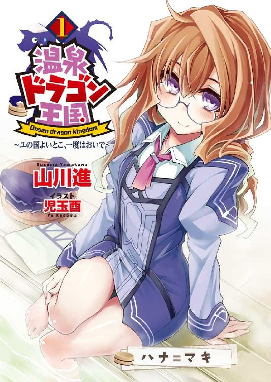
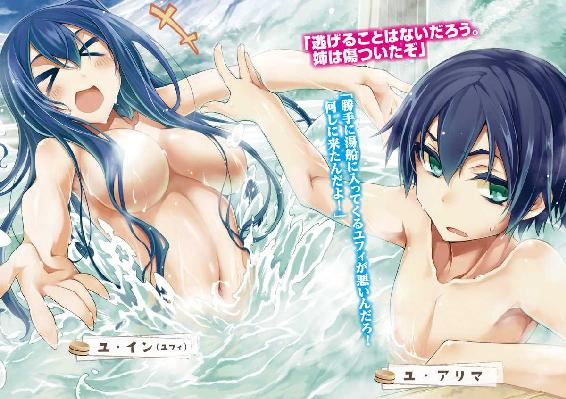
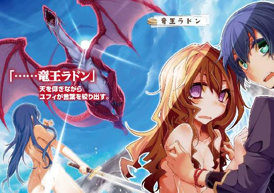
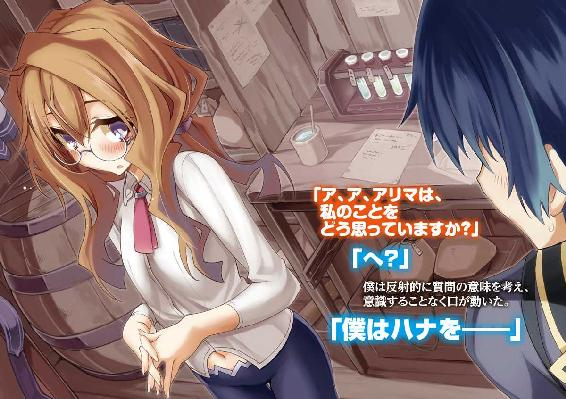
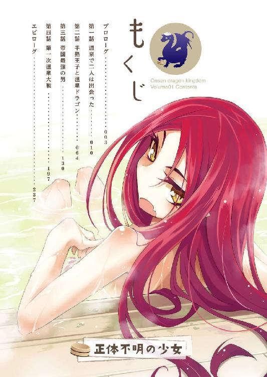
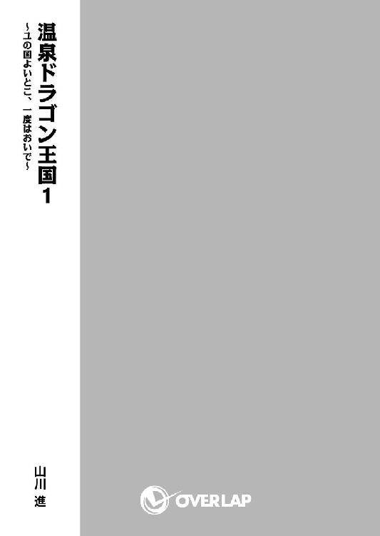
イラスト／児玉 酉
プロローグ
「なんてこった......」
極東の小国「ユ国」の王子である僕――ユ・アリマは、露天風呂で絶望に打ちひしがれていた。
浴室の壁を見れば、ここが王室御用達の浴場であることを示す、三本の稲妻をあしらったユ家の家紋が飾られている。
外を眺めれば、すり鉢状に広がる山間の森と、天に向かってそびえ立つ名峰ヌブル山が一望できる。露天風呂から眺める万年雪の霊峰は、まさに絶景だ。
大陸全土を統治していた「古代魔法国家」が滅亡して四〇〇〇年余り。世界から魔法技術は失われ、大陸は百の国が覇権を争う群雄割拠の時代を迎えていた。
そんな戦乱の大陸にあって、風光明媚な景色を望める大浴場はユ国にしか存在しない。露天風呂はユ国王子である僕の自慢であり、心からくつろげる憩いの場でもあった。
そんな憩いの場で、僕は湯に浸かりながら、書類の束を持って絶望に打ちひしがれている。
「金がないのは知ってたけど、まさかこれほどとは......」
湿気でしわしわになっている書類はユ国の内部資料であり、ここ三年にわたる国家予算の収支が記されたものだ。
ユ国は赤字だった。それはもう見事な赤字だった。目にも留まらぬ速さで突っ走る火の車だった。このままでは数年のうちに国が破産するであろう重大な危機だった。
「こんな状態になるまで陛下は何をしていたんだ」
あまりの惨状に書類を正視できないまま、僕は、いつものほほんと笑っている父の――国王陛下の顔を思い出す。
僕が十六歳の誕生日を迎えたとき、父は「そろそろ国政に関わってみるか」と言ってくれた。やる気に燃えた僕は意気込んで国の内部資料をかき集め......。結果、絶望に打ちひしがれている現在である。
早く手を打たなければ、三百年の歴史を誇るユ国が僕の代を待たずに滅亡してしまう。それだけは何としても阻止しなければ。
僕は湯船に肩まで浸かりながら考える。どうすれば傾いた財政を立て直せるのか。
だが、のぼせるほど湯に浸かっても何一つアイデアが閃かない。そりゃそうだ。簡単にアイデアが閃くなら、火の車になる前に誰かが手を打っている。それほどまでにユ国は金儲けに向いていない国なのだ。
――むにゅ。
唐突に、僕の背中に弾力のある柔らかい何かが押しつけられた。
「何を一人で難しい顔をしているのだ？」
聞こえてきたのはハスキーで艶のある女性の声。背後から抱きつくような格好で、細い腕が僕の首筋に絡みつく。マニッシュな言葉遣い、不遜な態度、そして背中に押しつけられた温かくて柔らかな二つのふくらみ......。
むにゅ、と柔らかな圧迫が加えられ、僕は茹で蛸のように顔を真っ赤にしながら叫ぶ。
「ユフィ！ 僕が入浴しているときは入ってくるなと何度言えば」
「良いではないか。姉弟水入らずで仲良くして何が悪い」
「姉弟でも男と女なんだから問題あるだろ！」
「ほほう。アリマは姉に欲情しているのか？ 浴場だけに」
くだらないダジャレを交えながら、ユ国王女であり僕の実姉であるユフィは、豊満な双丘をぐいぐいむにゅむにゅと押しつけてくる。密着されたうえに「ふっ」と耳に吐息を吹きかけられた僕は、たまらず姉を振り払い、ばしゃばしゃと水を掻き分け逃げ出した。
ユ・イン＝ユフィは僕の四歳年上の姉であり、ユ国が誇る天才剣士だ。
長身ですらりとした肢体。腰まで届く艶やかな長髪。目鼻立ちの整った凜とした面立ちで、明るく人懐っこい性格は老若男女を問わず誰からも好かれる、ユ国のアイドル的存在。
それほどの美貌でありながら、剣の腕前は国内では敵無し。大陸最強の兵団を有する武力国家「帝国」で行われた皇帝主催の御前試合でも、並み居る強豪を下して準優勝を果たすという快挙を成し遂げた剣の申し子。
そんなルックスも、性格も、剣の腕前も完璧な彼女に、重度のブラコンという致命的欠陥があることを国民の大半は知らない。
「逃げることはないだろう。姉は傷ついたぞ」
「勝手に湯船に入ってくるユフィが悪いんだろ！ 何しに来たんだよ！」
「何しに来たとはご挨拶だな。私はアリマが難しい顔をしていたから、体で慰めてやろうとしただけだ」
「言葉で慰めてくれればいいよ！ 体はいらないよ！」
「いけずだな。それでは私が楽しくないではないか」
「僕はユフィを楽しませるために悩んでるわけじゃない！」
ユフィに背中を向けながら怒鳴る僕。いまいち迫力に欠けるけど、裸の姉を凝視するわけにはいかないので仕方がない。
「で、さっきから何を悩んでいるのだ？ 性の悩みなら姉が全身で受け止めて......むむ？」
ユフィは僕がさっきまで読んでいた書類を見つけたようだ。ぱらぱらと紙をめくる音が背後から聞こえてきた。
「なるほど。アリマはユ国の貧しさに心を痛めているのだな」
「......そうだよ」
隠しても仕方がない。僕は背を向けたまま素直にうなずく。
「このままだとユ国は遠からず破綻する。国を存続させるには思い切った処置が必要だ。だけど、何をすればいいか思いつかなくて......」
口では何だかんだ言いながら、根っこのところで僕はユフィを信頼していた。ブラコン以外は非の打ち所がない自慢の姉に、僕はついつい甘え、頼ってしまうのだ。
「そういうことならば私に任せておけ。ようは大金が転がり込めばいいのだろう？」
どうやらユフィには秘策があるらしい。驚いた僕は思わず振り返り、全裸の姉を目にして大慌てで視線を逸らした。
「ど、どうする気？」
顔を真っ赤にしながら尋ねる僕へ、ユフィは露天風呂から見える景色を――ユ国が誇る名峰ヌブル山を指差す。
「ヌブル山へ行く」
ヌブル山は、多くの火山を抱えるユ国の中でも特に有名な活火山だ。美しい景観とは裏腹に、切り立った崖や毒性の強い火山ガスなど、自然の脅威が人間を寄せ付けない。そこは秘境であり、そして......。
「危険だよ！ ヌブル山といえばドラゴンの巣がある場所じゃないか！」
「それが狙いだ！ 私はヌブル山のドラゴンを生け捕りにする。生きたドラゴンを捕獲して見世物にすれば、世界中から見物客が集まってくるぞ！」
人の集まる所には金も集まる。ユ国を訪れた観光客の落としていくお金によって町が潤うという発想自体は理にかなっているけれど......。
「無茶だ！ いくらユフィが剣の達人でも、ドラゴンを生け捕りなんて無理に決まってる！」
「安心しろ。私は強い。それに、アリマを残して死んだりしない」
いつの間に近づいていたのか、ユフィの手が僕の肩を掴む。視線を上げると、間近にユフィの整った顔があった。ユフィの澄んだ瞳がゆっくりと近づいてくる。
「だが、正直に言うと少し怖い。だから私に勇気をくれないか？ 旅立つ前に、私と美しい思い出を......むちゅー」
「さっさと行け！」
ユフィが唇をタコのようにすぼめたので、僕は彼女の顔面を鷲掴みにして押し返した。
「やーん」と楽しげな声を上げながら、ユフィは背中から湯船に倒れ込み、盛大に水しぶきを上げた。
破廉恥な姉と浴場でじゃれあいながら、僕は考える。
ドラゴンはともかく、ユ国を観光地にするというのは悪くないアイデアだ。
問題は、どうやって観光客を集めるか。みんなが「この場所へ行きたい」と思うような魅力ある観光スポットをどう作ればいいか。
僕はマグマの熱で温められた地下水を利用した、広々とした開放感のある天然露天風呂に入り、緑豊かで風光明媚な景色を満喫しながら考える。
観光客が来たくなるような魅力的な何かが、果たしてこの国にあるだろうか？ そんなものがあるのなら、誰でもいい、僕に教えて欲しい。
第一話 温泉で二人は出会った
「では、ドラゴン退治に行ってくる」
純白の甲冑に身を包んだ女剣士が、馬上から爽やかにウインクする。
露天風呂での決意表明から一夜明け、日の出とともに叩き起こされた僕は、意気揚々と馬にまたがる姉を呆れ顔で眺めていた。まだ朝靄の残る王宮では、可哀想に、ユフィの旅程に付き合わされる兵士三名が黙々と馬に荷を積んでいる。
「本気でドラゴンを捕まえるつもりなの？ てっきり冗談だと思ってたよ」
「本気に決まっているだろう。アリマが喜ぶことなら私はどんなことでもするぞ」
重度のブラコン発言も、ここまで堂々とされるといっそ清々しい。
確かにユフィは強い。剣士としてならユ国の歴史上最強と言っても過言ではない。もしもユ国でドラゴンを倒せる人間がいるとしたら、それはユフィを措いて他にいないだろう。
しかもユフィは一度言い出したら絶対に引かない性格だ。それは血を分けた弟である僕が一番良くわかっている。
......それに、悔しいけど自信に満ちあふれたユフィはすごく格好いいんだよね。「これが僕の姉さんだ！」と大声で自慢したくなるほどに。
だから僕にはユフィを止められなかった。呆れ顔でため息をつくしかなかった。
「わかったよ。僕はユフィを応援する。だから絶対に生きて帰って来てよ。死んだりしたら許さないからね」
真顔で忠告すると、ユフィはわなわなと唇を震わせ、馬から飛び降りて熊を絞め殺す勢いで僕の頭を抱きしめた。
「なんて可愛い弟なんだ！ 大好きだぞ、アリマ！」
「いいから離せよ！ 甲冑が痛いんだよ！」
金属製の胸当てにごりごりと頭を押しつけられた僕は、力ずくでユフィの手をふりほどく。
「もういいから、さっさとドラゴン捕まえに行けよ」
「ふふふ、照れるなんて可愛いな」
「さっさと行け！」
こうして僕は、全身からラブラブオーラを放ちつつ、投げキッスしながら出発するユフィを王宮の外まで見送った。
門の外で姉が見えなくなるまで手を振りながら、僕は半年前にも同じように家族の旅立ちを見届けたことを思い出す。半年前にユ国を飛び出したしっかり者の妹は、遠い異国の地で元気にしているだろうか。
僕には四つ年上の姉と、四つ年下の妹がいる。姉のユフィが武勇に優れた女傑なら、妹のコハネは勉学に秀でた才媛だ。勉強の虫であるコハネは学問の盛んな隣国に留学していた。
姉と妹。出立した二人の無事を祈りながら、僕は王宮へ引き返そうとして......そこで、こちらを覗き見ている第三者の存在に気がついた。
背丈は僕より頭一つ小さい。小柄な人影は登山用の大荷物を背負い、汚れたフードを目深にかぶって顔を隠していた。年齢も性別もわからない怪しい人物が、木の陰からこちらを覗き見ている。
「王宮に御用ですか？」
僕が声をかけると、怪しい人影はあたふたした様子で周囲を見回してから、恐る恐る自分を指差した。そうですよ、あなたに聞いてますよ、他に人はいないでしょ。
「あ、あの......すみません......」
気弱そうに囁きながら、怪人物はフードを取って素顔をさらす。怪人物の正体は、ぼさぼさの髪、泥で汚れた顔、度の強い丸メガネが特徴的な、僕と同い年ぐらいの女の子だった。
「君はユ国の人間じゃないようだけど」
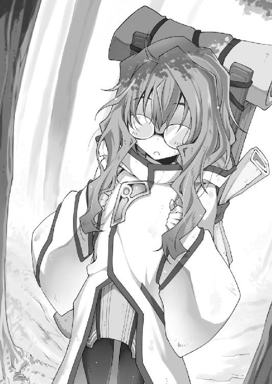
「は、はい！ 私、ハナ＝マキといいます」
名乗ると同時に勢いよく頭を下げる少女。その拍子に背負っていた荷袋の口が開き、中身が地面にぶちまけられた。「はうあっ！」と叫びながら、少女はあわてて荷物をかき集める。
「それで、王宮に何か御用ですか？」
「はっ！ そうでした！」
ハナと名乗った少女は荷物を抱えて立ち上がり、姿勢正しく背筋を伸ばす。
「えっと、私は、帝国軍聖遺物研究所所属の研究員で、あの、だから......国王陛下に会わせてくださいっ！」
そう叫ぶと、彼女は勢いよく頭を下げ、背負っていた荷物を残らず地面にぶちまけた。
ユ国は、大陸の東端に位置する小国だ。
東には広大な海が広がり、北の国境は宗教国家「教国」、南と西の国境は軍事国家「帝国」の領土と接している。地図で見ると「二大国の隙間にぽつんと残された小国」といった趣だ。
そんなユ国の唯一にして最大の自慢は、建国以来一度も戦争の被害を受けていないこと。戦争に参加したことも、戦火に巻き込まれたこともない。平和こそがユ国の自慢だった。
ユ国の北にある「教国」は、天地万物に神は宿るという自然崇拝の教えのもと、急速に勢力圏を広げている新興国だ。信仰という強い絆で結束した軍隊は、「聖戦」の名で他国への侵攻を繰り返している。
さらにユ国の西には、大陸最強の軍事力を誇る「帝国」が控えている。帝国は、大陸最大の版図を誇る巨大国家「連邦」と、大陸の覇権を賭けて長年争い続けていた。
これほどに強くて好戦的な国々と隣接しながら、ユ国は三百年の長きにわたってのらりくらりと侵略をかわし続けていた。
まあ、有り体に言ってしまえば「他国から相手にされていない」ってことなんだけど。
火山国であるユ国は国土のほとんどが山地であり、交通の便が非常に悪い。土地が痩せていて作物は育ちにくく、地震や洪水や火山噴火やドラゴン襲来といった自然災害も多い。
そんなわけで、国境を接する大国からは「占領する価値がない」とみなされて放置されているのがユ国の現状だ。
ユ国三百年の安寧は、諸国の無関心によって成り立っていた。
だから、帝国軍の肩書きを持つ人間が押しかけて来て国王陛下との謁見を要求するなど、前代未聞の出来事だった。陛下との取り次ぎを頼まれた僕が慌てるのも当然だ。
そんな非常時に当の国王陛下は何をしていたかと言うと......。
「お～い、陛下～」
「あんれまあ、アリマでねえか。どしたべさ？」
鍬で畑を耕していた野良着の大男が、僕の呼びかけに振り返る。
ここは町外れにある芋畑。ここで農民たちに紛れて土いじりに精を出している浅黒い顔の中年男こそ、誰あろう現国王のドーゴ三世だ。
「アリマが畑さ来るなんて珍しいんでねか？ オラと一緒に芋を作る気になったべか？」
「ならないよ」
首に巻いた手ぬぐいで汗を拭く国王に、僕は呆れ顔で言い返す。
僕の実父である国王ドーゴ三世陛下は、農作業が大好きだった。国策として農業を励行するだけでは飽きたらず、暇さえあれば野良着に着替えて農民と畑仕事に勤しんでいる。おかげで農民たちの田舎訛りが板に付いてしまい、威厳を損なっていること甚だしい。
僕に言わせれば「農業中心の国作りなんてやってるからユ国は貧乏なんだ」となるのだが、反面、庶民と肩を並べて農作業に励む王様は民から絶大な支持を得てもいた。貧しいながらも国が安定しているのは、国王の人気によるところが大きいのだ。
「そっちのべっぴんさんは誰だべさ？」
田舎者丸出しの国王陛下が、肩に鍬を担いだまま僕の隣を指差す。見れば、帝国からの使者であるハナ様が、あんぐりと口を開けて言葉を失っていた。
国王との謁見を希望したのに、芋畑で泥だらけになって働く農民を紹介されれば、誰でもこんな顔になるだろう。僕は背筋を伸ばすと、礼儀正しく紹介した。
「こちらは帝国軍所属の研究員ハナ様です。陛下との謁見をご所望とのことなので、お連れ致しました」
「帝国軍！」
驚いた国王は手ぬぐいで顔を拭くと、ぼさぼさ頭を手櫛で整え、表情を引き締めた。
「うむ、朕がユ国国王ドーゴ三世である。帝国からお越しとは遠路はるばるご苦労であった。して、我が国にいかなる用向きか」
王様らしく堅苦しい言葉遣いで応対する国王陛下。ここが芋畑で、服装が泥まみれの野良着である時点で諸々手遅れだけど。
「あ、あの、私、帝国軍聖遺物研究所の研究員で、ハナ＝マキと申します！ ほ、本日は、陛下にお願いがあって参りました！」
我に返ったハナ様は、祈るように両手を胸の前で合わせ、背の高い国王陛下を見上げた。
「私に、温泉を調べさせてくださいっ！」
熱い思いがこもった真摯な叫びを受け、国王陛下はキョトンとしながら僕を見る。
「......温泉ってなんだべ？」
「さあ？」
聞き慣れない単語に首を傾げる僕たち親子。その隣で「がーん！」という表情を浮かべてショックを表現するハナ様。そんな驚いた顔されても知らないものは知らないから。
「お、温泉というのは、温かい泉のことです」
「温かい泉？」
ひょっとして王宮の露天風呂で使っている、火山のマグマで温められた地下水のことを言っているのだろうか。だけど、帝国の人間が温かい地下水の何を調べると言うのか。
国王陛下も同じように思ったらしい。僕の顔を見て首を傾げると、すぐさま威厳を保つように背筋を伸ばした。
「よかろう。温泉とやらの調査を許可する。ただし、調査内容と結果をそこにいるアリマに報告することが条件だべ......条件だ」
「あ、あの、堅苦しい言葉遣いがお嫌なら、普段のしゃべり方で構いませんが」
「んだべか？ ほだばそうさせてもらうべさ。いや～、王様らしくするのは肩が凝っていかんべさ」
砕けすぎだろ！ 心の中で叫びつつ、ぐっと堪える僕だった。
「ほだば、アリマ。お前がこのべっぴんさんを案内してやれ」
「僕が......ですか？」
表面上は丁寧な言葉遣いで問い返すが、内心では「ふざけんな、こっちは貧乏国家の財政再建で忙しいんだ、余計なことに構ってられるか」と不満たらたらだ。
そんな僕の不満にも気づかず、朗らかな国王陛下は、のほほんと笑いながら命令する。
「んだんだ。帝国からの賓客には、それなりの人間を付けるのが筋だべさ。王子であるアリマなら文句なかんべ」
「王子!?」
僕のことを何だと思っていたのか、ハナ様がメガネの奥で目を丸くする。
「す、すみません！ てっきり下っ端の門番だとばかり......失礼しました！」
「その発言が一番失礼ですね」
「あわあわ」と悶えながら僕と国王を交互に見比べるハナ様は、さながら二匹の猫に挟まれた憐れな鼠のようだ。
......帝国軍にはもっとマシな人材はいないのか。
よその国の軍隊を本気で心配したくなる僕だった。
王宮の露天風呂がいつでも適温なのは、地熱で温められた湧き水を――ハナ様風に言うなら「温泉」を――汲み上げ、常時大浴場へと流し込んでいるからだ。そこで僕はまず、温かい湧き水の出所――ハナ様風に言うなら「源泉」――へと彼女を案内することにした。
ユ国の王宮は山の裾野に建てられている。質素だが頑丈な石造りの建物は、この地にあった遺跡を改修したものだ。同様に、山の麓から王宮まで温泉を引く設備にも、古代人の遺跡が流用されている。
僕は遺跡の一つである、裏山の麓にある山小屋へ......源泉へとハナ様を案内した。
「すごい！ これがすべて古代人の遺跡なのですか！」
小屋の地下へと案内されたハナ様が、見慣れない設備に興奮して歓声を上げる。
広い地下室には一面タイル張りが施され、正面の壁には湖に映るヌブル山の風景が大きく描かれていた。側面には滑らかに研磨された鏡が幾つも張られ、ここが高度な文明によって作られた人工的な場所であることを示している。
もちろん、長い年月を経てタイルは半分以上がはがれ落ち、壁や鏡はコケや黒カビによって本来の美しさを大いに損なっているのだけれど。
「浴槽が一、二、三......八つも！ このお湯はすべて温泉なのですか？」
「はい。それぞれ別の源泉から汲み上げた、成分の異なる八種類のお湯です」
補強された八つの風呂桶には、それぞれに別個の源泉から湯が注がれていた。この中で一番湯量の多い温泉が、王宮の露天風呂に流れ込む仕掛けになっている。
「八種類......。狭い範囲から成分の違う温泉が八つも湧き出るなんて信じられない......」
「そうなのですか？」
「そうなのですよ！ 温泉とは地熱で温められた地下水のことです。同じ土地の温泉ならば、源泉の場所が離れていても地下では繋がっているのが普通です。だから成分が異なることはまずありません。それなのに、ここでは同じ土地から八種類もの温泉が湧き出ている......。すごいです！ 本当にすごいです！」
よほど温泉が好きなのだろう。さっきまでの気弱さが嘘のように、彼女は目を輝かせて熱弁を振るっている。
「裏山にはここと同じような源泉が幾つもあります。どれも成分の違う温泉なので、良ければそちらも案内し――」
「全部成分が違う!?」
両目をくわっと見開いたハナ様が、僕の胸ぐらを掴んで引き寄せる。
「お、おおお教えてください！ いったい何種類の温泉がここにはあるんですか！」
「え、ええと、全部で二百種類ぐらいかな？」
「二百種類!?」
ハナ様は僕を突き飛ばすと、微笑みながら地下室の中央でくるくると回り、祈りを捧げるように両手を胸の前で組んで片膝をついた。
「神よ。ここは天国です。温泉パラダイスです......」
キラリ。メガネの下から感激の涙がこぼれ落ちた。
「そこまで感激するなんて......。帝国では温泉がそんなに珍しいんですか？ 僕にはそれほどありがたい物とは思えないのですが」
二百種類の温泉と日常的に接してきた僕が素朴な疑問を口にすると、ハナ様は「聞き捨てならない」とばかりに目をぎらつかせ、ずかずかと大股で歩み寄ってきた。体が密着しそうなほどに接近された僕は、あまりの迫力にのけぞってしまう。
「いいですか？ 温泉は奇跡の泉です。四〇〇〇年前、大陸に一大文明を築いた古代人は、温泉が持つ奇跡の力によって若さを保ち、怪我を癒し、万病を克服したと伝えられています」
「温泉にそんな不思議な力が......」
「あるんです！」
ずいっと顔を寄せてくるハナ様。顔が近すぎてメガネが僕の鼻にぶつかりそうだ。
というか、仮にも女子なのに無防備すぎる。汚れた顔に、ぼさぼさ頭に、色気のないメガネという僕の好みからは大きく外れた外見だけど、彼女の肌からは女性特有の甘い香りが漂ってきて僕はどぎまぎしてしまう。
「で、でも、温泉と言っても所詮はただのお湯でしょう？ お湯にどうしてそんな力が......」
「魔法です！ 温泉には魔法の力が宿っているのです！」
あらゆる不可能を可能にする神秘の力――魔法。
伝承によれば、古代人は強大な魔法の力によって栄華を極め、強大すぎる魔法の力によって破滅の道を辿ったとされている。時代とともに失われた秘術は、今も世界のどこかで密かに受け継がれているとも......。
そんな伝説の力が、温泉には宿っているのだとハナ様は力説する。
そういえば、帝国には魔法を研究している専門機関があると聞いたことがあるけど......。
「確かハナ様が所属しているのは、聖遺物研究所、でしたか？」
「はい。古代人が残した魔法に関わる遺跡・遺物を調査する、帝国軍の研究機関です。もちろん、『温泉』も古代人が残した聖遺物の一つです！」
「温泉が？ それは確かなのですか？」
「確かです！ 絶対に間違いありません！」
そ、そうだったのか。いつも入っている風呂が、実は古代人が残した魔法技術の結晶だったなんて、これは驚きだ。
驚愕の事実に言葉を失う僕へ、ハナ様は熱の籠もった口ぶりで温泉の歴史を語る。
「かつてこの地には温泉をこよなく愛する古代人種――『湯人』が暮らしていました。湯人は争いを嫌い、魔法の力を平和のためだけに利用しました。彼らが作り上げた『温泉』こそ、人を癒すことに特化した魔法なのです！ 古文書にはこうあります。『温泉に肩まで浸かりし者、心穏やかになり、闘争心は湯に溶け消え去るであろう。温泉を愛する者、たちまち傷は癒え、病を跳ね返し、長寿を得ることが出来るであろう』と」
「温泉がそんなにすごいものだったなんて......」
――その瞬間、稲妻の如き天啓が僕の全身を撃ち抜いた。
温泉。それはユ国に与えられた天の恵み。傷を癒し、病をはね除け、長寿を与える魔法の泉。こんなに素晴らしい物を利用しない手はない！
奇跡の泉「温泉」の存在を大々的に宣伝すれば、ユ国は大陸随一の観光地になれる。温泉目当てに観光客がわんさと押し寄せれば、ユ国は今よりずっと豊かになる。
貧しいユ国を救う方法。それは、ユ国を世界一の温泉国家にすることだったんだ!!
「殿下！ アリマ殿下！」
僕が王宮の書庫で古文書を漁っていると、軍服を着た髭面の壮年男性が、どかどかと足音を響かせながら怒鳴り込んで来た。
年相応のしわがれた野太い声。筋肉質なのにでっぷりとして見える寸胴体型。見事に色の抜けた白髪頭に、口元に白い髭をたっぷりと蓄えた髭面。略式とはいえ普段から軍服を着込み、軍靴を響かせながら王宮内を闊歩する彼こそ、祖父の代からユ国に仕える忠義の士、齢六十を超える老将軍イブスキだ。
「こちらでしたか！ 捜しましたぞ！」
「相変わらずイブスキは声が大きいね。それに、いつも軍服で息苦しくないの？」
「常在戦場！ 将軍たるもの軍人の鑑でなければなりません！ いつ戦争が起こっても戦えるように、常に身支度は整えております！」
「ユ国は建国以来一度も戦争したことないけどね」
生真面目が服を着て歩いているようなイブスキは、我が国一番の堅物だ。軍人という職務に誇りを持ち、いつでも自分を厳しく律している。自分に厳しいだけならまだしも、他人にも厳しさを求めるので始末が悪い。
「それよりも殿下！ 帝国の人間を王宮に招いたというのは事実なのですか！」
「ハナ様のことかい？ 確かに僕が王宮を案内してあげたけど」
「なんと愚かなことを！ その者が帝国のスパイだったらどうするおつもりか！ このままでは我が国の内情が帝国に筒抜けになりますぞ！」
「外に漏れて困るような情報なんて何もないだろ。だいたい今の国王になってからは、国民全員が王宮の内情を知ってるよ」
農民たちと仲良く畑仕事をする国王陛下は、身分など気にせず誰とでも気さくに会話を楽しむ人だ。王宮で起こった出来事も陛下にとっては世間話の種でしかない。きっとユ国の国民は、僕が何歳までおねしょをしていたかも知っているに違いない。
「我が国の軍事機密が帝国に漏れることは国防に関わる重大事ですぞ！」
「機密情報なんて知らなくても、帝国が本気で攻めて来たらユ国はひとたまりもないよ」
余談だが、ユ国の国軍は総勢で五〇〇人ほどだ。もしも大陸最強を謳う帝国軍が全力で攻めてきたら、三日と保たずに王都は陥落するだろう。もっとも、王都に到着するまでに険しい山道を数週間かけて行軍しなければいけないが。
まあ、攻めて来ないとわかっているから、こうして笑い話に出来るのだけれど。
「し、しかし」
「イブスキは心配性だね。そこまで言うなら実際にハナ様に会ってみればいいよ。そうすれば、彼女が人を騙すような人間じゃないとわかるはずだ」
「なんと！ 今日初めて会った者をそこまで信用されるとは......。おのれ帝国の女狐め！ アリマ殿下の純粋なお心につけ込むとは、許せん！」
「イブスキはもっと人を信じるようにした方がいいと思うよ」
「殿下こそ簡単に他人を信用しすぎです！ 人が好いのは結構ですが、何でもすぐ鵜呑みにしていてはいつか痛い目にあいますぞ！」
「失礼だな。僕のどこがお人好しだって言うんだよ」
石頭のイブスキを相手にするのは疲れる。僕は彼との話を打ち切ると、古文書の読解作業に戻ることにした。
「殿下は先ほどから何を読まれているのですか？」
「かつてこの地に住んでいた『湯人』に関する資料だよ」
「湯人、ですか？」
「湯人について調べれば、温泉で国を立て直すためのヒントが見つかるかと思ってね。ほら、これなんて面白いと思わないか？」
イブスキにも見えるように、古文書のページを大きく開く。そこには木造の家屋らしき建築物が描かれていた。
「これは『旅館』という建物だ。湯人はここで料金を払って温泉に入り、日々の疲れを癒していたそうだ。......そうか、ひらめいたぞ！ ユ国の王宮を改築して温泉旅館にするんだ！ そうすれば国外から来た人でも安心して温泉を楽しめる！」
「し、しかし殿下」
「殿下ではない！ 今日から僕のことは番頭と呼べ！」
「は？ いったい何を!?」
「古文書によれば、温泉旅館の最高責任者は『番頭』と呼ばれていたそうだ。決めたぞ、イブスキ。僕は新時代の番頭になる!!」
癒しと安らぎの伝道師「湯人」の文化を現代に甦らせる。それが新時代の番頭である僕の使命！ 温泉旅館が軌道に乗れば、ユ国は観光地としての成功を約束されたも同然だ。古文書を繙きながら、僕は輝かしい未来へと思いを馳せる。ふふふふ、あははは。
「で、殿下が、女スパイの甘言に毒されていく。早く手を打たなければ......」
輝かしい未来に思いを馳せていた僕は、イブスキの深刻な声にも気づかなかった。
その夜。古文書の読解に丸一日を費やした僕は、心地良い疲労感を味わいながら露天風呂へと足を運んだ。疲れたときは風呂で一汗かいてさっぱりするのが僕の習慣だ。
脱衣所で素っ裸になった僕は、全裸の開放感に浸りながら浴室の扉を開ける。露天風呂ならではの、外の冷気と湯気の熱さが肌に心地良い。
「......あれ？」
無造作に湯船へと歩み寄った僕は、湯気の向こうに人影が見えて思わず足を止めた。
どうやら先客がいたようだ。「いったい誰が」と目を凝らしてみると......人影は、見覚えのない若い女性だった。
こちらに背を向けているので顔はわからない。胸元まで湯に浸かり、手のひらで湯をすくっては肩にかけて「はぁ......」と艶っぽい吐息を漏らしている。
華奢で色白な背中は日焼け跡一つない清らかさ。瑞々しい白い肌と、肩胛骨を流れ落ちる水滴が、月光を浴びて妖しく輝いている。濡れないように髪をアップにまとめており、白いうなじに貼り付くほつれた髪の毛がたまらなく色っぽい。
「......？」
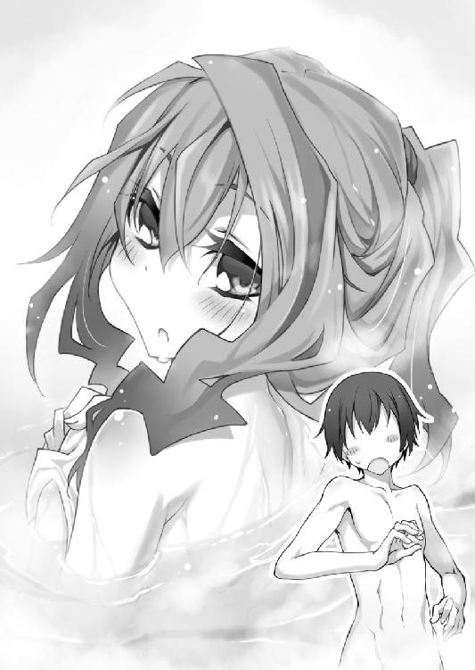
僕の視線に気づいたのか、入浴中の女性がこちらを振り返る。
美少女だった。彼女の清純さと可憐さに、僕は一瞬で魂を鷲掴みにされてしまった。
入浴中の美少女と、全裸の僕が、湯気を挟んで見つめ合う。この状況を僕はどう受け止めればいい？ 僕はこれからどうすればいい？ 突然の事態に前を隠すことも忘れて立ち尽くしていると......可憐な美少女は眼を細め、あろうことか湯船で立ち上がった。
「ちょ、待った！ 君、見え、見え――」
純情かつチキンな僕は、片手で自分の目を遮りながら、無防備な少女に警告する。ほんの一瞬だけ垣間見えた裸が......お湯に濡れた曲線美が、瞼に焼き付いて離れない。
「え？ その声は」
美肌を露わにしたまま、露天風呂の美少女が僕を見つめる。
あれ？ 今の彼女の声、聞き覚えがあるぞ。まさか、ひょっとして......。
「......ハナ様、ですか？」
「......」
彼女は静かに腰を下ろし、「ちゃぷん」と肩まで湯に浸かると、湯船の端へと移動した。
「めがねめがね」
小声で囁きながら、彼女は湯船の端を手探りする。そこに置いてあった度の強い丸メガネを掴み、装着して、改めて僕を見た。
「きゃ――――っ!!」
「ギャ――――ッ!!」
つられて僕も悲鳴を上げる。って、錯乱してる場合じゃない！
「お、落ち着いてください。どうしてハナ様が王宮の露天風呂に入っているのですか？」
「わ、わわわわ私は、た、たたたた旅の汚れを落とそうと思って」
湯船の隅で体を丸めて縮こまるハナ様。そんなに僕が怖いのか、あからさまに怯えている。うん、まあ、入浴中にいきなり全裸の男が入ってきたら普通は怯えるよね。
そういえば昼間のハナ様は、髪はぼさぼさで全身泥だらけのひどい有様だった。風呂に入って旅の汚れを落としたいと思うのも当然だ。
「ア、アアアアアリマ殿下は、どどどうしてここに？」
「どうしてって、ここは王族専用の浴場ですから」
僕は壁に掛かっている紋章を――三本の稲妻をあしらったユ国の紋章を指し示す。
「王族......専用？」
どうやら知らずに入浴していたようだ。ハナ様の顔色が見る間に青ざめていく。別人のように綺麗になったハナ様が、あたふたとうろたえる姿はやけに滑稽で、和んだ僕はようやく冷静さを取り戻すことが出来た。
王族専用とは言うものの、王族以外が入ってはいけない決まりはない。それにちょっとだけ眼福だったし、ここは僕が引くのが円満な解決法だろう。
「ハナ様が入浴中とは知らず、失礼しました。僕は部屋に戻りますので、ハナ様はごゆるりと露天風呂をお楽しみください」
「い、いえ！ 出るなら私が！」
慌てたハナ様が湯船で立ち上がり、ハッとした様子で体を隠してお湯に潜る。
ちなみに純情かつチキンな僕は、せっかくの眼福チャンスだったのに、とっさに彼女から目を逸らしていた。うう、恥ずかしさで顔から火が出そうだ。
「そ、それでは、僕はこれで......」
「あ、あの」
退去しようとする僕を、ハナ様のか細い声が引き留める。
「ア、アリマ殿下は、お風呂に入りに来たんですよね？」
「そうですが......」
「じゃ、じゃあ、一緒に入りませんか？」
......は？
「何を言ってるんだこの人は」と思いながら、僕は湯船を振り返る。ハナ様は恥ずかしさを堪えるように、顎まで湯に浸かりながら上目遣いに僕を見ていた。
「ゆ、湯人には、『混浴』という文化があったそうです。男女が一つの湯船に入るのは、決して恥ずかしいことではないと......だから、その......」
どうやら彼女は、自分のせいで僕を追い出すことを心苦しく思っているらしい。そこで考えた円満な解決策が「混浴」という辺りは、発想がかなりズレているけれど。
「ど、どうぞ......」
弱々しくつぶやくと、ハナ様は湯船の中で膝を抱えて僕に背中を向けた。
美少女に「どうぞ」と誘われて、僕は......。
「じゃ、じゃあ、失礼します......」
こうして僕は、ハナ様と背中合わせになりながら同じ湯船に浸かることになった。なんだこの状況は？
今日会ったばかりの美少女と一緒に風呂に入るなんて、なんというファンタジー。心臓をばくんばくんと鳴らしながら、僕は身じろぎ一つせずに黙り込む。張り詰めた緊張感に、疲れが取れる気がまるでしない。
「お、お、お」
沈黙に耐えられなくなったのか、ハナ様が声をうわずらせながら会話の口火を切った。
「お、温泉饅頭って、ご存じですか？」
「はい？ まんじゅう？」
「そ、そうです。湯人は温泉饅頭なるデザートを好んで食べていたそうです。それがどんな食べ物なのか、ずっと気になっていて......」
「それは初耳です。お湯に卵を入れて半熟とろとろのゆで卵を作ることならありますが」
「まさか、それは伝説の温泉たまご!?」
「はい？ ただのゆで卵ですが」
「いいえ、違います！ 温泉たまごは湯人の時代から連綿と受け継がれてきた伝統食です！ 私は温泉たまごにこそ不老長寿の秘密が隠されていると睨んでいます！」
「そ、そこまで......」
「はい！ 古文書によれば、饅頭とたまごは温泉旅館に必要不可欠なアイテムで――」
温泉の研究に人生を捧げているハナ様は、温泉話になると我を忘れるようだ。いきなりの熱弁に驚いた僕が振り返ると、さっきまで背中を向けていたはずのハナ様が四つん這いの体勢で間近まで迫っていた。
「あ......」
そのまま僕たちはしばし見つめ合い、どちらからともなく目を逸らす。再び背中合わせになって膝を抱える僕たち。のぼせたわけでもないのに、やけに顔が熱い。
気まずい空気のまま、しばしの沈黙。......やがて、ハナ様は声をうわずらせながら再び会話の口火を切った。
「お、お、温泉たまごは、美味しいですか？」
「ぷっ」
僕は吹き出しそうになるのを必死に堪える。なぜだろう。ハナ様の言動はどこかズレていて愛嬌がある。つまり、平たく言うと、なんだかすごく可愛い。
「美味しいですよ。明日にでも仕事場にお持ちしましょう」
「そ、それは楽しみです」
「よろしければ、温泉旅館に必要なものを他にも教えていただけませんか？」
僕は王宮を改築して温泉旅館にする計画をハナ様に打ち明けた。期待通り、温泉語りが大好きな彼女はこの話題に食いついてくれた。温泉旅館について僕の知らなかった情報をたくさん教えてくれたのだ。
「湯人の民族衣装である『浴衣』は必須だと思います。浴衣は温泉旅館の正装ですから」
「浴衣か。なるほど、さっそく調べて職人に作らせましょう」
「それから、旅館には番頭の他に『仲居』や『板前』という職種があります」
「それなら古文書で読みました。確か、板前は料理人のことですよね。仲居は......ホステスのようなものですか？」
「いえ、むしろメイドが近いのではないかと」
湯船で背中合わせになりながら、僕たちは温泉談義に花を咲かせる。初対面のときはまともに喋れない内気な子だと思ったけど、どうしてどうして、よく笑ういい子じゃないか。
「......温泉の力ってすごいですね」
盛り上がった温泉話が一区切りついたところで、ハナ様はしみじみとつぶやいた。
「私は人と話すのが苦手で、なかなか他人と打ち解けられなくて......。ここまで誰かと気楽に話せたことは今までありませんでした」
「それも温泉の力だと？」
「はい。湯人の国には『裸の付き合い』という格言があります。一緒に温泉に入れば、身も心も解放されてすぐに打ち解けられるという意味です」
僕との会話が弾んだのは、ハナ様にそれだけの魅力があるからだと思うけど。
そう思ったものの、そのまま言うとまるで冷やかしのように受け取られかねないので、僕は口を挟むのを控える。
「殿下とこれほど打ち解けられたのは温泉のおかげです。温泉に感謝しないといけませんね」
「その『殿下』と言うのは止めにしませんか？」
これも温泉の影響だろうか。裸の付き合いをした彼女へ、僕は自然に提案していた。
「僕のことはアリマでいいですよ」
「......では、私のことはハナと呼んでください」
背中越しに、照れながらも楽しそうなハナ様の......ハナの声が返ってきた。くすくすと声を殺して彼女は笑う。
「私、同年代の男の人とこんな風に話せたのは初めてです。これが混浴なんですね。これが裸の付き合いなんですね。私、決めました。これからはいろんな人と混浴します！」
「うん。それはやめた方がいいと思う」
そうして僕たちは背中合わせのまま、夜が更けるまで語り合った。
少しのぼせた。
数日後。ハナに誘われた僕は、温泉たまごを持って裏山へと赴いた。
温泉を調べるのに都合がいいからと、ハナは源泉を管理している山小屋に寝泊まりしている。何度か訪ねたことがあるが、ハナが持ち込んだ研究資材によって小屋はさながら温泉研究所と化していた。
「それにしても、馬なんて何に使うのかな？」
馬の手綱を引きながら、僕は山道を登る。ハナから「駄馬を一頭用意して欲しい」と頼まれたので連れてきたけれど、わざわざ「駄馬」と指定するのはどういう意図なのか。
「アリマ」
馬を連れて斜面を登っていると、山小屋の前で手を振るハナが見えた。まだ呼び捨てに慣れていない彼女は、僕の名を呼びながらはにかんでいる。
「こんにちは、ハナ」
「こ、こんにちは」
緊張しながら、たどたどしく頭を下げるハナ。温泉の話をするとき以外はいつもこんな調子なので、彼女の挙動不審な姿もさすがに見慣れてきた。
「言われた通り馬を連れてきたけど、これで何をするの？」
「今日は......私がここでどんな研究をしているか、ちゃんと話しておこうと思って......」
これから何が始まるのかと思っていると、ハナはポケットから試験管二本を取り出した。
「これは、この山で採取した源泉のサンプルです。試験管には、別々の場所で採取した成分の異なる温泉水が入っています」
興が乗ってきたのか、説明するハナの舌が徐々に滑らかになっていく。普段もこのくらいしゃべってくれればいいのにと思いながら、僕は黙って彼女の話に耳を傾けた。
「まず、この温泉Ａを馬にかけます」
どぼどぼどぼ。ハナは片方の試験管に入っていた温泉を馬の背にかけた。
「次に、この温泉Ｂを馬にかけます」
どぼどぼどぼ。ハナはもう一本の試験管の中身を馬の背にかけた。
これから何が始まるのか。
そう思う僕の目の前で、馬がマグロになった。
「............マグロ？」
さっきまで馬がいた土の上で、体長二メートル程のマグロがぴちぴちしている。
予想外の出来事に、僕の理解が追いつかない。とにかく目の前で起こったことをそのまま表現すると、「馬にお湯をかけたら一瞬でマグロに変身した」ということだ。言ってる僕自身も何が何だかさっぱりわからない。
「これが温泉です！」
両手に試験管を一本ずつ持ったハナが、胸を張って宣言する。
「温泉はその泉質によって疲労回復、健康促進、傷の治療など多彩な効果を発揮します。それらはすべて温泉に秘められた魔力成分の作用によるものです。そして、複数の温泉を組み合わせれば魔力成分を変質させることが出来る。温泉と温泉を混ぜ合わせることで魔力成分を変化させ、奇跡の力を持つ温泉を作り上げる......これが私の研究です！」
衝撃の事実に、僕は返す言葉が見つからない。
ハナが調合した温泉には「馬をマグロに変える」効果があった。にわかには信じがたいけど、目の前でぴちぴちしているマグロを見せつけられたら事実として受け入れざるを得ない。
「これは魔法なのか？」
「いいえ、魔法ではありません。古の湯人は温泉の奇跡をこう呼びました。......『効能』と！」
「効能!!」
「魔法」ならぬ「効能」を目の当たりにして、僕の心は興奮に打ち震える。
だってそうだろ？ 温泉の効能を自由に使いこなせれば――自在に奇跡を起こせれば、どんな願いだって叶えられるじゃないか！
「つまり温泉の組み合わせ次第で、肉体改造、性格変化、超能力付与、変身、再生、増毛など、どんな奇跡も起こせるということか......」
「理論上はそうです。ですが......」
興奮気味に解説していたハナが、表情を曇らせる。
「どの温泉とどの温泉を掛け合わせたらどんな効能になるかは、実際に試してみなければわかりません。実験で一つ一つ検証するしかないんです。目当ての効能を見つけ出すだけで果たして何年かかるか。すべての効能を解明するには何十年、何百年とかかるかも......」
確かに、この山だけでも二百以上の源泉が存在する。二種類の温泉を組み合わせるとして、組み合わせパターンは数万通り。三種類以上の組み合わせも含めれば桁外れな数になる。
しかも調合した温泉がどんな効能を発揮するかは、試してみなければわからない。さっきの例で言えば、馬に温泉をかけてみなければ「馬がマグロになる」効能は永遠に発見できなかっただろう。そして普通、馬に温泉はかけない。
そんな作業を何万回と、しかも手作業で調べるなんて気の遠くなる工程だ。
「ハナはすごいな。こんなすごい研究を一人でやっていたなんて尊敬するよ」
「私はすごくなんてありません」
素直に感心する僕へ、うつむき、か細い声でハナが答える。
「私は無能です。誰からも期待なんてされていないんです。だから......」
いつにも増して自信がなさそうなハナの表情。何かを思い詰めている様子が気になった僕は、彼女を元気づけてあげようと無意識にハナへと手を伸ばす。......だが、
「殿下！ その女に近づいてはなりません！」
聞こえてきたしわがれた声に、僕は伸ばしかけた手を止めた。
振り返れば、老将軍イブスキと、革鎧を着込んだ数人の兵士が山道を登ってくるのが見えた。何ごとかと戸惑う間に、駆けつけた兵たちが素早くハナを取り囲む。僕が見ている前で彼らはハナの腕を掴み、力任せに地面へと引きずり倒した。
「何をしている！ ハナを離せ！」
「いけません！」
駆け寄ろうとした僕をイブスキが押しとどめる。
兵士に拘束されたハナが、不安そうな目で僕を見る。本人も何が起こっているのか理解できていないのだろう。彼女の瞳は動揺と恐怖で彩られていた。
「説明しろ、イブスキ！ なぜ彼女にこんなことをするんだ！」
「その者が己の企みのために殿下をたぶらかしているからです」
「ハナを侮辱するのか！ 僕はたぶらかされてなんか――」
「その女は聖遺物研究所の研究員ではありません！」
イブスキがはっきりと言い切り、僕は言葉を失う。僕の祖父の代から王家に忠誠を誓っているイブスキは、誰よりも実直な男だ。こんなことで嘘をつくとは思えない。
絶句しながらハナを見ると、正体がばれたことに驚いているのか、彼女はメガネの奥で目を大きく見開いていた。
冷静に、忠義の老将軍は事のあらましを語り出す。
「殿下とその者が急速に親しくなるのを不審に思い、念のため帝国側に確認いたしました。その結果、ハナ＝マキなる研究員は存在しないとの報告を帝国側より受けました。その女は帝国軍聖遺物研究所の名を騙り、殿下に取り入ろうとしたのです」
「僕に取り入るって......何のために？」
「それを今から吐かせます」
イブスキの合図で兵士たちがハナを引っ立てる。抵抗する気力もないのか、ハナは促されるまま兵士に連れられて歩き出した。
「ハナ......」
僕の呼びかけも届かず、ハナは茫然自失の体で僕の横を通り過ぎる。イブスキは僕に敬礼すると、兵士とともにハナを連れて山を下りていった。
その場には、呆然と立ち尽くす僕と、ぴちぴち跳ねるマグロだけが残された。
「......僕はハナに騙されていたのか？」
連行されたハナを追いかけて夕闇迫る山道を歩き始めた僕は、しかし不安が頭から離れず、どうしても前を歩くイブスキたちに追いつけずにいた。
のろのろと山道を下りながら、思い出すのは......ハナの顔。ハナの声。ハナの仕草。
人見知りでいつもおどおどしていたハナ。汚れを洗い落としたら、美少女の素顔が現れたハナ。温泉について語り出したら止まらないハナ。露天風呂で背中合わせになりながら、楽しく笑いあったハナ。あれが全部嘘だったとは思えない。――思いたくない。
「やっぱり納得できない」
誰にともなく、ぽつりとつぶやく。
「確かめよう。ハナに会って、彼女の口から直接話を聞くんだ」
重かった僕の足取りが、徐々にペースを上げていく。ハナに会いたい、会って話を聞きたい。その思いが強まるほどに、僕の歩みは速くなる。
今ならまだ間に合う。急げばイブスキたちに追いつけるはずだ。
そうして王宮のそばまで来たところで、僕は異様な雰囲気に気がついた。王宮の出入り口に人が集まり、往来を兵士たちが慌ただしく行き交っている。王宮周辺はまるで蜂の巣をつついたような騒ぎになっていたのだ。
「アリマ殿下！」
顔見知りの衛兵が、僕を見つけて血相を変えて駆け寄ってくる。狼狽する衛兵を見て、僕はこれがただならぬ事態だと察した。
「これは何の騒ぎ？」
「は、はい！ たった今、ユフィ様がドラゴン退治から戻られて――」
言葉を濁すべきか迷ったのか。衛兵は口ごもり、それから意を決したように口を開いた。
「ユフィ様は重傷を負い、死にかけています！」
「ユフィ！」
僕がユフィの寝室に駆けつけたとき、部屋は肉の焼け焦げた匂いが充満していた。
ベッドで横たわるユフィを見て、僕は「うっ」と口元を押さえる。
ユフィは、ドラゴンの炎によって全身を焼かれていた。
瑞々しかった柔肌はもはや見る影もなく、見える範囲の皮膚はほとんどが赤黒く焼けただれている。端麗だった顔も左半分が火ぶくれで腫れ上がり、何者かわからないほどに変わり果てていた。
今さらながら、僕は綺麗な姉を自慢に思っていたのだと自覚する。彼女の美貌を根こそぎ奪われた事実が、姉に抱いていた憧憬を自覚させる。
吐き気を堪えながら壁にもたれかかった僕は、そこで初めて国王陛下とイブスキが部屋に居ることに気づいた。陛下は変わり果てた娘の姿にも眉一つ動かさず、毅然とした態度で彼女の傍らに立っていた。
「陛下......ユフィは......」
僕の短い問いに、国王陛下は力なく首を横に振る。
「医者は生きているのが奇跡だと......」
そんなこと見ればわかる。ドラゴンの炎に全身を焼かれたんだ。並みの人間ならとっくに死んでいる。
「どうしてこんなことに......」
僕の口をついて出た疑問に、答えたのは、僕より先に駆けつけていたイブスキだった。
「ヌブル山の竜王は、我々の想像を遥かに超えた強さだったそうです。勝てないと悟ったユフィ殿下は、せめて兵たちだけでも逃がそうと一人で竜王に立ち向かい......」
ヌブル山の主と言われている最凶の火竜――竜王ラドンに、ユフィは単身で戦いを挑んだ。部下の兵士たちを逃がすために、ユフィは自ら囮になった。
竜王が去った後、兵たちはユフィを探しに戻り、変わり果てた彼女を発見した。彼らはユフィを担いで山を下りると、一睡もせずにここまで運んだのだそうだ。
遠目からでは生きているか死んでいるかもわからない姉の惨状に、僕は足が震えて倒れそうになる。
......どうしよう。僕のせいだ。
僕のためにユフィはドラゴン退治に出かけたんだ。僕のせいだ。僕がユフィを殺したんだ。
僕は倒れそうになる体を必死に支えながら、覚束ない足取りで部屋を出る。ふらふらと廊下をさまよい歩き、足をもつれさせ、力尽きたように座り込む。
僕は無力だ。目の前でユフィが死にかけているのに、僕には何も出来ない。
このままではユフィは死ぬ。このままでは......。
「アリマ？」
不意に名前を呼ばれ、僕はハッとして顔を上げる。
連行される途中だったのだろう。部屋の外には、両手首を縛られたハナが兵士に挟まれる形で立っていた。
「大丈夫ですか？ なにがあったんですか？」
きっと僕は、今にも死にそうな顔をしていたに違いない。ハナは自分の置かれている状況も忘れて、真っ先に僕を心配してくれた。ハナの声を聞いただけで、僕は堪えていた感情があふれそうになった。
「ユフィが......姉が大やけどで死にかけているんだ」
嗚咽混じりの声で答えると、僕はわらにもすがる思いでハナの足にしがみつく。
あの大やけどを見ればユフィが助からないのは誰の目にも明らかだ。それでも、もしもユフィを救う方法があるなら......奇跡を起こす可能性があるとしたら......。
僕はハナの手を握る。この手を絶対に離すまいと、ハナが痛がるのも無視して握り締める。
「ハナ。温泉の力でユフィを助けてくれ。お願いだ」
「でも、私は......」
「おやめください、殿下！」
ハナが答えようとした、そのとき。ばたばたと床を踏み鳴らしながら、老将軍が部下を引き連れて現れた。座り込んでいた僕の体を、兵士二人が問答無用で引っ張り上げる。ハナと繋いでいた手が、いともたやすく引き離される。
「離せ！ 僕はハナに用があるんだ！」
「血迷われたか！ この者は帝国のスパイですぞ！」
「違う！ ハナはスパイなんて出来る子じゃない！ 僕はハナを信じる！」
イブスキは何も言わず、ただ哀れむような目で僕を見る。どうしてだよ！ どうして僕の言うことを信じてくれないんだ！
「お願いだ、イブスキ。彼女を解放してくれ。ユフィを助けるにはハナの協力が必要なんだ」
「殿下。この女に何を吹き込まれたか知りませんが、ユフィ殿下を助けることなど誰にも出来ません。この女は殿下の優しいお心につけ込んで利用しているだけです」
「そうじゃない。ハナと温泉の力があればユフィを助けられるんだよ」
「温泉？ いったい何を言って......」
「温泉には奇跡を起こす力があるんだ。僕はこの目で見たんだよ。ハナが、馬をマグロに変えるところを！」
「殿下......おいたわしや......。なぜこの女に騙されていると気づかないのですか」
「僕は騙されてなんかいない！ 僕は、馬がマグロになる瞬間をこの目で見たんだ！」
「馬がマグロになるわけないでしょう！」
「この石頭！ どうして信じてくれないんだ！」
僕とイブスキの怒鳴りあいは、平行線のまま一向に交わる気配を見せない。こんなことをしている場合じゃないのに。ユフィを救うには一分一秒も無駄に出来ないのに。
焦るほどに、僕は冷静な判断力を失っていく。そうして半ばパニックに陥っていた僕を救ったのは、混乱した場にそぐわない凜とした女性の声だった。
「私にやらせてください」
いつもおどおどしている彼女と同一人物とは思えない、引き締まった張りのある声。堂々と胸を張るハナの瞳には、覚悟を決めた者ならではの強い光が宿っていた。
「私に、アリマのお姉さんを救う手伝いをさせてください」
迫力すら感じさせるハナの声に、イブスキが目に見えて威圧される。
「だ、だが......」
「もしも救えなかったときは、私の首をはねていただいて構いません」
老将軍の戸惑いを押し切るようにハナが断言する。鬼気迫る彼女の態度に、その場にいた全員が、ハナは本気で言っているのだと認めざるを得なかった。
――かくて、ユフィの命運は温泉学者ハナの手に託された。
「こ、ここここ怖かったです～」
山小屋へ戻るなり、ハナは涙目でがくがくと震えだした。啖呵を切ったことを今になってびびっているようだ。反応が遅すぎると言うべきか。山小屋に到着するまでよく我慢したと言うべきか。
「格好良かったよ。正直言って見直した」
腰砕けになっているハナに手を貸しながら、僕は彼女を小屋の奥へと導く。
イブスキの許可を得て解放されたハナは、さっそくやけどに効く温泉を調合するべく、源泉を管理している山小屋へと戻って来た。
もちろん、ハナが逃げないように見張りの兵士が小屋の周囲を固めている。状況としてはハナの監禁場所が牢屋から山小屋に変わっただけだ。それだけでも堅物のイブスキにしてみれば大変な譲歩だけれど。
「それで、まず何をすればいい？」
手伝う気まんまんの僕が、目に涙をためているハナに今後の方針を尋ねる。イブスキの前であれほどの大見得を切ったんだ。きっとハナには温泉を作るめどが付いているに違いない。
「ええと......どうしましょう？」
とても頼りない答えが返ってきた。
「ごめんなさい、さっきは勢いであんなこと言ってしまって」
「勢い？ 勝算があって言ったわけじゃなかったの？」
「だって、アリマがいじめられているのを見たら、黙っていられなくて......」
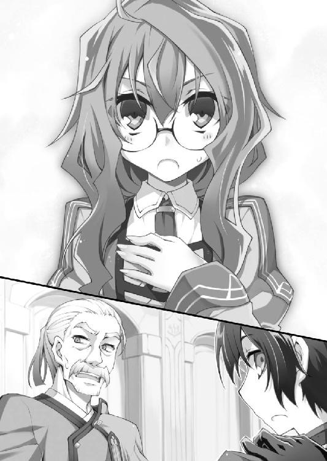
先ほどの毅然とした態度が嘘のような弱りきった声。小動物のようにつぶらな瞳をうるうるさせて、すっかりいつもの臆病なハナに逆戻りだ。
「僕はいじめられていたわけじゃないよ。イブスキは頭が固くて融通が利かないけど、忠節に厚いいいやつだから」
イラっとさせられることも多いけど、何だかんだ言って僕はイブスキのことが嫌いじゃない。だからなのか、僕は無意識に彼のフォローをしていた。出来るなら、ハナにもイブスキを嫌いになって欲しくなかったから。
「策がないなら考えよう。ユフィを助けられないとハナも首をはねられるんだから」
「は、はい。ええと、それでは」
ハナは棚に置かれていた本を手に取る。
「『馬をマグロに変える温泉』は古文書に記されていた成分を参考にして調合しました」
「なら、古文書を調べて『やけどを治す温泉』の成分がわかれば......」
「ですが、私の持っている古文書に成分が記されていたのは『馬をマグロに変える温泉』と『蟻をペガサスに変える温泉』の二つだけです」
「えらく内容が偏っている気がするけど、まあいいや。それで、どうしたらいい？」
「ユ国の書庫には湯人に関する書物があるそうですね。そこに手がかりがあるかも......」
「わかった。書庫を探してくる」
兵士に見張られているハナは山小屋を離れられない。僕は本探しを引き受けると、さっそく出口へ向かった。
「アリマ」
山小屋を出て行こうとした僕を、ハナが呼び止める。
振り向くと、ハナは照れくさそうに両手の指を絡めてもじもじしていた。
「......私を信じてくれて、ありがとう」
よっぽど恥ずかしいのか、顔を真っ赤にしながらハナはか細い声で囁いた。
――絶対に、ハナもユフィも死なせない。
僕は黙ってうなずくと、山小屋を飛び出した。
山小屋に持ち込んだ書物の山を、僕たちは片っ端から読み崩していく。二人がかりで本を読みあさり、ようやく「やけどを治す温泉」の記述を見つけたときは手を取り合って喜んだ。
だが、これはまだスタート地点でしかない。何万通りとある温泉の組み合わせパターンから、この成分になるような温泉の配合を見つけ出さなければいけないのだ。
「どうやって見つけ出すの？」
「成分がわかれば、どの源泉を組み合わせればいいかの目処が付きます。あとは考えつく組み合わせをしらみつぶしに試してみるだけです」
「でも、温泉を混ぜ合わせたら成分が変質するって前に言ってなかった？ それで狙い通りの成分を作れるの？」
「ですから、ここから先は、上手くいくかどうかは運次第です」
人事を尽くしたら、後は運を天に任せるしかない。しらみつぶしという時間のかかるやり方で、果たしてユフィの命が尽きる前に温泉を完成させられるのか......。
「ごめんなさい。私にもっと才能があれば」
僕の顔に失望の色が浮かんでいたのか。ハナが申し訳なさそうに肩をすぼめる。
「ハナは何も悪くないよ」
僕が落胆を押し隠すと、ハナは試験管を持つ手を動かしながら暗い表情で語り始めた。
「昔からそうなんです。私は無能で役立たずだから、研究所から見捨てられたんです」
なぜハナはユ国へ来たのか。なぜ自らを聖遺物研究所の研究員と名乗ったのか。ぽつぽつとハナは事情を打ち明ける。
「私は聖遺物研究所の一員でした。でも、研究所ではずっとお荷物だったんです」
結果を出せない人間に価値はない。帝国の社会にはそういう風潮があるらしい。聖遺物研究所に勤めるハナは、一途に温泉の研究を続け、しかしまったく実績を上げられずにいた。
「研究所の誰も私の話を信じてくれませんでした。温泉には奇跡の力がある、温泉の力で馬をマグロに変えられると論文に書いても、笑われて馬鹿にされるばかりでした」
古い価値観に凝り固まった人たちは、斬新な発想を認めようとしない。歴史を顧みても、奇抜な発想をして迫害を受けた天才の例は枚挙にいとまがない。
ハナが自分のことを「無能」だの「役立たず」だのと蔑むのは、きっと周囲からそう言われ続けたからだ。頭の固い同僚たちには、温泉の研究など異端にしか見えなかった。「常識」という自分本位の価値観で相手を否定する......それはとても悲しいことだ。
「あるとき、直属の上司に言われました。温泉の力を証明したいなら、本物の温泉を見つけて奇跡を起こしてみせろ。それが出来ないなら研究所を辞めろと」
それはハナへの最後通告。ハナは温泉の研究を続けたい一心で旅に出た。温泉を探して帝国全土を巡り、辺境の小さな国に温泉があるという噂を聞きつけた。
それがユ国。無名の小国であり、世界一の温泉大国。
「ユ国で私はついに悲願を果たしました。やっと温泉の奇跡を実証できたのに......。研究所はとっくに私を除名処分にしていたんです。私が旅に出ている間に、まるで厄介払いをするみたいに......」
研究一筋に生きてきたハナにとって、聖遺物研究所の研究員という身分は心の拠り所だったはずだ。それなのに、イブスキから「研究所にハナという研究員はいない」と聞かされた。ハナは聖遺物研究所に裏切られたと知った。
イブスキの一言でハナは何を失ったのだろう？ 帰るべき場所？ 研究者としてのプライド？ それとも、温泉の研究に費やしてきた彼女の人生すべてを否定されたのか？
「私にはもう何も残っていません。帰る所も、研究を続ける意義も......」
「......帰る場所がないなら、ずっとここにいればいい」
作業の手を止めたハナが戸惑いの眼差しで僕を見る。僕はなぜだか目を合わせられなくて、作業を手伝うフリをしながら早口でまくし立てた。
「だって、ほら、ハナがいれば温泉の力でいろんな人の願いを叶えられるだろ？ 『願いが叶う奇跡の温泉』という評判が広まれば、世界中から観光客が集まるに違いないよ。そうすればユ国も豊かになって、国民も幸せになれる。そうなることが僕の夢だから......」
自分でも何が言いたいのかわからないまま、僕はハナを見つめる。
「......だから、僕にはハナが必要なんだ」
僕たちは作業の手を止めて見つめ合う。
何秒ぐらいそうしていただろうか。見つめ合った僕たちは頬を朱に染め、どちらからともなく視線を逸らして、黙々と作業を続行した。
「出来た」
ろうそくの明かりに照らされながら、ハナが試験管を掲げて見せる。
試験管に入っているのは、苦労に苦労を重ねて完成させた調合済みの温泉。ハナの計算通りなら、古文書に記されていた「やけどを治す温泉」と同じ成分になっているはずだ。
「やった......」
徹夜で作業を手伝っていた僕は、そこでようやく窓から朝日が差し込んでいることに気がついた。ろうそくの明かりなどとうに不要となっていたことに、僕たちはまったく気づいていなかった。
「やったね、ハナ。一晩で完成させるなんてさすがだよ」
「そんなことありません。運が良かっただけです」
ハナははにかみながら答えると、ごにょごにょと何ごとか口ごもった。「それに、アリマがそばにいてくれたから」とつぶやいた気がしたけど......今は聞き返す時間も惜しい。
「それを持って早くユフィのところへ行こう」
「待ってください。全身のやけどを治すにはお湯の量が足りません。それに」
急ぐ僕を呼び止めたハナは、試験管を持ったまま、ろうそくへと近づく。
「調合した温泉が本当にやけどを治すかどうか、検証しないと」
確かに検証は必要だ。ぶっつけ本番でユフィに温泉をかけて、何も効果が出ないならまだしも、変な効能が発揮されて姉がマグロにでもなった日には目も当てられない。
「でも、効能を確かめるにはやけどをした人を連れてこないと......」
振り向いた僕は、ハナが自分の手をろうそくの炎であぶっている様を目撃した。
「なにやってるんだ！」
ハナに飛びつき、彼女の手をろうそくから引き離す。だがすでにハナの肌は赤く腫れ、ひどい水疱が手のひらに広がっていた。
「なんて馬鹿なことを！ 何を考えているんだ！」
「やけどの人を探すより、やけどの人を作った方が早いですから」
かなり痛むはずなのに、ハナは頬を引きつらせながら無理に笑顔を作ってみせる。
「いくら時間が惜しいからって、どうしてこんな無茶を」
「一秒でも早く完成させて、アリマのお姉さんを助けたいから」
絶対に痛いはずなのに、ハナは笑顔を崩さずに試験管を僕へと押しつける。
「私は、アリマの役に立ちたいんです」
試験管を受け取った僕の手を、ハナの手が包み込む。
「だってアリマは、誰も信じてくれなかった私の話を、温泉の奇跡を、信じてくれたから。アリマだけが私を信じるって言ってくれたから」
ハナの手に導かれるまま、僕は試験管を傾ける。
「だってアリマは、私を必要だと言ってくれたから」
試験管からこぼれたお湯が、やけどをしたハナの手に注がれる。
あんなにひどかったやけどの痕が、嘘のように消え去った。
怒濤の一夜から、数日が過ぎた。
あの後、温泉の奇跡によってユフィは一命を取り留め、功績を認められたハナは晴れて自由の身となった。
そして今日。晴れ渡る青空の下、僕は王宮の離れにある源泉に――ハナと二人で温泉の調合を行った山小屋の前に立っていた。
「これで良し」
山小屋の入口に取り付けたプレートを見て僕は満足げにうなずく。そこにはでかでかと「温泉研究所」、その下に小さく「所長 ハナ＝マキ」と記されていた。
「今日からここがハナの研究所だ」
隣に立つハナに声をかけると、彼女は両手で口元を隠して瞳をうるうると潤ませていた。
「信じられません。私が研究所を持てるなんて......」
「研究所とは名ばかりの山小屋だけどね」
「いいえ。温泉の研究をするのにここ以上の場所はありません。ありがとうございます」
ハナの喜びに満ちた笑顔から、彼女の感謝の思いがありありと伝わってきた。
僕だって男だ。美少女にここまで感謝されれば悪い気はしない。ぽりぽりと頬を掻きながら、僕はハナに笑い返した。......完全に照れ笑いだけど。
「感謝するのはこっちだよ。ハナのおかげでユフィは助かったんだから」
「いいえ。感謝するのは私の方です。すべてはアリマが私を信じてくれたから」
「いいや、感謝するのは僕の方だ」
「いいえ私が」
「いいや僕が」
「......いい加減にしてくれないか？」
僕とハナが感謝を押しつけあっていると、どこから現れたのかユフィが僕たちの間に割って入ってきた。
ユフィは袖のない無地のシャツにゆったりしたズボンという軽装で、不機嫌そうに腕を組み、僕ら二人を睨みつけている。なんだろう、じとーっとした目つきがとても威圧的だ。
温泉の力はたいしたもので、ユフィの顔はもちろん体のどこにもやけどの痕は残っていない。強く美しい姉は、輝く美貌を保ったまま完全復活を遂げていた。
「ハナ」
「は、はい！」
ユフィが威圧感あふれる声でハナを呼ぶ。人見知りなハナは、高圧的な態度で呼び捨てにされてカチンコチンに硬直していた。
ユフィのやけどが治った後、二人は何度か顔を合わせている。そのときはとても友好的なムードだったのに、今日のユフィはどうしてこんなに不機嫌なのだろう？
「ハナに言っておきたいことがある」
「は、はい。何でしょうか？」
「ハナのおかげで私は命を救われた。ハナには感謝してもしきれないほどだ」
「そんな、私は別に......」
「だがしかし！」
ユフィはカッと目を見開くと、いきなり僕に抱きつき、僕の頭を自分の豊満な胸に押しつけた。柔らかい谷間に顔を埋めた僕は、窒息しかけてじたばたもがく。
「アリマといちゃいちゃするな！ アリマは私のものだ！ 貴様にアリマは渡さない！」
「ふざけるなコラ！」
谷間から脱出した僕が、ユフィの腕を振り払う。僕に全力で拒絶されたユフィは、
「アリマ......照れなくてもいいのだぞ」
「照れてない！」
「むちゅー」
「口をタコにして顔を近づけるな！」
強引にキスを迫るブラコン変態姉の頭を押し返しながら、僕は釈明しようとハナを探す。
すぐ側で、青ざめた顔のハナが先ほどとは違う意味で涙目になっていた。
「血の繋がった姉弟なのに、そんな関係だったなんて......」
「なんで真に受けちゃった!?」
「思い知ったか泥棒猫め！ 私とアリマの間に余人が入り込む隙間などないのだ。私たちはただれた関係なのだ！」
「ただれてないよ！ ハナも真に受けないで！」
「ごめんなさい！」
「あっ！ ちょっと逃げないで！」
泣きながら研究所に駆け込むハナ。隙あらば僕に抱きつこうとするユフィ。変態な姉を押しのけ、研究一筋に生きてきた世間知らずな温泉学者を追いかける僕。
この日、優秀な温泉学者を研究所に迎え入れたユ国は、温泉国家としての栄えある第一歩を踏み出した。
......先行き不安な幕開けだ。
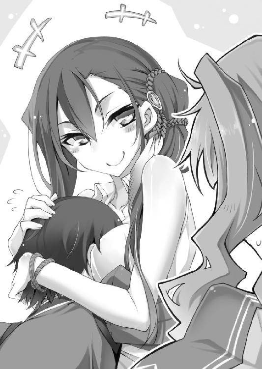
第二話 半熟王子と温泉ドラゴン
僕の姉、ユ・イン＝ユフィは変態である。
中性的な顔立ちが魅力の凜々しい美女であり、国外にまで勇名を轟かせる天才剣士であり、一国のお姫様という由緒正しい血筋であり、気さくな人柄でユ国の民から絶大な人気を得ているアイドル的存在だ。
なのに変態である。
世間の人々は知らないことだが、ユフィは重度のブラコンだ。隙あらば僕に抱きつき、キスを迫ろうとする。僕の入浴中に全裸で乱入するなど日常茶飯事で、
「子供の頃はよく一緒に風呂に入ったではないか。家族が共に入浴するのは当たり前だ」
と当人はまるで悪びれていない。
そんなユフィには、まことしやかに囁かれている噂があった。
――王女ユフィは、異性に興味がないのではないか？
本人曰く、「剣士」という男ばかりの世界に長く居たせいで自分が女性だという意識が薄いらしい。だからなのか、ユフィは「可愛い女の子が大好きだ」とも公言しており、それが噂に拍車をかけていた。
特に、帝国領で一年間の武者修行（という名の禁欲生活）を終えてからは、言い寄る男を毛嫌い、可愛い女の子を公然と口説くようになってしまった。武者修行中に何があったかは知らないが、なまじ権力と腕力を持ち合わせているだけに誰も彼女の暴走を止められない。
......で、なぜこんな話をわざわざ語っているかと言うと。
「ユ、ユフィ様。そ、そこは......」
「ふふふ。ハナの肌は白くて綺麗だな。絹のように滑らかなのに張りと弾力があって、私の手に吸い付いてくるようだ」
「い、いやあ......そんなところ、触らないで......」
僕が露天風呂に入ると、ユフィがハナを襲っていた。
正確には、「湯気の向こうから女性二人の艶っぽい声が漏れ聞こえてきた」と言うべきか。果たして湯気の向こうではどんな痴態が繰り広げられているのか。見たい気もするが見てはいけない気もして、僕は脱衣所から先に進めず立ち往生する。
図らずもハナと混浴した一件以来、僕は露天風呂に入る前に先客がいないか警戒する癖がついてしまった。おかげで今日は服を脱ぐ前にハナの入浴に気づけたけど......まさかユフィまで一緒とは。
女性二人が入浴しているのだから、ここは紳士らしく立ち去るべきか。
それとも風呂場に乗り込んで、ユフィの毒牙からハナを守るべきか。
それとも僕も参加......いや、この考えは、言うのは控えておこう。
理性と欲望の間で揺れ動きながら、僕は悶々としたまま二人の声に聞き耳を立てる。
「ふふふ。ハナの体は柔らかいな。いつまででも触っていたいくらいだ」
「ゆ、許してください、ユフィ様。くすぐったいです......」
「ハナは敏感なのだな。では、ここはどうだ？」
「ひゃうん！ そ、そこは......」
「ほら、もっと肩の力を抜いて。優しくするから、怖がらなくていい」
「そんな、こと、言われても」
「緊張しているのか？ 可愛いな、ハナは」
「だ、だって、こんなことされるの初めてで」
「そうか、初めてなのか......。帝国には公衆浴場などないからな。他人と一緒に風呂に入ることもないか」
「はい......。だから、こんな風に誰かに背中を流してもらうなんて初めてで......」
「ふふふ。気にするな。私は可愛い女の子の背中を流すのが大好きなのだ。ごしごし」
背中流してるだけかよ!! なぜだか裏切られた気分になった僕は、脱衣所で息を潜めている自分が無性に馬鹿らしく思えてきた。
......部屋に戻るか。
僕は足音を忍ばせて出口へ向かう。何気なく足下を見ると、脱衣所の隅にひっそりと置かれた二つの籠が目に入った。
薄く裂いた竹を編んで作った籠は、湯人の時代から連綿と受け継がれてきた由緒正しい伝統工芸品だ。風呂に入るときは、脱いだ衣服をこの竹籠に入れるのがユ国の流儀だった。
二つある脱衣籠のそれぞれに、きちんと折りたたまれた衣服が入っている。
一方の籠には、衣服とともに鞘に収められた長剣が置かれていた。おそらくこちらがユフィの服だ。となると、もう一方の籠に入っているのがハナの......。
「......」
このとき僕が何を考えていたかは、あえて言うまい。なぜなら、そんな些事などすべて吹き飛ばす驚天動地の大事件が直後に起こったからだ。
――最初に感じた異変は、気配だった。
空気が震えているような、熱気がちくちくと肌に刺さるような、言葉では説明し難い異質な気配。僕は鳥肌の立つ腕をさすりながら、わけもわからず周囲を見回す。直後、浴室から全裸のユフィが飛び出してきた。
「アリマ！ 剣を！」
僕はとっさに長剣を拾い上げ、丸腰のユフィへと投げ渡す。受け取ったユフィはその場で剣を抜き放ち、鞘を投げ捨てて湯気の中へと駆け戻った。
何が起こっているのかわからないが、ユフィの形相からとにかくただ事ではないことだけは察しがついた。
あと、ユフィが驚きもせずに僕の名を呼んだことから、僕が脱衣所で聞き耳を立てていたことはばれていたのだと察した。ユフィめ、僕がいるのをわかっててわざとやってたな！
刹那！ ゴウ、と音を立て、猛烈な勢いで湯気が脱衣所に流れ込んできた。
「なんだ、この風は！」
強風に飛ばされないよう踏ん張りながら、僕は浴室へと目を向ける。この時間、露天風呂には太陽の光が差し込んでいるはずなのに、なぜだか今日は空がやけに暗い。
雲が太陽を隠しているのかと思い、視線を上げると......翼を広げた巨大な生き物が太陽の光を遮っていた。
陽光を遮る真紅の翼。巨体を覆う灼熱の鱗。強靱な四肢には鋭い爪が鈍く輝き、うねる尻尾が大気を切り裂く。長い首の頂点には金色の眼。尖った牙の隙間から覗くのは、大地をも溶かす紅蓮の吐息。
ドラゴン。
世界一有名な異形に、僕はただただ圧倒される。視界を埋め尽くす巨躯の迫力と、圧倒的な存在感が僕から思考力を奪い去る。怖いと言うより、何も考えられない。迫り来る最強生物を前にした僕は、呆然と立ち尽くす事しかできなかった。
「アリマ！ ハナを連れて逃げろ！」
ユフィが叫び、僕はようやく我に返る。見れば、長剣を構えて天を睨みつけるユフィのすぐ後ろで、ハナが腰を抜かしたように座り込んでいた。
僕は何度も転びそうになりながらハナに駆け寄り、ドラゴンの脅威から守るように彼女を背に隠す。裸のハナが、恐怖に震える手で僕の背を掴んだ。
「......竜王ラドン」
天を仰ぎながらユフィが言葉を絞り出す。それはヌブル山でユフィを瀕死に追い込んだ、凶暴なドラゴンの名前だった。
まさか、こいつがヌブル山に巣くう竜王......。
絶望感にさいなまれる僕の眼前で、真紅のドラゴンがゆっくりと降下を始める。巨大な翼が起こす強風に吹き飛ばされそうになり、僕は必死に両足を踏ん張る。そんな僕の背中に裸のハナがしがみつく。むにゅ。
竜王の翼長はゆうに十メートルを超えている。真紅の巨体が迫る恐怖は筆舌に尽くしがたく、僕は「逃げる」という発想すら忘れて棒立ちになっていた。
ズシン。地響きを立て、巨大なドラゴンが露天風呂に着地する。勢い余った尻尾が湯船に叩きつけられ、盛大に水しぶきが上がった。
『汝らに問う』
地の底から響くような重低音。それがドラゴンの発した声だと気づき――ドラゴンが人語を発したことに驚き、僕は愕然となる。
恐怖と畏怖の対象であるドラゴンが、いったい何の目的で人里へ降りてきたのか。僕はゴクリと喉を鳴らすと、ドラゴンの次の言葉を待ち構えた。
破壊の化身は、骨の髄にまで響く大音声で告げた。
『温泉はどこじゃ』
露天風呂に尻尾を浸しながら、真紅のドラゴンが僕らに問う。
『この辺りに温泉旅館が出来ると聞いた。わしは温泉に入りたいのじゃ。答えよ！ 温泉はどこじゃ！』
「......ここです」
こうして、破壊の化身レッドドラゴンの竜王ラドン様が、我が温泉旅館の栄えある第一号宿泊客となった。
いらっしゃいませー。
ズシン、ズシン。
重量感のある足音を響かせながら、翼を畳んだレッドドラゴンが僕の後をついて歩く。
ドラゴンを先導する僕の右隣には、護衛のつもりなのか、剣の柄に指をかけながら油断無く身構えるユフィがいた。左隣には、顔面蒼白になりながら震える手で僕の腕にしがみつくハナがいた。
「ハナは無理してついて来なくてもいいんだよ？」
というより、僕がドラゴンを引きつけている間に逃げて欲しかった。だが僕の心配をよそに、ハナは青ざめた顔で気丈にも首を横に振る。
「ア、アリマを置いてはいけません。私もご一緒しまちゅ」
恐怖で舌が回らないようだ。
震えながら涙目で言われても心配が増すばかりだけれど、彼女なりに僕の身を案じているのだと思うと邪険にもできない。
「そ、それで、これからどうするんでしゅか？」
「ひとまずドラゴンを離れに案内する」
王宮の離れには、温泉旅館の建設予定地がある。あそこなら十分な広さがあるから、ドラゴンが多少暴れても周囲に被害は及ばないはずだ。
当初は王宮を温泉旅館に改築する予定だったが、堅物で石頭な老将軍イブスキの猛反対にあい、やむなく離れた場所に温泉旅館を建設していた。まったく、王宮を温泉旅館にすることを認めないなんて、旧態依然とした考えに凝り固まった石頭のイブスキにも困ったものだ。
などと考えていたら、遠くからイブスキの野太い叫び声が聞こえてきた。
「アリマ殿下―――っ!!」
がしゃんがしゃんと金属音を響かせながら、鉄製の全身甲冑で身を固めたイブスキが全力疾走している。戦斧を担いだイブスキは、決死の形相で僕とドラゴンの間に割って入った。
「アリマ殿下！ 私が時間を稼ぎます！ その隙にお逃げください！」
命がけで主君を守る気まんまんのイブスキがドラゴンに無謀な戦いを挑もうとしている。
「イブスキが忠義に厚いのはわかったから、とりあえずややこしくなる前に引っ込んで――」
「不肖イブスキ、命にかえても殿下をお守り致します！」
「いいから僕の話聞けよ」
『......こいつ燃やしてもいいか？』
「ダメダメダメ！」
やる気に火がつきかけたドラゴンを、僕は両手を振って押しとどめる。
「下がれイブスキ！ このドラゴンは人を襲いに来たんじゃない。温泉に入りに来ただけだ」
「温泉ですと！ だから私は温泉旅館に反対だったのです！ いつかこんなことになるのではと危惧しておりました！」
嘘つけ。
どさくさに紛れて温泉旅館を非難するイブスキを僕は冷めた目で見つめ......そして思った。
ドラゴンが温泉に入りに来るなんて誰にも予想できるはずがない。なぜなら、この辺りの火山には温泉なんて腐るほどあるから。温泉に入りたいだけなら、わざわざ人里まで来る必要はないのだ。
......なぜこのドラゴンは、山を下りてまで人間の温泉に入ろうと思ったのか？
ドラゴンの禍々しい威容に圧倒されながら、それでも僕は勇気を振り絞って尋ねた。
「し、質問があります」
『なんじゃ』
「どうして、ここの温泉に入りたいと思ったんですか？ この場所は、人が多くて、その、ドラゴンには賑やかすぎると思うのですが」
『......然り』
ドラゴンが金色の瞳で僕を睨みつける。はるか頭上から見下ろすドラゴンの視線は、それだけで人を息苦しくさせるのに十分な重圧を与えていた。
『わしにはここの温泉に入らなければならない理由があるのじゃ』
大気を震わす重低音で、真紅のドラゴンが本意を告げる。
『......わしは、人間になりたいのじゃ』
「人間に？」
ここが「どんな願いも叶えられる奇跡の温泉」だと知り、人間に生まれ変わるためにわざわざ訪ねて来たということか？
だけど、最強の生物であるドラゴンが、どうして脆弱な人間になりたがるのか。僕は湧き上がる好奇心を抑えきれなかった。
「なぜ人間になりたいのか、理由を教えてもらえませんか？」
『......知りたいのか？』
不躾な質問を受けたドラゴンは、不機嫌そうに「ぐるる」とうなり声を上げた。まずい、怒らせたか？ 相手は凶暴なドラゴンだ。このままでは王宮が火の海にされてしまう！
あわてた僕が前言撤回しようとすると、ハナがここぞとばかりに身を乗り出してきた。
「私も知りたいです！ 教えてください！」
ドラゴンへの恐怖も忘れ、ハナは好奇心に目を輝かせる。ハナは普段は内向的なくせに、興味のある話題になるとぐいぐいと踏み込んでくる二面性があった。「マイペースで空気を読めない」とも言うが。
恐れを知らないハナの態度に、ドラゴンは「ぐるる」と唸り、重低音の声を轟かせる。
『うむ、よかろう！ なぜわしが人間になりたいと思ったのか。耳の穴かっぽじってよく聞くがいい！』
案外ノリノリだ。
不機嫌かと思っていたけど、実はしゃべりたくてうずうずしていただけ？ うーん、ドラゴンの表情はよくわからない。
かくして竜王ラドンは語り始めた。なぜ自分は人間になりたいのか――。
『わしは人間に恋をしたのじゃ』
いきなりの告白に、驚いた僕は顎が外れんばかりに口を開く。いや、だって、ドラゴンが人間に惚れるなんて信じられないだろ？
『ある日、山を散歩していたわしは、偶然にも川で沐浴する人間を見かけたのじゃ。その者は一糸まとわぬ裸体で......水面に映る白い肌と、濡れた長い黒髪がすこぶる美しかった。わしは思わず、その人間に見とれてしまったのじゃ』
意外すぎる告白を聞きながら僕は想像する。
深い緑に囲まれた山の奥深く。一点の濁りもない清流で、腰まで水に浸かった全裸の美女が水しぶきを上げている。キラキラと陽光を反射する水面に、純白の肌と、漆黒の髪と、輝く笑顔が映える光景。
そんな美しい女性を、木陰からこっそりのぞき見しているレッドドラゴン。
『わしが息を殺して眺めていると、視線を感じたのか、その者は突然振り返った。そして、わしと目が合ったのじゃ』
視線を感じて振り返ったら、目の前には覗き見するレッドドラゴン。果たして彼女の恐怖はいかばかりか。
『わしらは無言で見つめ合った。あの者は息をするのも忘れたかのように、身動ぎ一つせずわしを見つめたのじゃ。おそらくわしの美しさに見とれていたのじゃろう。見ての通り、わしは美しいからのう』
ドラゴンのルックスの善し悪しはわからないけど、たぶんそこは関係ないと思う。山でいきなりドラゴンと遭遇したら、誰だって一歩も動けなくなって当然だ。
『その者と見つめ合った瞬間、わしは胸が熱くなるのを感じた。そして悟ったのじゃ。これが恋だと！』
当時のことを思い出したのか。ドラゴンが切なそう（？）に「ぼう」とため息をつく。物憂げな思いとともに灼熱のブレスが吐き出され、イブスキが悲鳴を上げながら飛び退いた。
『それからというもの、寝ても覚めても考えるのはその人間のことばかり。あの者を思いながら火山のマグマに入る度に、わしの胸は高鳴り、体は熱く火照るのじゃ』
その火照りは恋とは関係ないと思う。
『そんな道ならぬ恋に悩むわしを見かねたのか、仲間のドラゴンが古い言い伝えを教えてくれたのじゃ。遥かな昔、「湯人」と呼ばれる人間は、温泉の力で様々な奇跡を起こした。その奇跡の中には、ドラゴンを人間に変える術があったというのじゃ』
どんな願いも叶う奇跡の温泉。その伝説に竜王ラドンは一縷の望みを託した。
『わしは待った。いつの日か、失われた湯人の秘術――温泉の奇跡を復活させる人間が現れることを。そして時は来たのじゃ！』
ドラゴンは一人の人間を一途に思い続けていた。愛しい人間と結ばれたいと願い続けていた。だからこそ、恋するドラゴンは悲願を成就するために山を下りたのだ。
『これが、わしがここへ来た理由じゃ』
語り終えたドラゴンが僕らを見下ろす。思いがけない純愛物語にどう反応したものかと僕が戸惑っていると、隣にいたハナが鼻をすすりながらつぶやいた。
「種族の壁を越えた愛......。これが、純愛なのですね」
研究漬けで恋愛とは無縁の青春を送ってきたハナは、こういう純愛物語に憧れがあったようだ。涙目でうなずく彼女は、明らかに悲恋のドラゴンに感情移入していた。
「ハナ、落ち着いて冷静に考えよう。ドラゴンに片思いされても相手の女性はいい迷惑――」
「私、ラドン様の恋を応援します！ 温泉を調合してラドン様を人間にしてみせます！」
すっかりドラゴンの味方になったハナが、裂帛の気合いを込めて瞳を輝かせる。一途な恋を応援したがる乙女心に、僕はかける言葉が見つからない。
隣を見ると、困惑の表情を浮かべたユフィが「どうする？」と視線で僕に尋ねていた。どうするって言われても、相手はドラゴンだよ？ ここは相手を怒らせないよう丁重にお帰りいただくのが最善......。
「殿下！ 相手は凶暴極まりないドラゴンですぞ！ ドラゴンの言葉を鵜呑みにするなど正気の沙汰ではありません！ ここは断固とした態度で追い返すべきです！」
頑固者のイブスキが反対の立場を声高に訴える。ドラゴン本人（本竜？）の前で「追い返せ」などと啖呵を切れるのは、ある意味剛胆だ。
『人間風情が、わしの邪魔をするか』
案の定、ドラゴンの声に怒りが宿り、恋愛話で緩んだ空気が一気に張り詰めた。殺気に反応したイブスキとユフィが臨戦態勢に入り、僕はあわてて両者の間に割り込む。
「ちょっと待った！ 僕の話を聞いてくれ！」
ここでドラゴンに暴れられたら、王宮どころか王都全体が火の海になりかねない。僕はどうにかしてドラゴンの怒りを鎮めるべく、解決策を考え......。
......考えるまでもない。この場を収める策なんて一つしかなかった。
「わかった。望み通りの温泉を作る。だから温泉が完成するまでは誰にも危害を加えないと約束してくれ」
『よかろう。温泉が完成するまでは大人しく待ってやる』
すんなりと矛を収めるドラゴン。そのあっけなさが、僕には逆に恐ろしい。まるで「温泉が完成しなかったときは......わかっているな？」と脅されているようだ。僕は竜王ラドンの威圧感に身震いしつつ、改めて「ドラゴンを人間に変える温泉」の完成を心に誓う。
こうして竜王と恐れられた破壊の化身は、温泉完成まで王宮に居座ることになった。
「そういえば、むかしからアリマは貧乏くじを引くのが得意だったな」
「そんな特技は欲しくなかったよ」
ユフィと連れだって歩きながら、僕は力なく肩を落とす。
竜王ラドンを温泉旅館（予定地）に送り届けた後、僕たちはドラゴンの願いを叶えるべく手分けして作業に当たることになった。
温泉学者のハナはさっそく温泉研究所に籠もり、温泉の調合に取りかかっている。
国軍を率いるイブスキは、王宮に飛来するドラゴンを目撃してパニックに陥る民衆への説明に回り、王都の治安を守ることに尽力している。
そして僕は、竜王ラドンが一目惚れした相手を探す任務を請け負っていた。ラドンが人間になった暁には、愛しの君に告白できるようセッティングするのが僕の役目だ。
「ドラゴン相手に、そこまでしてやる義理があるのか？」
「温泉が完成したらラドンは無力な人間になるんだ。失うものの大きさを考えれば、このくらいのサービスがあってもバチは当たらないよ」
「アリマは本当にお人好しだな」
「そうかな？」
「そうだとも。だから私はアリマから目が離せないのだ」
苦言を呈しているようで、僕を見るユフィの表情はなぜだか愉快そうだった。我が姉ながら何を考えているのかよくわからない。
「それで、アリマはどうやって相手の女性を捜すつもりだ？」
「その点にぬかりはないよ。ちゃんと竜王ラドンから情報は聞き出してあるんだ。ラドンの記憶では、一目惚れした相手の左胸に三角形のアザがあったらしい。つまりラドンの想い人は、黒髪で、髪が長くて、胸にアザのある女性だ」
「胸に三角形のアザか。それは確かに特徴的だ」
僕のぬかりなさに感心するユフィ。だけど、この手がかりには一つ大きな問題があった。
問題とはつまり「どうやって胸のアザを確認すればいいか」だ。左胸を調べるには、着ている服を脱がさなければいけないわけで......。まさか町中の女性を一列に並べて「では順番に胸を見せてください」などと命令するわけにもいくまい。
怪しまれずに女性を裸にする方法はないものか。悩んだ僕は、一応女性であるユフィの意見も聞いてみることにした。
「ねえユフィ。僕は女の人の裸を見たいんだけど、どうすればいいかな？」
「！」
立ち止まったユフィが、両目を見開いて僕を凝視する。何その反応？ 僕は変なことを言っただろうか。
「そうか。アリマも女体に興味を持つようになったか。わかった。私が一肌脱ごう」
はらり。
「脱がなくていいから」
僕は冷静に、ユフィのはだけた胸元を元に戻す。
「私の裸では不満だと言うのか！」
「なんで怒るの？ そうじゃなくて、ラドンの想い人は左胸にアザがあるから、それを確認するにはどうすればいいか聞いているんだよ」
「ふん。そんなことを言って、本当は女人の服を脱がしたいだけだろう？ 女の裸が見たいと素直に言ったらどうだ。私は助平なアリマも嫌いではない！ むしろアリマに脱がされるなら本望！」
「なんで嬉しそうなんだよ」
「そう照れるな。私はいつでも準備ＯＫだ」
はらり。
「脱がなくていいから」
僕は冷静に、ユフィのはだけた胸元を元に戻す。僕の薄い反応が面白くないのか、ユフィはぶすっと唇を突き出して不満たらたらな表情だ。
「......ようするにアリマは、不特定多数の女を裸にひん剥きたいのだな？」
「表現が悪いけど、まあそういうことだよ」
「仕方がない。弟の頼みだ。ここは私が辻斬りとなって、夜道を歩いている女性を片っ端から押さえつけ、力ずくで裸にひん剥こう」
「ダメだよ」
「だが他に方法はないだろう。嫌がる相手を無理矢理というのは趣味ではないが、アリマの頼みとあれば仕方がない。ああ仕方がない。じゅる」
よだれを拭きながら語るユフィは、重度のブラコンであり、大の女の子好きでもあった。
僕はユフィに辻斬り禁止を厳命すると、怪しまれずに女性を裸にする方法はないものかと頭を悩ませる。
「考えがまとまらないなら露天風呂にでも入ったらどうだ？ 風呂に入ってリラックスすれば、不思議とアイデアがひらめくものだからな」
なるほど、確かに風呂場でアイデアがひらめくのはよくあることだ。風呂場で......。
「そうか」
女性を裸にする方法をひらめいて、僕はポンと手を叩いた。
翌朝。ラドンの様子を見に離れを訪ねると、芝生の上でとぐろを巻いて居眠りしているドラゴンと、その尻尾にひしゃくでお湯をかけているハナを発見した。
「......おはよう、ハナ」
「お、おはようございます」
僕に気づいたハナが慌てた様子で背筋を伸ばす。ただの挨拶にも緊張する様は相変わらずの人見知りっぷりだ。
「なにやってるの？」
「は、はい。温泉をかけてます」
答えながら、ハナはお湯の入っている桶を示す。いまいち状況が掴めずにいると、ハナは言葉足らずだと気づいたのか、わたわたと手を動かしながら説明を補足した。
「ええと、『ドラゴンを人間に変える温泉』を調合してみたので、試しにかけているんです」
「えっ？ もう完成したの？」
「いえ、まだです。今は試行錯誤をしている段階で......」
しゃべりながら、ハナは湯気の立ち上るお湯をひしゃくですくう。桶の端から湯がこぼれ、たまたま地面を歩いていた蟻に温泉がかかった。ばしゃっ。
ヒヒーン！
蟻が巨大化して白馬に変身した。しかも背中には翼が生えていて......これはペガサス？
ヒヒーン！ バッサバッサ。
かつて蟻だったペガサスは、大空高くへと飛んでいった。
「......調合がなかなか上手くいかなくて」
「大変だね」
ハナの調合作業は難航しているようだ。完成までの道のりは遠く険しい。
「アリマの方はどうなっていますか？」
「こっちは順調だよ。今頃は、集まった女性たちの胸をユフィが調べているんじゃないかな」
胸にアザがあるか確かめるには服を脱がさなければいけない。どうやって女性たちを無理なく脱がせるか......。その答えは単純なものだった。
「『黒髪の女性に限り、王宮の露天風呂を無料開放。今なら美味しい食事が食べ放題』と国中にお触れを出したんだ。おかげで朝から黒髪の女性が王宮に押し寄せているよ」
服を着て風呂に入る人間はいない。該当する女性を露天風呂に招待すれば、おのずと裸になってくれるという寸法だ。
「温泉の無料体験は旅館の宣伝にもなるからね。一石二鳥のいいアイデアだと思わないか？」
「そうですね。いいアイデアだと思いますけど......」
表情を曇らせるハナ。どうやら彼女は、僕が発案した作戦に不安を抱いているらしい。何がそんなに不安なの？
「裸の女性たちを前にして、興奮したユフィ様が暴走しなければいいのですが」
ユフィと入浴して体中を撫で回された経験のあるハナが、女性たちの貞操を心配する。
なるほど。ユフィに若い女たちの裸体を調べさせるのは、羊の群れに飢えた狼を放り込むようなものだ。酒池肉林でうはうは言いながら暴走するユフィが容易に想像出来る。
......手遅れになる前にユフィを止めなくては！
「アドバイスありがとう」
ハナに礼を述べた僕は、ユフィの暴走を止めるべく駆け出した。だが、僕はすぐに足を止めることになる。元気の塊のような歓声が、どこからか聞こえてきたからだ。
「うわー！ すげー！ 本物のドラゴンだ！」
振り返ると、どこから入り込んだのか、汚れた服を着た男の子が居眠りしている竜王ラドンの体をべたべたと触りまくっていた。突然の出来事に僕は奇声を上げる。ヒィー。
「何やってるんだ！ 早く離れろ！ ドラゴンに殺されるぞ！」
あわてて止めに入ると、生意気そうな面構えの小僧が「はっ」と鼻で笑った。
「ドラゴンが怖いなんてお兄ちゃんはガキだな。オレは大人だから全然怖くないぜ」
ぺたぺた。
これ見よがしに真っ赤な鱗を触りまくる悪ガキ。馬鹿、やめろ！ ラドンが起きたらどうするんだ。安眠を邪魔されたドラゴンがどんな行動を取るか、想像しただけで恐ろしい！
僕は悪ガキを羽交い締めにすると、ドラゴンから引きはがすべく小さな体を持ち上げた。
「なにすんだ！ 離せよ！」
僕に持ち上げられた悪ガキがじたばたもがく。足をばたばたさせたはずみで、悪童はドラゴンの体を思い切り蹴り飛ばした。
『......なんじゃ、騒がしい』
目を覚ましたラドンが、ゆっくりと鎌首をもたげる。どうやら竜王ラドンは低血圧のようだ。寝覚めの声は明らかに不機嫌だった。
「何でもない、気にせず眠っていてくれ」
「うわー！ すげー！ ドラゴンがしゃべった！ かっこいー！」
僕のフォローも空しく、興奮した悪童が歓声を上げる。馬鹿！ いきなり大声で騒いだりしてラドンが怒ったらどうするんだ！
『わしがかっこいいじゃと？ ふっ、そうじゃろうそうじゃろう』
まんざらでも無さそうだった。
『人間の子供よ。なかなか見る目があるようじゃの。貴様、名はなんと言う？』
「バッカじゃねーの！ 名前を聞くときはまず自分から名乗るもんだろ！」
「ちょ、おま......」
『ふぉふぉふぉ！ 然り！ わしは竜王ラドンと呼ばれておる』
「オレはトウマ！ よろしくな、ラドン！」
いきなり呼び捨て!? 恐れを知らない子供の無邪気さに、僕は冷や汗が止まらない。
『して、トウマはここで何をしておるのじゃ？』
「母さんが露天風呂に入るって言うからついて来たんだ。それで退屈しのぎに王宮を探検してた」
そういうことか。どうりで王宮では見かけない顔だと思った。
トウマを羽交い締めにしたまま「衛兵に突き出してやろうか」などと考えていると、成り行きを見守っていたハナがおずおずと近づいてきた。
「あ、あの、あそこ......」
ハナが指差した先では、質素な平民服を着た黒髪の女性が芝生の上を歩いていた。心配そうに辺りを見回している彼女は、まるで迷子を捜しているかのようで......。
「ひょっとして、あそこにいるのはお前の母さんじゃないのか？」
「え？」
羽交い締めにされたままトウマは女性を見て、ぱぁっと表情を輝かせた。そして僕たちに注目されていると気づき、トウマは「別に嬉しくないよ」とでも言いたげに鼻を鳴らす。
「ふん。オレは迷子じゃないんだから、いちいち探しに来るなよな。恥ずかしい」
強がるトウマにハナは顔を近づけ、優しく諭す。
「お母さんはトウマさんのことが好きだから心配なんですよ。早く戻って安心させてあげてください」
「......しょうがねーから帰ってやるか」
口の悪いガキを地面に降ろすと、言葉とは裏腹にトウマは踊るような足取りで駆けだした。
「じゃーな、ラドン！ また遊びに来るからな！」
『ふぉふぉふぉ、いつでも来るがいいのじゃ』
ラドンの返事を受け、悪ガキは無邪気に笑い、手を振りながら走り去った。
『どんな生き物でも、子供は可愛いものじゃ』
悪ガキの背中を見送りながら、ラドンが上機嫌につぶやく。その楽しげな口ぶりに、これが人々に恐れられた凶暴なドラゴンなのかと僕は驚かずにはいられなかった。
「人妻はいいものだな」
黒髪の女性を王宮に招待し始めてから一週間が過ぎたある日。僕の部屋へ遊びに来たユフィは、顔をほくほく、肌をつやつやさせながら至福の笑みでそんなことをのたまった。
「ユフィはまた民たちと一緒に風呂に入ったのか？」
「勘違いするな。これもラドンの想い人を見つけるためだ。私は仕方なくやっているのだ」
満面の笑みで言われてもまるで説得力がない。
女性たちの貞操を守るため、幾度となく「一緒に風呂に入るな」と警告しているのに、ユフィは悪びれもせず連日の入浴タイムを満喫していた。
自室で書類の山と格闘していた僕は、ため息をつきながら顔を上げる。
「それで、人妻がどうしたって？」
「うむ。私は若くて可愛い子が好みだが、大人の熟れた体もなかなか良いものだと認識を改め......。いや、そういう話をしに来たのではない」
違うのかよ。
入室して第一声が「人妻はいいものだ」だったユフィは、何ごともなかったように真顔で報告する。
「ここ数日、温泉に入りに来る女性の数が激減している。そろそろ頭打ちのようだ」
「これだけ人を集めても、ラドンの想い人は見つからなかったか」
国中にお触れを出したとはいえ、すべての女性が王宮を訪ねられるわけではない。離れた場所に暮らしているのか、事情があって王宮には近づけないのか......。ともかくラドンの想い人は、露天風呂の無料体験には乗って来なかったようだ。
「どうする？ もっと捜索範囲を広げて国中の美女を露天風呂に集めるか？ 国中の美女を露天風呂に......ふふふふふ」
「いや、このやり方はもう止めよう」
「なんだとっ!!」
この世の終わりのような顔で叫ぶユフィに、僕は書類の束を突きつける。それは、女性たちを送迎する馬車の代金と、女性たちにご馳走する食事代を記した請求書の束だった。
何度でも言うが、ユ国はとても貧乏である。
「これ以上タダ飯を振る舞うのは、財政的に無理」
請求書の束を見せられて「ぐぅ」と唸るユフィ。さしもの変態女剣士も、厳しい現実の前では欲望を抑え込まざるを得ない。
「だが、それではこれからどうやってラドンの想い人を探すつもりだ」
「そうなんだよね......」
「殿下！ 大変です！ アリマ殿下！」
僕たちが深刻な顔で悩んでいると、白い髭の老将軍が扉を蹴破る勢いで乗り込んで来た。
「イブスキはいつも騒がしいね。たまには落ち着いて――」
「落ち着いている場合ではありません！ 非常事態です！」
興奮で顔を真っ赤にしながら、イブスキは尋常ならざる事態を告げる。
「ドラゴンが――竜王ラドンが、町を襲っています！」
僕とユフィが王宮の外に駆けつけると、逃げ惑う群衆で町はパニックに陥っていた。
見上げれば、巨大なレッドドラゴンが翼を広げて上空を旋回している。間違いない、あれは竜王ラドンだ。でも、なぜこんなことを？
僕が疑問に思っていると、ラドンはいきなり急降下して建物すれすれの低空飛行を始めた。ラドンが羽ばたくたびに烈風が吹き荒れる。遠くの屋台が風で吹き飛ぶのが見えた。
「やめろ、ラドン！ 早く地上に降りるんだ！」
叫んでみたが、明らかに僕の声は届いていない。低空飛行のドラゴンは僕の頭上を通り過ぎ、一瞬の日陰と猛烈な突風を僕たちに与えた。
「くそっ、とにかくラドンを止めないと！」
言ってはみるが、空を飛ぶ術のない僕たちでは、飛翔するドラゴンに近づくことすら叶わない。いったいどうすれば......。
「アリマ！」
そこへ息を切らせたハナが駆けつけて来た。ハナは温泉の入った試験管を手に、
「蟻を探してください！」
「蟻？」
ハナに命じられるまま、僕とユフィとイブスキは道路で四つん這いになる。蟻......蟻......蟻はどこだ......いた！
「ハナ！ ここに蟻が！」
「離れてください！」
ハナが試験管の中身をぶちまける。調合済みの温泉を浴びた蟻は、見る見る巨大化して白馬に変身した。翼を持った天馬――ペガサスだ。
「よくやった！」
僕はハナの頭をくしゃっと撫でると、素早くペガサスの背に飛び乗った。これでドラゴンを追いかけ......って、こいつ裸馬じゃないか！ 鞍も手綱もないんじゃ馬を操れないよ！
「任せろ」
僕の後ろにユフィが飛び乗った。僕の背中に豊かな胸を押しつけながら、ユフィはペガサスの首を両手で挟み込む。
「いい子だ......。行け！」
ユフィが踵で馬の腹を蹴ると、彼女の意思に応えるかのように天馬はいななき、大空を駆け上がった。
「すごい。ユフィは乗馬の才能もあったんだな」
「しゃべるな。舌を噛むぞ」
ユフィは初乗りのペガサスを自在に操り、滑空するドラゴンより高く昇る。空を飛ぶドラゴンを上から眺めるという経験に、僕は背筋が震えるような感動を覚えた。
「アリマ。あれを見ろ」
ユフィに促されてドラゴンの背を見ると......あれは、子供？ ドラゴンの背に子供が乗っている？ ラドンは子供を乗せて飛んでいるのか!?
「ラドン、止まれ！ その子を下に降ろすんだ！」
子供を危険な目にあわせるわけにはいかない。そう思い、僕は飛翔するドラゴンを追いかけながら命令する。
僕の声が聞こえたのか、ラドンとその背に乗っていた子供が揃ってこちらを振り返った。......おや？ あの子の顔には見覚えがあるぞ。たしか、トウマとかいう悪ガキだ。
『人間風情がわしに命令するとはいい度胸じゃ。殺されたいか』
撃墜してやろうかと言わんばかりに、ラドンが牙を剥き出しにする。僕はラドンの説得を試みようとするが、それより早くトウマが叫んだ。
「行け、ラドン！ あんな馬なんて振り切っちゃえ！」
『承知！』
トウマの号令でドラゴンが羽ばたき、急加速する。一気に距離を離された僕たちは、
「ユフィ、追いかけて！」
「わかっている！ しっかりつかまっていろ！」
ユフィが僕に覆い被さる格好で姿勢を低くする。ユフィの巧みな操縦でペガサスが加速する。いいぞ、少しずつ距離が縮まってきた。スピードだけならドラゴンにも負けていない！
迫る気配を感じたのか、トウマが僕たちを振り返り、焦った声で叫ぶ。
「ラドン！ このままじゃ追いつかれるよ！」
『任せておけ』
ラドンは翼をはためかせ、急激に方向転換。子供を乗せたまま、垂直上昇を開始した。僕たちもすぐに後を追うが、高度が上がるにつれてペガサスの速度は目に見えて落ちていく。
「限界だ、これ以上高くは飛べない」
ユフィが叫び、ペガサスはついに失速する。強靱な肉体を持つドラゴンは高高度を苦にもせず、僕たちの見ている前でさらに上昇を続けた。
『ふぉふぉふぉ。わしを捕まえようなど百年早いわ』
ラドンは己の強さを誇示するかのように、さらなる上昇を続ける。そのとき僕は、ドラゴンの背にしがみつくトウマの必死な姿を目撃した。ドラゴンだからこそ可能な速度と高さに、少年は振り落とされないようしがみつくのが精一杯のようだ。
「待て、ラドン！ それ以上行くな！」
『わしに命令するでないわ！』
怒鳴りながらラドンが急旋回。僕たちを威圧するように巨大な翼を広げる。その瞬間、急制動に耐えられなかったトウマの体が、ドラゴンの背中から滑り落ちた。
トウマが大空を真っ逆さまに落ちていく。
「トウマ！」
僕が叫び、すぐさまユフィがペガサスを発進させる。気づいたラドンが『しまった』と叫びながら降下を始める。トウマは恐怖で声も出ないのか、悲鳴もあげずに猛スピードで落ちていく。僕たちの目に、猛烈な速度で地上の景色が近づいてくる。
このままでは地面に激突する！ そう思ったのだろう、ユフィがペガサスのたてがみを掴んで速度を落とそうとした。
「まだだ！」
僕が叫び、ハッとしたユフィが減速を躊躇する。
その間に落下するトウマに追いつくが、すでに地表は目前に迫っていた。僕はトウマの体を掴もうと空中で手を伸ばす。懸命に伸ばした僕の手が、トウマの腕を掴む！
「ユフィ！」
僕が叫ぶが早いか、ユフィの操縦でペガサスは減速。それでも落下の速度は殺しきれず、地表が――町の広場が眼前に迫る。ダメだ、このままじゃ石畳に激突する！
「させない！」
ユフィがペガサスのたてがみを力任せに引っ張る。ペガサスが空中でバランスを崩したため、落下位置が石畳から逸れ、僕たちは緑の茂る街路樹へ真っ逆さまに突っ込んだ。
墜落しながら、僕はトウマを守るように抱きしめる。僕とユフィとペガサスは無数の枝をへし折りながら落下。枝葉のクッションを突き抜け、むき出しの土に激突した。
「ぐはっ！」
トウマを抱きしめたまま、僕はバウンドするように地面を転がる。ごろごろと土の上を転がり、ようやく止まって、僕は「ぷはぁ」と息を吐き出した。
「し、死ぬかと思った......」
物騒な感想を漏らしながら辺りを見回すと、倒れたまま動かないペガサスと、早くも起き上がっているユフィの姿が目に入った。立ち上がろうとした僕は、いきなりトウマにしがみつかれて尻餅をつく。よほど怖かったのか、抱きついてきたトウマは泣いてこそいないものの、がくがくと体を震わせていた。
『全員無事なようじゃな。何ごともなくて何よりじゃ』
ばっさばっさと羽音を立てながら、ラドンが遅れて降下してきた。
無事？ 何ごともなかった？ 震えているトウマを見てもそう言えるのか！ 恐怖で逃げ惑う人々を見てもそう言えるのか！ ここに至って、さすがの僕も堪忍袋の緒が切れた。僕はトウマを抱えたまま立ち上がり、上空のラドンを睨みつける。
「竜王ラドン！ これは何の真似だ！ 事と次第によってはただじゃおかないぞ！」
『何の真似かじゃと？ 人間風情が偉そうに何を――』
「やかましい！ いいからとっとと地上に降りろ!!」
『わ、わかったのじゃ』
僕に気迫負けしたドラゴンが、『調子が狂うのじゃ』などとぼやきながら降下する。
石畳の上にドラゴンが着地して、僕とユフィとトウマは巨体のラドンと対峙した。
「どういうつもりだ。なぜこんなことをした」
『何を怒っておるのじゃ。退屈しのぎに空を散歩していただけであろう。そう目くじらを立てずとも――』
「ふざけるな！」
一喝すると、僕はラドンに詰め寄る。
「僕たちはお前の願いを叶えようと一生懸命努力しているんだ。それなのに、お前は僕たちを裏切った。『誰にも危害は加えない』と約束したよな！ なのにこれは何だ！ 町や人を危険にさらして、そんなに人間が嫌いなのか！ そんなに人間に憎まれたいのか！」
『......』
巨体のラドンは僕を見下ろすだけで何も答えない。頭にきた僕は、一発殴ってやろうと大股でドラゴンに歩み寄る。
だが、肩を怒らせて歩く僕にトウマがしがみついた。
「やめろ！ ラドンは悪くない！ ラドンはオレの頼みを聞いてくれただけだ！」
ラドンが悪者扱いされるのが耐えられなかったのか、悪童が必死にラドンをかばう。その目は真剣で、嘘をついているようには見えないけど......「頼みを聞いてくれた」ってどういうことだ？
「オレは昔からドラゴンが好きで、ドラゴンに乗って空を飛ぶのが夢だったんだ。それを話したら、ラドンがオレを乗せて飛んでくれるって......」
後で知った話では、ドラゴンに憧れるトウマは毎日のように王宮に忍び込み、ラドンと親交を深めていたそうだ。ラドンにしてみれば、人間の友人の頼みを軽い気持ちで聞いただけだったのかもしれない。
だが、そうだとしても、物には限度というものがある。
「理由はわかった。だけど、僕はこの国の王子だ。僕には国民を守る義務がある」
周囲を見渡せば、ラドンの起こした強風により樹木は倒れ、看板が吹き飛び、露店の商品が通りに散乱していた。恐怖で逃げ惑っていた人々も、ぽつぽつと集まって不安そうに成り行きを見守っている。彼らの目は、突如現れたドラゴンへの恐怖に染まっていた。
「民に危害を加えるようなやつを王宮には置いておけない。この国から出て行ってくれ」
怒りが納まらない僕は、ドラゴンに「山に帰れ」と啖呵を切る。大人しく話を聞いていたラドンは、長い首をしならせて、町の情景と怯える人々の顔を眺めた。
『アリマの言いたいことはわかった。......じゃが』
ラドンは僕に向かって口を開き、鋭い牙をむき出しにする。口腔の奥で、真っ赤な炎がちらちらと揺らめいている。
『なぜわしが、人間ごときに命令されねばならぬのじゃ』
「ぐるる」と喉を鳴らしながら、ラドンの鋭い牙が僕へと近づいてくる。僕が内心怯みながらも踏ん張っていると、ユフィが僕の前に立ち、剣を抜いてドラゴンと対峙した。
ドラゴンが炎を吹けば、僕たち二人など一瞬で黒こげになるだろう。それがわかっていて尚、ユフィは僕を守ろうとしてくれた。果たして一度殺されかけた相手に立ち向かうのは、どれほどの勇気が必要なのか。
辺りに漂う一触即発の気配。横を見ると、トウマが涙目になりながら右往左往している。
「危ないからトウマは離れていろ」
「で、でも、オレのせいで、こんな......」
責任を感じているのか。悪ガキのトウマはラドンに訴える。
「頼むよ。やめてくれよ。ラドンは人間になりたいんだろ。好きな人と幸せに暮らすのが夢なんだろ。だったら人間と争っちゃダメだ。オレのせいで夢を台無しにするなよ」
ドラゴンに乗って空を飛ぶ夢を叶えてもらった少年が、ラドンに泣いて懇願する。
ドラゴンの表情はよくわからないが、「ぐるる」と喉を鳴らすラドンは、怒りと夢の狭間で迷っているように思えた。
「待ってください！」
やっと僕たちに追いついたのか、ハナが群衆の中から人を掻き分けて飛び出してきた。
ハナは一触即発の空気を見て取ると、大慌てで僕の腕を掴み、引き留める。
「あと三日、いえ、二日だけ待ってください。それで必ず温泉を完成させます。だから、ドラゴンと争うなんてやめてください！」
「......二日で完成させられるの？」
「必ず完成させます！」
懸命に訴えるハナを見て、僕は頭の熱が急速に冷めていくのを実感する。
ドラゴンに無謀な喧嘩を挑もうとする僕を、ハナは必死に止めようとしている。それがわかってしまったから、僕はハナを突き放せない。
ハナに腕を掴まれながら、僕はラドンを見上げる。
「あと二日だ。二日で温泉が完成しなかったら、諦めてヌブル山へ帰ってくれ」
『......よかろう。わしに異存はない』
あと二日間だけ、僕の旅館でラドンを世話する。それでも温泉が完成しなかったときは、ラドンは大人しくヌブル山へ帰る。
そう約束して、僕とラドンの喧嘩は手打ちとなった。
結果としてドラゴンとの喧嘩は高くついた。
竜王ラドンを王宮に泊めていることが国民に知れ渡り、ドラゴンのせいで町に生じた被害は、すべて僕が（と言うか王室が）補償することになったのだ。貧乏王家には痛い出費だ。
不幸中の幸いは、怪我人が出なかったことと、人々の間でドラゴン排斥の動きにならなかったこと。「ドラゴンを追い出せ！」と民衆が王宮に詰めかけてもおかしくないのに、平和慣れした民は良くも悪くも暢気だった。
だからこそ、暢気な国民を誰かが守らなければいけないのだけれど。
かくして事後処理で丸一日を潰した僕は、くたくたになりながら露天風呂へと向かっていた。こういう日は温泉に入って一日の疲れを取るに限る。
幸い浴場には誰もいなかったため、僕は一人でのびのびと露天風呂を満喫する。あ～、極楽極楽。温泉に入ると、つい「極楽極楽♪」と言ってしまうのはどうしてなのかな。この不思議は研究に値するテーマだ。などと愚にも付かないことを考えながら極楽気分に浸っていると、脱衣所の方から「ひたひた」と足音が聞こえてきた。
僕が入浴しているのに構わず入ってくるのは誰だろう？ 弟と一緒に入浴したがる変態姉か？ それともメガネがないと何も見えないドジな温泉学者か？
緊張しながら待っていると、現れたのは......真っ黒に日焼けした筋肉質の中年男だった。
「おー、アリマでねえか。一緒に風呂に入るなんて久しぶりだべさ」
「陛下......。また今日も野良仕事をしていたんですか？」
「んだんだ。アリマもたまには手伝ってみるか？ 汗水垂らして作物を育てるのは気持ちいいもんだべさ」
僕の苦労も知らず、国王陛下は日がな一日野良仕事に精を出していたようだ。ドラゴンが町を襲ったというのに、危機感の欠片も見られないのは王様としてどうなのか。
「ところでアリマ。二人きりのときは『陛下』でなく『お父ちゃん』と呼んでけれ。他人行儀は寂しいべさ」
「いいえ。国の財務に関わっている以上、今の僕は陛下に仕える身分です。たとえ息子でも特別扱いは無用です」
「堅苦しいねぇ」
陛下はお湯を体にかけると、石けんとタオルを使ってごしごしと体を洗い始めた。いつも野良仕事で全身泥まみれ汗まみれになっている陛下は、まず体の汚れを落としてから浴槽に入るのが習慣になっている。
「話は聞いたべさ。ドラゴン相手に喧嘩を売るとは大したもんだ」
泡だらけになりながら、陛下が僕に賛辞を送る。いや、賛辞じゃなくて呆れているだけかもしれないが。
「でも意外だべさ。オラはアリマのことを臆病......じゃなくて、慎重な性格だと思ってたんだけんど。まさかドラゴンに喧嘩をふっかけるとはなぁ」
「あのときは無我夢中だったんです」
ラドンに食ってかかったときのことを思い出してみるが、正直、自分でもどうしてあんなに腹が立ったのかわからない。あれほどドラゴンを怖がっていた僕が、真っ向からドラゴンを怒鳴りつけるなんて、いまだに夢かと疑いたくなるほどだ。
「ドラゴンのせいで子供が死にかけたから、アリマが怒ったと聞いたけんど。アリマがそげな子供好きだとは知らなかったべさ」
「子供だからと言うより、人を傷つけるのが許せなかったんです。ドラゴンのせいで町の人たちが逃げ惑うのを見て、頭に血が上ってしまって......」
「『僕がみんなを守らないと』と思ったんだべか？ だったら父ちゃんは嬉しいなぁ」
陛下は「ざばっ」と頭からお湯をかけて石けんを洗い流す。豪快と言うか、大雑把と言うか。そんなところがいかにも陛下らしい。
泥だらけの体を清め終わった陛下が、「どっこいしょ」と言いながら湯船に足を入れる。
「あ～、極楽極楽♪」
頭にタオルを載せながら気持ち良さそうに陛下が笑う。まるでこの世の快楽を独り占めしているような、幸福に満ち満ちた表情だ。
何がそんなに幸せなのかと思っていると、陛下は真っ白な歯を光らせてにんまりと笑った。
「この国はお前のもんだ。お前のやりたいようにやればいいべさ」
僕と肩を並べながら、温泉に浸かる陛下は心底幸せそうだった。
風呂から上がると、かねてより菓子職人に作らせていた「温泉饅頭」の試作品が僕の部屋に届けられていた。
温泉饅頭とは、温泉をこよなく愛する古代民族「湯人」が好んで食べたとされる伝説のデザートだ。ハナからその存在を聞かされていた僕は、温泉旅館の名物になるのではと考え、職人に命じて再現を試みていたのである。
「せっかくだから、ハナと一緒に食べるか」
僕は温泉饅頭を手土産に、温泉研究所という名の山小屋へ陣中見舞いに行くことにした。
ラドンが騒動を起こしてからずっと、ハナは山小屋に籠もって調合を続けている。時間がないのはわかるけど、あまり根を詰めすぎるのも体に毒だ。僕は温泉饅頭がいい気分転換になるよう願いながら、夜の山道を進み、源泉のある山小屋へとたどり着いた。
生真面目なハナのことだ。きっと食事も摂らずに研究に没頭しているのだろう。僕は山小屋の入り口に立つと温泉饅頭片手に扉を開けた。
「こんばんは、ハナ。調子はどう？」
「アリマ、こんばんにゃん♪」
研究機材の前で試験管を振っていたハナが、僕に気づいて笑顔で挨拶を返す。
......にゃん？
よく見ると、微笑むハナの頭に三角形のケモノ耳が生えていた。ズボンからはみ出ている細長い物体は、もしかすると尻尾だろうか。
「ええと、ハナ？ 頭に生えているそれと、お尻から生えているそれは何？」
「こ、これは猫耳と尻尾ですにゃん」
ハナがもじもじしながら答える。いったい彼女はどうしてしまったのか。もしや、温泉の調合が上手くいかなくてヤケになったのか。それで錯乱してこんな真似を......。なんてことだ。僕たちはこんなになるまでハナを追い詰めていたのか......。
「ドラゴンを人間に変える温泉を作るつもりが、間違って『猫人間になる温泉』を作ってしまったにゃん。手が滑って温泉をこぼしたら、こうなったにゃん」
単にハナがドジなだけだった。少しホッとした。
「猫人間？ それは、猫とは違うの？」
「はいにゃん。猫人間は、猫の能力を備えた人間のことですにゃん。古文書にもそう書かれていますにゃん」
どうやら古代民族「湯人」は、「人を猫人間に変える温泉」の資料を後世に残していたらしい。ただの「猫」ではなく、女の子に猫耳と尻尾が生えて語尾が「にゃん」になる「猫人間」という辺りに湯人のこだわりを感じる。何のこだわりかはよくわからないけれど。
「でも、その猫耳と尻尾は研究の邪魔だよね。猫人間から元には戻れないの？」
「古文書を調べれば、元に戻る温泉の成分はわかりますにゃん。でも今は時間がにゃいので」
我が身より研究を優先するなんて研究者の鑑のような発言だけど......。本当にいいのかな？ 猫人間のままで不便はないのかな？
「ところで、アリマは何をしに来たにゃん？」
「そうだ。忘れるところだった」
猫耳の件はひとまず保留にして、僕は饅頭の入った箱を開けてみせる。
「温泉饅頭の試作品が出来たんだ。ハナと一緒に食べようと思って」
僕は箱から饅頭を一つ取り出すと、ハナに渡そうとして......ポロリと落としてしまった。丸い饅頭がコロコロと床を転がり......。
「にゃん♪」
瞳を輝かせたハナが、転がる饅頭に飛びついた。
目の前で四つん這いになったハナが、瞳キラキラお尻フリフリ、楽しそうに饅頭を転がして遊び始める。満面の笑みは猫顔負けの興奮ぶりだ。
「にゃん♪ にゃんにゃん、にゃん......にゃん......にゃ......」
四つん這いのまま、徐々に顔が青ざめていくハナ。両手で転がして遊んでいた饅頭が、ぱたりと倒れて静止する。
「......元の体に戻る温泉を先に作った方がいいんじゃないかな？」
「そうするにゃん......」
猫の本能に抗えなかったハナが、神妙な面持ちで立ち上がる。心なしか猫耳もしょんぼりと傾いて寂しそうだ。
「本棚のどこかに猫人間の温泉について書かれた古文書があるはずにゃん。それがあれば、元に戻す温泉を作れるにゃん」
「僕も手伝うよ」
困り顔でにゃんにゃん言うハナと肩を並べ、僕は本棚を漁り始める。
......ふと横を見ると、目の前に、ふわふわの産毛に覆われた猫耳があった。
猫耳は、ハナがそれらしい本を見つけるとぴょこんと跳ね上がり、本を読み始めるとわくわくするように左右に揺れ、探していた記述が見つからずにしょんぼりと倒れ......。
「......かわいいな」
「にゃん？」
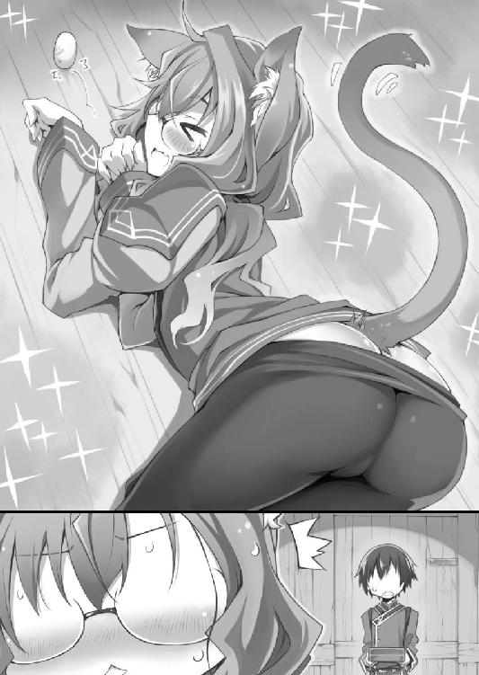
僕のつぶやきに反応したハナが、頬を朱に染めて振り返る。
そんなハナの表情の変化に気づかない僕は、ぴょこぴょこ動く猫耳から目が離せない。猫耳がこんなに可愛いものだとは知らなかった。猫耳の魔力に抗えない僕は、まじまじと猫耳を見つめ、熱い視線で見つめられたハナがあたふたと視線をさまよわせる。
「......触ってもいい？」
「にゃ!? さ、さわ、さわ!?」
「ごめん。でも、これ以上、我慢できなくて」
「あの、我慢って、そんな、私......」
顔を真っ赤にして慌てふためくハナ。僕は返事を待つのももどかしく手を伸ばす。ハナがぎゅっと目を閉じ、僕の指は産毛に包まれた柔らかな猫耳をさわさわと撫でた。
「にゃぁ......」
ハナの口から、くすぐったいのを我慢するような、甘く切ない声が漏れた。それを聞いた途端、僕の背筋がぞくぞくと震えた。
もっと触りたい！ もっとたくさん撫で回したい！
ハナが無抵抗なのを良いことに、思う存分彼女の猫耳を撫で回す。
指先で耳を挟んでこすり撫でる。指の腹で耳の裏側を掻くように撫でる。両手でハナの髪を撫でつけながら、猫耳のふわふわ感と柔らかさを満喫する。
猫耳を触られるのはどういう感覚なのか。耳ばかり執拗にいじられ、撫で回されたハナは、真っ赤な顔でうつむき、きつく目を閉じて、時折猫のように甘えた声を漏らしていた。
「だ、だめにゃん......。これ以上は、もう、限界にゃん！」
切ない声で喘ぐと、ハナは両手で思い切り僕を突き飛ばした。
「ふごっ！」とうめき声が漏れ、猪に体当たりされたかのような強烈な一撃を受けた僕は、軽々と宙を舞い、部屋の反対側の壁に叩きつけられた。そのままもんどり打って倒れた僕に、追い打ちをかけるように本棚がメキメキと音を立てて倒れ込む。
「危ないにゃん！」
危険を察知したハナが、猫のような俊敏さで急接近。小さな体で、自分よりも背の高い本棚を受け止める。本の重量を上乗せした本棚は、人を圧殺できるほどの重さになっているはずだ。それなのにハナは、華奢な細腕で本の詰まった本棚を軽々と持ち上げ、
「えいにゃっ」
気合いの言葉とともに放り投げた。本棚はうなりを上げて吹っ飛び、窓を叩き割って山小屋の外へと転がり落ちる。思いも寄らないハナの怪力ショーに、僕は唖然となった。
「アリマ、大丈夫ですかにゃん」
僕のそばに座り込んだハナが、猫耳をぺたんと倒して恐縮する。
「ごめんなさいにゃん。今の私は猫の能力を備えているにゃん。人間離れした瞬発力のせいで普段の何倍もの力が出てしまって......」
どうやら僕がハナに殺されかけた原因は、強化された身体能力を彼女が制御しきれなかったためらしい。
「き、気にしなくていいよ。無神経に触りまくった僕が悪かったんだ」
「そんなことないにゃん！ アリマに触られるのは、その、嫌なわけじゃなくて......。だから、アリマが触りたいなら、その......。もっと私のことを触っていいにゃん!!」
「遠慮します」
人間離れした瞬発力とか、制御できない腕力とか、触りだしたらやめられないふわふわもふもふした猫耳とか、猫人間はいろんな意味で危険すぎる。
死人が出る前に、猫人間温泉は封印しよう。そう心に誓う僕だった。
「甘いね～」
「そうですね～」
小一時間後。僕は無事に元の姿に戻ることが出来たハナと軒下に並んで座り、夜風に当たりながら温泉饅頭を頬張っていた。
白銀の月を眺めながら饅頭を堪能するのも乙なものだ。口の中に広がる甘さのせいだろうか。先ほどまでの大騒動にもかかわらず、僕たちはリラックスして会話することが出来た。
「そういえば、ハナに聞きたいことがあるんだけど、いいかな？」
「はい、何でしょうか」
これも温泉饅頭効果だろうか。それとも、様々な体験を経て二人の距離が近づいたからだろうか。ハナは気負うことなく僕の質問に応じてくれた。
「僕がラドンに『ここから出て行け』と言ったとき、ハナは『二日待って欲しい』と食い下がっただろ。あのとき、ハナはどうしてラドンの味方をしたの？」
初めてラドンが現れたとき、露天風呂でハナが腰を抜かして震えていたことを僕は今でも覚えている。あれほどドラゴンを怖がっていたハナが、どうしてラドンの肩を持つのか。
僕のささやかな疑問に、ハナははにかみながら答えた。
「だってラドンは恋をしているんですよ？ 恋が上手くいくように応援してあげたいじゃないですか」
ハナが天然なのか。それともこれが乙女心の摩訶不思議なのか。どうやら彼女は、恋するドラゴンに共感しているらしい。
「恋に頑張っている人を見ると応援したくなりませんか？」
同意を求められても困る。あと人じゃなくて竜だから。
僕が答えられずにいると、同意を得られなかったハナは寂しそうにうつむいた。
「やっぱり私って変ですか？ 私は他の人と感覚がずれているんでしょうか......」
自分が他の人と違うことを気に病むハナ。そういえば、聖遺物研究所にいた頃のハナは周囲から浮いた存在だったんだよな。誰にも理解してもらえず、そのせいで自分を無能だと思い込み、劣等感にさいなまれてきたんだ。
「......ずれていてもいいんじゃないか？」
「え？」
うつむいていたハナが顔を上げる。目を合わせるのが照れくさかった僕は、ごまかすように、持っていた温泉饅頭を口に詰め込んだ。
「人と違っている部分を『個性』って言うんだ。個性のある人は魅力的だよ」
「魅力的......」
ハナがまじまじと僕を見つめる。視線を感じた僕は、わざとらしいくらい大きな声で「そういえば」と話題を逸らした。
「僕とラドンが喧嘩しているとき陛下は何をしていたと思う？ 農民と一緒に畑仕事をしていたんだよ？ 呆れるよね。あんなに暢気な人なのに国民には人気があるから不思議だよ」
「それも個性で、魅力ですね」
くすくすとハナは笑い、楽しそうに目を細める。
「それを聞いて納得しました。だから、今回の騒ぎの後でも怒った人たちが王宮に押しかけることはなかったんですね」
「え？ それはどういう意味？」
「だって、わざわざ王宮に乗り込むより、近くにいる王様に文句を言った方が早いじゃないですか」
「......つまり、陛下は町の人たちの不平不満を一身に引き受けていた？ 僕の知らないところで民の怒りを受け止めていた？」
ありそうな話だと思った。
あんな大事件が起こったのに誰も文句を言いに来ないのは、国民全員が暢気な平和主義者だと考えるより、誰かが防波堤になって民の怒りを受け止めていると考えた方が納得できる。
僕が矢面に立たなくて済むように、誰かが裏で民を説得してくれていた......。
「陛下なら、怒っている人も笑顔にしてしまいそうですけどね」
「......そうだね。僕の父さんは人気者だから」
父さんはのんびり屋でいいかげんな人なのに、国民からは慕われて愛されている。僕にはない「人望」という才能で父さんは国を治めているのだ。
そして僕は思い知らされる。自分一人では何も出来ないのだと。
朗らかに見守ってくれている父さん。身を挺して僕の盾になってくれるユフィ。いろいろと口喧しいイブスキ。そして温泉の魅力を教えてくれたハナ......。僕はみんなに支えられ、守られている。それは、僕が無力だから。僕一人では何も出来ないから。
ハナが自身を無能だと卑下したとき、僕は心のどこかで彼女に共感していたのかもしれない。だって僕も、ずっと同じ気持ちを抱いてきたから。父や姉を......才能のある人たちを間近で見て来たから。自分は彼らのようにはなれないと思い知らされてきたから。
なのに、そんな無能な僕が、ゆくゆくは国を治めなければいけない。だからこそ僕は、こんなにも必死になって......。
「アリマ？」
物思いに耽っていた僕は、ハナに名前を呼ばれて我に返った。
「どうかしましたか？」
「うん、ちょっとね。ユ国の行く末に思いを馳せていた」
「え......と、難しそうな話ですね」
温泉の研究以外はからきしなハナが苦笑いする。つられて笑いながら、僕はこの国の人間ではないハナになんとなく尋ねてみたくなった。
「ハナは、この国をどう思う？」
「ユ国は......貧しいけど、みんなが幸せそうに笑っているいい国だと思います。私は平和なこの国が好きですよ」
うん。僕もそうだよ。
「あと、温泉がたくさんあって好きです」
ハナらしい意見に、僕は声を上げて笑ってしまった。
それから二日後の朝。
決着の日を迎え、僕たちはドラゴンのねぐらと化した温泉旅館建設予定地に集結した。
参加者は、本日の主役であるレッドドラゴンの竜王ラドン。温泉旅館の責任者である番頭の僕。ドラゴンから僕を守るように帯剣して控えているユフィ。同じく帯剣して控えている心配性のイブスキ。桶いっぱいの温泉（調合済み）を抱えているハナ。そして、ドラゴンの傍らにたたずむ悪ガキのトウマ。
「ちょっと待った。なぜトウマがここにいる」
「いいだろ別に。オレだって関係者なんだから」
「そういう問題じゃない。仮にもここは王宮の一角だ。一般人のトウマが気軽に入れる場所じゃない。そもそもどうやってここに入った」
「今は黒髪の女なら自由に入浴できるだろ。そういう女の人の後について『オレはこの人の子供だよ』って顔して歩いていたら、ノーチェックで入れたぜ」
「王宮の警備はザルか！」
僕がイブスキを睨むと、老将軍は「面目ない」とばかりに恐縮した。
『よいではないか。せっかくの見世物じゃ。ギャラリーは多い方が盛り上がる』
一世一代の大博打を、ただの見世物と言い切るラドン。それが本心なのか強がりなのかは当人――当竜たらぬ身としては計りようもない。
「どうしてラドンはそんなにトウマに甘いんだよ」
『さて、なぜかのう？ トウマを見ていると何でもしてやりたくなるのじゃ。どんなに強くとも、可愛い生き物には逆らえないということじゃな』
子供好きで可愛いものに弱いドラゴンに、僕は脱力してしまう。もはや怒る気も失せた。
「わかったよ。ギャラリーが一人増えたところで大差ない。好きなだけ見ていけばいい」
『ふぉふぉふぉ。ではギャラリーを落胆させぬよう、せいぜい盛り上げるとするかのう』
「ちゃんと人間になれる保証なんてないんだからな。失敗して盛り下がっても文句言うなよ」
『構わぬ。そのときは約束通り、山に帰るだけじゃ』
物わかりのいい返事に僕は拍子抜けしてしまう。あんなに人間になりたがっていたのに、簡単に引き下がるなんてどういう心境の変化だ？
『わしは愚昧ではない。町の者どもがわしを恐れていることぐらい承知しておるわ。だからこそ、あんな騒ぎの後で二日も置いてもらって感謝しておるのじゃ』
ラドンが金色の瞳で僕を見下ろす。ドラゴンの表情なんてわからないのに、不思議とラドンの面差しが穏やかに見えて僕は戸惑った。
『アリマよ。世話になった』
「な、なに殊勝なこと言ってるんだよ。番頭がお客様を世話するのは当然だ。感謝されるようなことじゃない」
『ふぉふぉふぉ。然り！ きっとアリマは良い番頭になるじゃろう。番頭がどういうものかは知らぬがのう。ふぉふぉふぉ』
「ラドンって意外といいかげんな性格なんだな......」
こうしてため口で話していると、初対面であんなに恐ろしく思えたことが嘘のようだ。ドラゴンと......否、温泉旅館のお客様第一号と仲良くなれて嬉しいやら、別れが近づいてもの悲しいやら、複雑な心境だった。
「......そろそろ始めようか」
『うむ。頼む』
なみなみと温泉をたたえた桶を持ってハナがラドンに近づく。ハナはひしゃくでお湯をすくうと、僕を見て、僕がうなずいて、ハナもうなずいて、そして――。
空に虹をかけるように、ドラゴンの巨体へと盛大に温泉をかけた。
真紅の鱗に水しぶきが跳ね上がり、きらきらと陽光を反射する。――直後。
『ぐおおおおお!!』
苦悶の咆哮をあげながら、ラドンの巨体が横倒しになった。ラドンは地響きと土煙を起こしながら大地をのたうち回る。お湯の触れた箇所から「じゅうじゅう」と肉の焼けるような音が鳴り、赤い湯気が立ち昇った。
「ラドン！」
トウマがあわてて駆け寄ろうとするのを、イブスキが抱きしめて引き離す。今のラドンは激痛で周囲が見えていない。闇雲に暴れ回る尻尾は、かすっただけでも致命傷になりかねない勢いだ。
「ハナ！ ラドンは大丈夫なのか？」
「わかりません。だけど――」
信じて続けるしかない。
ハナはお湯をひしゃくですくい、次々とラドンにかける。その度に真紅の巨体から不自然な湯気が立ち昇り、ラドンは苦痛の叫びをあげて地面を転げ回った。
「やめろ！ 痛がってるだろ！ ラドンをいじめるな！」
イブスキの腕の中で、ラドンの小さな友人が怒りの声を張り上げる。言われなくてもわかってるよ！ 僕だってラドンの絶叫を――悲鳴をいつまでも聞きたくない！
ラドンの悲痛な叫びを延々と聞かされ、耐え切れなくなった僕は、ハナの手から温泉の入った桶を奪い取った。こんなこと、一刻も早く終わらせてやる！
「うおおおおお！」
雄叫びをあげながら、ありったけの温泉をラドンにぶちまける。たちまち白と赤の湯気が辺り一面に立ち込め、一寸先も見えない状態になった。
......そして、赤竜の苦悶の叫びがぴたりと止んだ。
肉の焼ける音も、地面をのたうち回る地響きも聞こえてこない。ラドンはどうなったんだ？ 心配する僕たちの前で、もうもうと立ち込める湯気が徐々に晴れていく。
湯気の向こう側にうっすらと影が見えた。僕は濡れた地面を踏みしめ、慎重にそちらへ近づいていく。おぼろげだった輪郭が、少しずつはっきりしてくる。
――湯気の中に現れたのは、濡れた地面に座り込んでいる、見た目十歳ぐらいの全裸の女の子だった。
「えっ、どうして子供が？ それも裸で？」
予想外の事態に当惑していると、その幼女は自分の小さな手をまじまじと見つめ、第二次性徴前の平らな胸をぺたぺたと触りまくり、ぷにぷにのほっぺたを撫で回して、驚きから満足の笑みへと表情を変えていった。
「成功じゃ！ やったのじゃ！」
幼女が、やけに年寄り臭い言葉遣いで喜びを表現する。......ひょっとして、
「......ラドン？」
「そうじゃ！ 見てわからぬか！っと、むむ、そうか、わからぬも道理よのう。わしは竜王ラドンじゃ。見よ！ 見事な人間っぷりであろう？」
立ち上がった幼女が全裸のまま胸を張る。なんだか子供が背伸びして大人ぶっているような微笑ましさだ。少なくともドラゴンだった頃の威厳は微塵も感じられない。
「ラドンって女だったのか？」
「何を今さら。最初にちゃんと女だと言ったじゃろうが」
「......言ったっけ？」
「言ってなかったかのう？」
腕を組んで考え込む少女ラドン。仕草がいちいち愛らしくて、どうしても竜王ラドンと同一人物（同一ドラゴン？）だと脳が受け入れてくれない。
背は低く、僕の胸の高さにも満たない。整った小顔につり上がった眉と目は、可愛いのに生意気そうで小憎らしい。子供っぽいフラットな体型に、剥き立てのゆで卵のようなぷるぷるの玉の肌。中でも特に目を引くのは、燃えるような真紅の長髪。真っ赤な髪は豊かに膨らみながら、くるぶしにまで届いている。
「アリマ！ どこだ！」
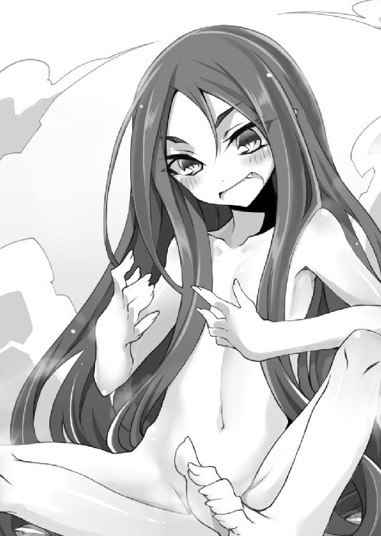
湯気の向こうからユフィの声が聞こえてくる。間もなく、水たまりならぬ湯だまりをばしゃばしゃと踏み越えて、ユフィ、ハナ、それにトウマを抱えたイブスキが僕の前に現れた。
一同は、僕と全裸幼女を発見してピタリと足を止めた。
最初に発言したのは、トウマだった。
「可愛い......」
一同の視線がトウマに集中。ハッとなった彼は恥ずかしさで顔を真っ赤にしてしまう。
「ふぉふぉふぉ、皆の衆！ 出迎えご苦労じゃ！」
「え」
元気よく片手を上げる全裸幼女に、ハナが絶句する。少女の正体に気づいたハナは、幼女を指差しながら、答えを求めるように僕を見た。
「もしかして......」
「ラドンだよ」
「！」
幼女の正体を知った一同が、まじまじとラドンを見つめる。全裸幼女は恥ずかしがりもせず、むしろ鼻高々といった様子で無い胸を反らしていた。
「あ」
僕らが言葉を失う中、何かに気づいたユフィが声を上げた。
「ちょっと待った。ラドンが女ということは」
言われて僕も「あ」と声をあげる。
「そうか。ラドンが女なら、好きな相手というのは......男、なのか？」
「何を今さら。わしが会いたい相手は人間の男だと言ったじゃろうが」
「......言ったっけ？」
「言ってなかったかのう？」
腕を組んで考え込む少女ラドン。
なるほど。道理でいくら探しても見つからないはずだ。黒髪乙女の温泉招待は完全な無駄骨だったと判明して、僕はがっくりと肩を落とす。
「ようするに僕らが捜すべき相手は、ヌブル山で水浴びをしていた長い黒髪で胸に三角形のアザがある若い『男』、ってことだな？」
「うむ。その通りじゃ」
「他に言い忘れていることはないか？」
「ない！」
自信たっぷりに全裸のラドンは言い放つ。
「しいて言うなら、その者と出会ったのは六十年前だということぐらいじゃ」
「若い男じゃないよ！ とっくに年寄りだよ！」
「そうなのか？ わしらの仲間内では六十歳など若造でしかないのじゃが」
「ドラゴンと人間の寿命を一緒にするな！」
ああ、ダメだ。頭がくらくらしてきた。早く帰って休みたい。
「つまり、ヌブル山で水浴びをしていた長い黒髪で胸に三角形のアザがあるお爺さんを捜せばいいんだな？ 今度こそ間違いないな？」
「あの......」
僕が再三確認していると、イブスキに抱えられたままのトウマがおずおずと手を上げた。
「オレ、たぶんその人知ってる」
言うが早いか、ラドンは素っ裸のままトウマに駆け寄った。目のやり場に困ったトウマが顔を逸らすも、ラドンは両手で彼の顔を挟み、無理矢理自分の方へと向けさせる。
「トウマよ、教えるのじゃ！ その者はどこの誰じゃ！」
悪ガキのくせに純情なトウマは、恥ずかしそうに目線をさまよわせながら質問に答えた。
「オ、オレの、じいちゃんだよ」
町の外れに、なだらかな丘がある。
地形的なものなのか、それとも風土的なものなのか、その丘は昔から草木が生えず、広大な荒れ地として放置されていた。この地が共同墓地として利用され始めたのは、ほんの数年前のことだ。
この不毛の丘に、ラドンの想い人は眠っていた。
「オレのじいちゃんは若い頃に世界中を旅したらしくてさ、よく昔話を聞かされたんだ」
墓石の前でトウマが祖父の思い出を語る。
ここは共同墓地なので、墓石といっても丘の上に大きな石碑が一本建っているだけだ。この地のどこにラドンの想い人が眠っているかはわからないが......それでも僕とハナと人間になったラドンの三人は、墓石の前に立って故人に思いを馳せていた。
「オレは、じいちゃんの話すホントかウソかわからない昔話が大好きだった」
トウマの思い出話に耳を傾けるラドンは、可愛い子供服を着て、長い赤髪をツーテールにまとめている。どこからどう見ても人間の子供にしか見えないのに、その瞳には幼い外見にそぐわない深い思慮と感懐が宿っていた。
......六十年間、思い続けた人の墓前で、彼女は何を思うのか。
「じいちゃんから聞いた話の中でオレが一番好きだったのは、山で出会ったドラゴンの話なんだ」
トウマがドラゴンの話を始めたのは偶然なのか。それとも、この場所でこれを話さなければいけないとわかっていたのか。練習していたかのように淀みなく語るトウマに、僕たちは――特にラドンは集中して耳を傾ける。
「ある日、じいちゃんが山で水浴びをしていたら、レッドドラゴンにばったり出くわしたんだ。だけどドラゴンに食べられるかもしれないってときに、じいちゃんは怖がるどころか『なんて綺麗な生き物なんだ』って感動してさ。そのドラゴンから目が離せなくなったんだ」
話を聞くラドンの顔つきは、幼く可愛いのに、ひどく真剣で、何を感じているのかまるで読み取れない。
「じいちゃんは死ぬ間際まで言っていたんだ。『いつか、あのときのドラゴンにもう一度会いたい。会って、あのドラゴンの背に乗って一緒に大空を飛びたい』って。......そんな話ばっかり聞かされて育ったから、いつの間にかオレもドラゴンが大好きになってさ。いつかドラゴンの背に乗って、空を飛びたいって夢見るようになったんだ」
トウマは、ラドンに向かって深々と頭を下げる。
「夢を叶えてくれて、ありがとう」
鼻に掛かった声で感謝を伝えると、トウマは顔を伏せながら――僕たちに泣き顔を見せないようにしながら、墓石に近づき、額を押しつけた。
「......じいちゃん。夢が叶ったよ」
これが、人々から竜王と恐れられたドラゴンの、六十年目の邂逅のすべてだ。
丘を降りてトウマを見送った後、僕は悲願を果たした少女に尋ねた。
「これからどうする？」
最強のドラゴンから脆弱な人間になった少女は、目的を失って、これからどうやって生きていくのか。心配する僕を後追いするように、人見知りのハナがおずおずと声をかける。
「も、もし必要なら、ドラゴンに戻れる温泉を作りましょうか？」
「いや、不要じゃ」
晴れ晴れとした声でラドンが答える。
「わしはもうしばらく人間のままでいたいと思う」
そう言うと、ラドンは無邪気な笑顔を僕らに見せた。
それはとても子供っぽくて......とても人間らしい笑顔だった。
「人間も、案外悪くないのじゃ」
第三話 帝国最強の男
「というわけで、当温泉旅館で仲居を雇うことになりました」
「わしが仲居じゃ。よろしく頼む」
ミニスカートのメイド服に身を包み、真紅の長髪をツーテールにまとめた女の子が、旅館の大広間で「えっへん」と胸を張る。
一方、新人仲居を紹介されたユフィとイブスキは、明らかにげんなりとしていた。
「み、み、み、認めませんぞ！」
「くわっ」と顔面を怒らせ、頭の血管が切れそうな勢いで猛反対したのはイブスキだ。
「ドラゴンを雇うなど言語道断！ 絶対に認められません！」
「今のわしはドラゴンではなく人間なのじゃが」
「元ドラゴンというだけで十分です！ 問題外です！」
地団駄を踏みながら激しい剣幕で言い返すイブスキ。ドラゴンだったぐらいでそんなに目くじらを立てるなんて、器の小さい男だ。
「イブスキ。これは決定事項だから。いくら反対しても変えられないよ」
「正気ですか!? ドラゴンですぞ！ 絶対にろくでもないことをやらかすに決まっています！ ええい、こうなったら私の口から国王陛下にご報告させていただきます！ ドラゴンを雇うなどという暴挙は、陛下が絶対にお許しになりません！」
「陛下には報告済みだよ。『ドラゴン雇うなんてアリマもやるでねえか、コノコノ～』って喜んでくれたよ」
「陛下ぁぁぁぁ～～！」
頭を抱えながら膝から崩れ落ちるイブスキ。うん、どうやら納得してくれたようだ。
「ユフィもいいよね？」
「アリマがそれでいいなら、私に異存はないが......」
じろじろと、ユフィはメイド服姿の女の子を穴が開くほどに見つめる。
「......幼女にこんな格好をさせるのがアリマの趣味なのか？」
「違うよ！ この格好は仲居の制服！」
「そもそも、その『仲居』というものがよくわからないのだが」
あ、そうか。温泉は古代文明の遺産だ。番頭だ仲居だと温泉用語を使われても、現代の人間に通じるはずもない。まずはそこから説明していかないと。
「仲居って言うのは、ようするに使用人のことだよ。接客したり、料理を運んだりするのが主な仕事だ。今で言うメイドみたいなものかな？」
「なるほど。それでメイドの格好をしているのか」
湯人の時代には仲居用の制服もあったようだが、古文書を見た限りでは着方もよくわからない複雑怪奇な衣装で再現は困難だった。そのため、やむなくメイド服で代用したのだ。
「それにしても恐ろしいほど似合っているな」
可憐な少女に変身した元ドラゴンを、ユフィはしげしげと眺め回す。対する幼女メイドはスカートの端をちょこんとつまみ上げ、優雅にお辞儀をしながら愛らしく微笑みかけた。
「よろしくお願いします。お姉様♪」
「きゅん」
猫なで声で甘える幼女と、胸のときめきを口走る変態姉。「いい！ すごくいい！」と僕に向かって目を血走らせるユフィに対して、メイド幼女は、
「ふっ、ちょろいのう」
邪悪な笑顔でニヤついていた。こいつらダメすぎる。
「ミササ、ですか？」
ぽかぽか陽気が心地好い昼下がり。山小屋から王宮へと続く山道を歩きながら、ハナが愛らしく小首を傾げる。隣を歩く僕は「そのとーり」と言わんばかりに大きくうなずいた。
「人前で『おーい、そこの竜王ラドン』って呼ぶわけにはいかないだろ。だから、ラドンが人間の姿のときは偽名で呼ぶことにしたんだ。それがミササ」
僕は雇ったばかりの仲居について説明する。良くも悪くも竜王ラドンは有名人（有名ドラゴン？）なので、そのままの名前で呼ぶのは差し障りがあるのだと。
「でも、あんなに小さな子がちゃんと働けるでしょうか？」
「見た目は子供でも、実年齢は僕たちの中で最年長だよ。それに、ミササはああ見えて力持ちでさ。口から火も吹けるし、いろいろ重宝しそうだよ」
「はあ、口から火も......」
ドラゴンだった名残なのか、ミササは人間としては異常なほど頑丈で、腕力もかなりのものだった。彼女を雇ったのは「行く当てのないミササを不憫に思ったから」という理由だけではないのだ。
「でもこれで、露天風呂、番頭、仲居が揃いましたね。あとは旅館が完成すれば、いつでも営業を始められます」
「うん。......いよいよだ」
「はい、いよいよです」
山道を歩きながら、僕たちは裾野に建てられた温泉旅館を見下ろす。ドラゴン騒動のせいで計画に遅れが生じたものの、建築作業は順調に進んでいると言っていい。建物の外観はほぼ完成しており、あとは内装と、露天風呂に続く渡り廊下を作るだけだ。
「ようやく、始まるんですね」
僕の温泉計画に最初から関わっているだけあって感動もひとしおなのだろう。ハナはメガネの奥で瞳をうっすらと潤ませていた。
思えばハナには世話になりっぱなしだ。古文書のことも、湯人のことも、温泉のことも、すべてハナから教わった。「どんな願いも叶う温泉」を宣伝文句に出来るのは、温泉を調合できるハナの力があってこそだ。
ハナがユ国に来なければ、きっと僕は、温泉旅館を作ろうとさえ思わなかった。
ハナは僕の恩人だ。ハナと出会えたから、僕は、
「？ どうかしましたか？」
「いや、なんでもないよ」
無意識にハナの横顔を見つめていたらしい。不思議そうな表情で見つめ返されて、僕は照れ隠しにぽりぽりと鼻を掻く。
......ぽりぽりと鼻を掻きながら、横目でちらりとハナを見る。
「......ハナは、ずっとここに居てくれるんだよね？」
「はい、もちろんです」
花の咲くような笑顔でハナは即答してくれた。
「ここ以上に温泉の研究に打ち込める場所はありませんから！」
「あ......そうだね......」
ま、いいか。ハナがずっと居てくれるなら温泉旅館は安泰だ。安心した僕は、ハナと肩を並べながら山道を下っていく。
このときの僕は、いつまでも二人並んで歩いていられると思い込んでいた。
勝手に、そう思い込んでいた。
「むっ、番頭！ 良いところに来たのじゃ！」
ハナと連れだって温泉旅館に入ると、玄関でメイド服のミササが僕たちを迎えてくれた。何ごとかと思う僕の目に、玄関に立っている若い男性の姿が映る。
第一印象は、頼りなさそうな優男。
年齢は二十歳前後。すらりとした痩せ型で、髪は癖っ毛のブロンド。これといった特徴のない顔立ちは、二枚目と呼べる程度には整っている。細い目と常に口角が上がっている口元が柔和な雰囲気を醸し出していた。
柄のないシンプルな衣服は、よく見ればとても上等な仕立てだ。ともすれば王族である僕よりもいいものを着ているかもしれない。清潔感のある装いで、きちんと背筋を伸ばして僕の目を見るその振る舞いからは、折り目正しい人柄が感じられた。
「初めまして。あなたがバントーですか？」
見た目にふさわしい優しく穏やかなトーンで、金髪の青年が話しかけてきた。僕は返事をしようと口を開きかけ......。
「バ、バベル様!?」
ハナの素っ頓狂な声に驚き、あわてて振り返る。僕の背後でハナは口元を押さえたまま目を白黒させていた。何だ？ ハナの知り合いなのか？
「もしかして、君がハナ君ですか？」
「は、はい！ あの、どうしてバベル様が......」
ハナが緊張の面持ちで受け答えする。どうやら面識があると言うより、ハナの方が一方的に彼を知っている感じだ。頬を朱に染めたハナは、憧憬の眼差しで彼を見つめ......。
なんだろう。この胸の奥にモヤモヤと湧き上がる感情は。
「失礼ですが、どちら様ですか？」
僕が棘のある口調で尋ねると、穏和な青年は年下の僕に対して礼儀正しく頭を下げた。
「申し遅れました。私はバベル・バーニャ。先月、帝国軍聖遺物研究所の所長を拝命した者です」
「バベル様が所長に!?」
驚きを隠しきれないハナ。よくわからないが、この若さで帝国軍が誇る研究機関のトップに立つのは、とてもすごいことなのだろう。
「失礼」
僕の肩をバベル所長が優しく押しのける。その素振りはとても控えめなのに、不思議と逆らえない貫禄のようなものが感じられた。
「ハナ君。温泉のレポートを読ませてもらいました」
「は、はい！」
ごくごく自然にバベルはハナの手を握る。ハナもまんざらではなさそうで、喜びで声が上擦っている。
......なんだろう。胸がやけにムカムカする。
「大変興味深い内容でした。ぜひその温泉を、この目で確認させてください」
「はい。喜んで」
所長に褒められたハナは、手を握られたまま嬉しそうに顔をほころばせる。
苦虫をかみつぶしたような顔で見守る僕をよそに、温厚を絵に描いたような青年所長は、ハナに優しく語りかけた。
「ハナ君のレポートが真実だと確認できたら、すぐにでも聖遺物研究所に復帰できるよう手配しましょう」
喜色満面だったハナの表情に、初めて影が差した。ハナはちらりと僕を見るが、そんな彼女の視線を遮るように、青年所長がハナの体をぐいと引き寄せる。
「あなたをクビにしたのは間違いでした。あなたは我々に必要な人材です。さあ、荷物をまとめてください。私と一緒に帝国へ帰りましょう」
「これは何じゃ？......ゼンマイ？ 山に生えている野草か。雑草を食べねばならぬとは、人間とはひもじい生き物じゃのう」
夕餉を囲みながら、メイド服のミササが出された食事に文句をつける。「草くさいのう」とダジャレだか何だかわからないことをほざきながら、しゃくしゃくとゼンマイを噛みしめ、
「うえ」
あ、吐き出した。汚いなぁ。
本日の夕食は、旅館の大広間にたくさんの一品料理を並べての大試食会だ。古文書に書かれていた「湯人の伝統料理」なるものを片っ端から再現して、旅館の名物になりそうな料理を探すのが目的である。
ちなみに参加メンバーは僕、ミササ、イブスキの三名。ハナはバベルの応接で忙しいため参加していない。きっと今頃は二人で温泉研究所に籠もっているはずだ。二人きりで......。
「アリマ殿下。箸が止まっておりますが、お口に合いませんか？」
暑苦しい軍服の上にエプロンを着たイブスキが、不安そうに尋ねてくる。ぼーっとしていた僕は、あわてて目の前にあった山菜を、ユ国地方特有の食器「箸」でつまんで持ち上げた。
「そんなことはない。すごく美味しいよ」
「左様ですか。それはようございました」
エプロン姿の老将軍がホッと胸を撫で下ろす。彼の格好を見てわかる通り、ずらりと並んだ料理はすべてイブスキが調理したものだ。由緒正しい軍人の家系に生まれついたイブスキは、意外にも包丁の扱いが大得意だった。
「そういえばユフィは？ 昼から見かけないけど」
「それが、旅館の前まで一緒に来たのですが、急に『用事を思い出した』と王宮に戻られまして......」
「ふーん。何かあったのかな？」
弟と可愛い女の子をこよなく愛するユフィが、僕やハナやミササに会わずに帰るなんて、よほどのことがあったに違いない。
「旅館に来る途中で何か見かけたのかな？」
「さあ、わかりかねますが......」
「うみゃあああああああああ!!」
いきなりミササが奇声を上げたので、僕とイブスキはびっくりして倒れそうになった。
なんだ？ なにが起こった？
「こ、こ、この美味い食べ物は何じゃ！」
箸を使い慣れていないミササが、焼き魚の頭と尻尾を素手で掴んで僕らへと突き出す。魚の腹の部分が欠けているところから察するに、どうやらミササは焼き魚にかぶりつき、あまりの美味さに絶叫してしまったようだ。
「それは、鮎の塩焼きですな」
「アユノシお焼き！ これほどの美味を生み出すとは、人間の叡智は侮れぬのじゃ！」
「いや、そんな大層なものじゃないから。ただの焼き魚だから」
「たわけ！ 『魚は生で食すもの』という固定観念を覆す、奇想天外な発想力の凄さがお主にはわからぬのか！ 魚を焼いて食べるなど、わしらドラゴンには逆立ちしても思いつかぬ発想じゃ！」
「ドラゴンは生魚しか食べないかもしれないけど、人間にとっては焼き魚は普通だから」
「なんじゃと！ こ、これが普通とは、まさしく食に対する人間の飽くなき探求心が――」
「ミササ殿。焼き魚ならば他にもたくさんありますぞ」
手料理を褒められて嬉しかったのか。イブスキは世話女房よろしく魚料理を次々とミササの前に並べていく。「わっほー」と歓喜の悲鳴をあげるミササはよだれが止まらない。
焼き魚に頭からかじりつく喜色満面の幼女ミササと、そんな彼女を微笑ましく見守るお爺さんイブスキ。......この二人、案外相性がいいかもしれないな。
「焼き魚じゃ♪ 焼き魚じゃ♪」とご満悦のミササが、汚れた口元をイブスキに拭いてもらっていると、
びたん、びたん。
どこからか不気味な音が聞こえてきた。
「なんだろう？」と思い、音の出所を探して部屋を見回した僕は......メイド服のスカートの中から、ドラゴンの尻尾が生えているのを発見してしまった。大喜びする子犬のように、ドラゴンの尻尾は元気よく上下左右に動き、先端を床に叩きつけている。びたん、びたん。
「ミササ、その尻尾......」
「むっ！ この気配は、もしや！」
ミササは勢いよく立ち上がると、スカートと尻尾を翻して大広間を飛び出した。おい、どこへ行く気だ！ そんな姿を誰かに見られたら――ミササがドラゴンだとばれたら大騒ぎになるぞ！
あわててミササを追いかけた僕とイブスキが辿り着いた先は、旅館の正面玄関だった。
玄関には、見知らぬ若者が立っていた。
「いらっしゃいませなのじゃ！」
拳を突き上げて元気よく挨拶するミササ（尻尾付き）。そうか、玄関に人の気配を感じたミササは、仲居の使命をまっとうするべく張り切って出迎えに来たのか。挨拶の仕方に問題はあるけど、その心意気は評価しよう。あと尻尾隠せ。
来訪者は、引き締まった体の長身美形色男。腰に長剣を下げているので、おそらく余所者だろう。温泉と平和が自慢のユ国では、帯剣している国民は滅多にいないからね。
「ここがユ国で一番の宿だと、町の人に聞いて来たのだが」
若々しい張りのある声で色男が訪問の意図を伝える。どうやら地道な宣伝が功を奏したらしく、口コミで評判を聞いた彼は旅館へ泊まりに来たようだった。
だが残念。旅館はまだオープン前である。
「申し訳ありません。当旅館はまだ営業を開始しておりません。ご利用はまたの機会に......」
尻尾付きミササを背中に隠しながら、一国の王子とは思えぬ低姿勢で僕は謝罪する。だが、はっきりと断られたにもかかわらず、彼は立ち去ろうとしなかった。
「そこを何とか泊めてもらえないだろうか」
しつこく食い下がる色男。どうしてこの宿にこだわるのか僕が不審がっていると......彼は「仕方がないか」とつぶやき、人差し指をちょいちょいと動かして僕を手招きした。
「君は剣聖ヴェリングラートの名を知っているか？」
近づいた僕に耳打ちするように、色男が小声で囁く。つられて僕も小声で答えた。
「はい、もちろん」
剣聖ヴェリングラートは、帝国最強の剣士だ。
傑出した剣技を備えながら、決して戦争には荷担しない。彼の敵は私腹を肥やす権力者や国家転覆を企てる秘密結社、凶暴な幻獣魔獣といった民を脅かす巨悪のみ。民衆のために剣を振るう正義の天才剣士。それが生きた伝説、剣聖ヴェリングラートだ。
ちなみにユ国の天才剣士ユフィは、帝国皇帝陛下が催した御前試合でヴェリングラートと対戦して、公衆の面前で完敗を喫している。僕が知る限り、ドラゴンを除いてユフィが唯一敗北した相手だ。
「私が、その剣聖ヴェリングラートだ」
「え？」
呆気に取られる僕へ、男は唇に人差し指を当てて「このことは秘密だよ」とウインクする。
「旅の途中で噂を聞いたんだが、この旅館にレッドドラゴンが宿泊していたらしいね」
「そ、それは......」
僕は思わずミササを見てしまったが、幸いにも若き天才剣士は視線に気づかなかったらしい。剣聖を名乗る美男子は、小声でここへ来た本当の理由を打ち明けてくれた。
「ドラゴンの生態について詳しく知りたいんだ。特に、ドラゴンの弱点について知っていることがあれば是非――」
剣聖ヴェリングラートの真意を知り、僕の全身に鳥肌が立つ。
彼は「旅の途中で立ち寄った」と言った。もしかしたら、彼の旅の目的は......。
「一つ、うかがってもいいでしょうか？ 先ほど『旅の途中』とおっしゃいましたが、どこへ向かう途中なのですか？」
「実は、この辺りに人々の平和を脅かす邪悪なドラゴンがいると聞いてね。その邪竜を――ヌブル山に住む竜王ラドンを退治しに行く途中なんだ」
正義の剣聖は、竜王ラドンを殺すための情報提供を僕に要求していた。
ちらりとミササを見ると、彼女の尻尾はいつの間にか消えていた。
「イブスキ。今日から君が板前だ」
「板前とは何ですか？」
調理場で、僕はエプロン姿のイブスキと向かい合う。剣聖ヴェリングラートを部屋に案内した翌日、僕たちは調理場に集まって今後の対策を話し合っていた。
「板前っていうのは料理人のことだよ。とにかく、豪華な料理でヴェリングラート様を宿に引き留めるんだ。絶対に彼をドラゴン退治に出発させないように」
「殿下のご命令とあれば従いますが......」
軍服の上にエプロンを着けた白髪の老将軍が、調理場の入口に視線を送る。そこではメイド服姿のミササが面白くなさそうに唇を尖らせていた。
「ヴェリングラート様を旅館にお泊めしてよろしいのですか？ ミササの正体がばれたらただではすみませんぞ」
「だからって無下に追い返しても何の解決にもならないだろ。なんとかしてドラゴン退治を思いとどまらせないと」
「ふん。人間風情が、わしに楯突こうとはいい度胸じゃ。目にもの見せてくれようか」
くっくっくっ、と八重歯をむき出しにして笑うミササ。ドラゴンの姿ならまだしも、メイド服を着た幼女がそんなことを言っても「可愛いなあ」と思われるのが関の山だ。
「ミササも、今は人間の体なんだから。無茶はしないでね」
「ふん」
ドラゴンを退治しに来た男がよほど気に入らないのか、ミササは不満を訴えるように「べー」と舌を出す。やっぱり可愛い。
「それで、殿下はこれからどうされるおつもりですか？」
イブスキに尋ねられて僕は言葉に詰まる。どうすれば最強剣士はドラゴン退治を諦めてくれるのか、僕には見当も付かなかった。
「ハナに相談してみてはどうじゃ。都合のいい温泉を作ってくれるやもしれぬぞ」
「温泉......。そうか、『ドラゴンが怖くなる温泉』や『ドラゴンに逆らえなくなる温泉』を調合できれば、ドラゴン退治を諦めさせられるかもしれない」
「ドラゴンに逆らえなくなる......。ほほう、それは面白そうじゃのう」
悪そうな顔でニヤつくミササ。僕はものすごく危ない提案をしたかもしれない。
「と、とにかくハナに相談してみるよ」
剣聖のことはもちろん、現れたり消えたりするミササの尻尾のこととか、バベルと一緒に聖遺物研究所に帰ってしまうのかとか、ハナに聞きたいことは山ほどあった。
僕は「くっくっくっ」と八重歯をむき出しにして笑うミササを尻目に、一路、温泉研究所へと向かうことにした。
山麓にある温泉研究所に到着すると、山小屋は巨大なキノコの群れに囲まれていた。
「......ちょっと見ない間に、何が起こったんだ？」
僕の身長の三倍以上はあるだろうか。森の大樹と並んでもひけをとらないほど雄々しく立派にそそり立つキノコたちが、赤地に白い水玉模様という派手な色彩の傘を広げている。本数を数えてみると、大小あわせて十二本のカラフルお化けキノコが研究所を取り囲んでいた。
「これってやっぱり、温泉の効能だよな」
おそらく、バベル相手にハナが温泉の効能を実演してみせたのだろう。新たに開発した「キノコを巨大化させる温泉」を披露した結果、巨大キノコまみれになった......といった所か。
むくむくと巨大化するキノコを見せつけられたバベルはどう思っただろうか。僕がそうだったように、一目で温泉の奇跡を信じただろうか。それともイブスキのように、トリックだと疑っただろうか。
幻想的なのか怪奇的なのかよくわからない景色の中、僕はキノコの傘の下を通り抜け、研究所の扉を叩いた。
「ハナ、ちょっといいかな。話があるんだけど――」
扉を開けると、そこにハナはいなかった。
手狭な山小屋には、所狭しと並べられた実験器具と、仮眠用の寝台と、床に積み上げられた古文書の束と、フラスコに試験管のお湯を注ぎ込もうとする金髪優男の姿があった。
「おや。これはこれは番頭さん。ハナ君に用事ですか？」
「え、ええ」
物腰柔らかなバベルに、僕はなぜだか鼻白んでしまう。どうしてだろう。こんなに人当たりがいい相手なのに、僕は彼に対して苦手意識があるようだ。
「バベル様お一人ですか？ ハナは......」
「彼女なら、実験用の温泉水を補充するために、山へ源泉を汲みに行きましたよ」
「山へ？ そうですか」
これは困った。山には二百種類以上の源泉が湧いている。ハナがどの源泉を汲みに行ったのかわからなければ追いかけようがない。下手に探しに行くより、ここでハナの帰りを待つ方が賢明か。
「ここで待たせてもらっても構いませんか？」
「もちろんです。実は、私もあなたに折り入ってお話があるのです」
バベルに椅子を勧められ、僕は促されるまま席に着く。バベルは試験管とフラスコをテーブルに置くと、僕の正面に座って仰々しく足を組んだ。
......不思議な男だ。椅子に座ったまま足を組むなんて、一歩間違えれば下品で偉ぶって見えかねないのに、彼がやると気品すら漂わせるほど様になっている。
一国の王子である僕が品位で負けを感じていると、彼はにこやかに微笑みながら、さっそく本題を切り出した。
「ここの温泉を売っていただけませんか？」
突然の申し出に絶句する僕を、バベルは穏和に、かつ確固とした意志を込めて説得する。
「ハナ君は温泉の力でキノコを巨大化して見せてくれました。親指ほどの大きさしかなかったキノコがぐんぐんと巨大化していく光景は、奇跡としか言いようがありません」
温泉の奇跡によほど感動したのか、バベルの口ぶりはとても力強く、揺るぎない。
「聞けば、助かる見込みのない重度の火傷を温泉の力で治したそうですね。食べ物を巨大化させ、瀕死の怪我人をも治療する奇跡の泉......。この温泉の力を解明すれば、飢餓や病気で苦しむ多くの人々を救えるかもしれない。温泉の奇跡を目の当たりにした私は、そんな夢のような希望すら抱きました。......ですが」
バベルは室内に置かれた実験器具を見る。
「率直に申し上げて、こんな設備では話にならない。研究にはもっと機材と人材が必要です。ですから、どうか私に温泉を預けていただきたい。そうすれば、もっと効率よく温泉を研究して世の中に生かしてみせます」
この地で産出した温泉水は、サンプルとしてすべて帝国領に運ぶ。ハナを中心とした優秀な学者たちが、聖遺物研究所の最新設備を使って温泉水を調査する。そうすることが最善だとバベルは僕を説得する。
貧しいユ国が温泉を独占するよりも、聖遺物研究所のように大きな機関に活用させた方が世の中の役に立つ。それはあまりに正論すぎて反論の余地もないけれど、
「残念ですが売ることはできません。ここの温泉は王宮の一部、いわば国の所有物です。他国に売るわけにはいきません」
「では、帝国がこの土地を借り受けるというのはいかがですか？」
僕の拒絶を予測していたかのように、バベルが間髪入れず代案を提示する。
「土地を借りる代償に、我々は賃貸料をお支払いします。ユ国には高額の定期収入が約束され、我々は支払った金額に見合う成果を得る。どちらにも損はありません」
そう言ってバベルが提示した金額は、ユ国政府の年間予算に匹敵するほどの大金だった。
もしも契約が成立すれば、ユ国は財政破綻の危機から救われる。「国民に豊かな生活をさせたい」という僕の夢も一気に現実味を帯びてくる。
温泉を帝国に売り、ハナを聖遺物研究所に返せば、ユ国の民は幸福になれる。
「......一つ、確認させてください」
「はい。何でしょうか」
「あなたの言う通りにした場合、温泉旅館はどうなりますか？」
「申し訳ありませんが、旅館は閉鎖していただきます。他にも温泉を使っている場所があれば、すべて閉鎖していただきたい。貴重な温泉を一滴も無駄にしたくありませんから」
町から温泉が消える。それが、ユ国が豊かになる条件。
「もう一つだけ、聞かせてください」
僕は、ユ国の救世主と成り得る青年を真正面から見据え、尋ねる。
「あなたは、温泉のお風呂に入ったことがありますか？」
「いいえ、ありません。帝国にはお湯に体を浸す習慣はありませんから。帝国では風呂と言えば水で体を洗い流す『行水』のことを差すのです」
根が正直な人なのだろう。異文化に対する戸惑いを隠しもせず、バベルは率直に打ち明ける。彼らしい穏やかさで、気さくに、無邪気に、
「それに、誰が入ったかもわからないお湯に体を浸すなんて気色悪いじゃないですか。好んで入る人の気が知れませんね」
――このときの僕には、「返事は少し考えさせてください」と答えるのが精一杯だった。
バベルと顔をつきあわせることが息苦しく思えて、僕はそそくさと山小屋を後にする。
無性にハナに会いたくなって山に入るが、直感だけを頼りに歩いても出会えるはずがない。闇雲に山をさまよううちに、いつしか太陽は沈み、煌々と輝く月が空を照らし始めていた。
これ以上探しても見つかりそうにないな。
そう思い、諦めて引き返そうとしたとき、山道脇の草むらがカサカサと不自然に揺れた。
「......誰かいるの？」
つぶやいてみるが、草むらはしんと静まりかえったままで返事はない。
ハナだろうか？ いや、彼女ならこそこそと隠れたりしない。でもハナの他に、こんな時間に山を徘徊する人間なんて......。
ハッ！ もしかしたら野生の獣が僕を餌にしようと隙をうかがっているのかもしれない。だとしたら......まずい、ここは危険だ。僕は野獣を刺激しないよう、慎重に間合いを広げていく。じりじりと後退する僕に気づいたのか、草むらに潜む野獣は......。
ガサガサガサ！
いきなり僕に襲いかかってきた！ あっという間に僕は野獣に組み伏せられる！
「会いたかったぞアリマ～！ ほおずりほおずり」
飢えた野獣改め愚姉ユフィは、僕に抱きつきながらモチモチとしたほっぺたを顔に押しつけてきた。離れろ馬鹿姉！ 恍惚とした顔すんな！
「照れずとも良い。ここならば誰も見ていないぞ。さあ、思う存分、私に甘えるがいい！」
「照れてないから！ いいからとっとと離れろ！」
どうにかこうにかユフィを引っぺがし、僕は月下の山道で変態姉と対峙する。
「ユフィはこんなところで何やってんだよ」
「うむ。ハナに話したいことがあったのでな。山に入って探していた。その途中でアリマを見かけたので、思わず襲いかかってしまったのだ」
ハナに用があるなら温泉研究所で待っていればいいのに。そう思った僕は、ユフィが一応女であることを思い出す。いくらバベルが穏和で優しそうでも、狭い山小屋に見知らぬ男と二人きりは気まずいのだろう。
「そう言うアリマも、ハナを捜しに来たのだろう？」
「そうだよ。結局会えなかったけどね」
「アリマは、ハナに何の用事があったのだ？」
「......ちょっと相談したいことがあって」
「相談だと？」
キラリーン。ユフィの目が、獲物を狙う鷹の目のように鋭く輝いた。
「悩み事なら私が聞こう！ なあに心配するな。アリマのためならたとえ火の中水の中、一肌でも二肌でも喜んで脱ごうじゃないか！ さあ、遠慮せずに姉の胸に飛び込んでこい！」
「そういうこと言うと思ったから、ユフィには相談しなかったんだよ」
爽やかな笑顔で両手を広げるユフィの前を、僕は無視して通り過ぎる。日も暮れたことだし、ハナに会うのは諦めて山を下りるとしよう。
「つれないなぁ。姉は寂しいぞ」
甘えた声を上げながら、ユフィが僕の後に続いて山を下りる。襲いかかられないよう適度な距離を保ちながら、僕たち二人は一緒に山道を歩く。
「......それで、アリマは何を悩んでいるのだ？」
急に真顔になるユフィ。こういう顔をしているときのユフィは、凄く頼り甲斐があるように見えるんだよな。普段悪いことばかりしている人が、たまにいいことをするとすごい善人に見えるような......単なる目の錯覚だね、うん。
「次々と問題が起こってね。ハナに話を聞いて欲しかったんだ」
「どんな問題だ？ 私に話してみろ」
仕方なく僕は、ブラコンで心配性な姉に、今抱えている案件を語り出す。
案件その一。剣聖ヴェリングラートにドラゴン退治を諦めさせたい。
案件その二。仲居のミササに尻尾が生えたり消えたりしている。
案件その三。聖遺物研究所復帰を認められたハナは、このままだと帝国に帰ってしまう。
案件その四。聖遺物研究所所長のバベルが「温泉をよこせ」と要求している。
一通り話を聞き終えたユフィは、「ヴェリングラートが来ているのか」とつぶやき、珍しく真面目な顔で考え込んだ。
「最初の三つはともかく、温泉に入れなくなるのは困るな。もしも露天風呂が閉鎖されたら、アリマの入浴中に裸で乱入してハァハァできなくなる。それは私の生き甲斐の九割を失うことに等しい」
「もっと他に生き甲斐はないの？」
「だいたい、すべての公衆浴場が閉鎖されたら、可愛い女の子の裸を合法的に見ることが出来なくなるではないか。そんなことは耐えられない！」
「ユフィに相談した僕が馬鹿だったよ」
げんなりする僕に、ユフィは真面目な顔で言い返す。
「自分に正直で何が悪い。私は他のすべてを犠牲にしてでも一番大切なものを守る。それが私の信念だ」
「一番大切なもの？」
「そうとも。アリマにとって一番大切なものは何だ？ それがわかっていれば、おのずと答えが導き出されるはずだ」
「僕の一番大切なもの？」
一番大切なものって何だろう？ 温泉？ お金？ 仲間？ それとも......。
僕が思い悩んでいると、ユフィがふっと微笑んだ。
「聞くまでもなかったな。アリマがもっとも大切にしているものなど決まっている。なにしろアリマは、未来の王なのだから」
「......そうか。そうだね」
僕が何より優先すべきものは一つしかない。それ以上に大事なものなど考えられないし、考えてはいけない。
「僕にとっての第一は、国だ。ユ国を守り、民を幸せにする。それが次期国王である僕の役割だ」
「アリマの決断がユ国の未来を左右する。責任は重いが、それだけやり甲斐がある仕事だ。......それは、女の私には出来ないことだ」
羨ましがっているような、それでいて寂しがっているような、ユフィの微笑。
ふと僕は考える。ユ国では男が王位を継ぐのが慣例だ。だから今まで想像したこともなかったけど......ユフィは僕が王位を継ぐことをどう思っているのだろうか。
ユ国随一の剣士であるユフィは、人気でも腕っ節でも僕よりはるかに上を行っている。それなのに、ただ「女だから」というだけで無能な弟に玉座を譲らなければならない。優秀な姉としては複雑な心境のはずだ。
「ユフィは、王になりたいと思ったことはないの？」
言ってしまってから、僕はすぐに後悔する。こんなことを聞いて何になると言うんだ。
それなのに、ユフィは嫌な顔ひとつせずに答えてくれた。
「王になりたいと思っていた時期もあった。だが、武者修行で一年間、外の世界を見て回って納得した。......私は女なのだ。私では王にはなれない」
外の世界でどんな経験をしてきたのか。ユフィは玉座に未練はないと言い切った。
「今の私の望みは、アリマの支えになることだ。アリマを支え、身も心も一つになって共に歩むことが私の望みだ」
僕は良い王様にならなければならない。賢君とはいかなくとも、せめてユフィが「アリマに玉座を託して良かった」と思えるような王様にならなければいけない。ユフィの本音を聞いた僕は、本心からそう願う。
そのために――ユ国のより良い未来のために、僕がいま行うべきことは。
「さあ、アリマ！ 私と身も心も一つになろう！ 主に肉体的な意味で一つに！ ハァハァ」
「せっかくのいい話が台無しだ！」
ユフィがいつも通りのユフィだったので、僕はちょっとだけ安心した。
そういえば、ユフィはどうしてハナを探していたのかな？
そう思ったのは、ユフィと別れて温泉旅館に戻った後だった。
「ハナに話したいことがあるから」とか言っていたけど、ユフィが相談したいことって何だったのかな？......ま、いいか。どうせユフィのことだから大した用事じゃないだろ。勝手にそう結論づけた僕は玄関をくぐり、そこで血相を変えたイブスキと鉢合わせした。
「イブスキ？ そんなにあわててどうしたの？」
「ア、アリマ殿下！ ミササを見ませんでしたか！」
「いいや。ミササがどうかしたのか？」
「それが、ヴェリングラート様にお出しする焼き魚をミササが全部食べてしまったのです！ 残ったのは山菜ばかりで......。このような偏った食事をお出しするなど、私の板前としてのプライドが許しません！」
いつの間にか板前の仕事に誇りを抱いているイブスキだった。どんな命令にも全力で臨む姿勢は、まことに天晴れだ。
「かくなる上は、逃げるミササを捕まえて肉なり魚なりを調達させようと――」
まるで悪戯っ子とカミナリ親父だな。水と油ほどかみ合っていない二人なのに、喧嘩するほど仲が良く見えるのはどうしてなのか。
ともかく「ミササの姿は見かけなかった」と伝え、ものすごい剣幕で旅館を捜し回るイブスキを尻目に、僕は風呂場へ向かった。疲れたときは露天風呂でさっぱりするのが一番だ。
脱衣所で汚れた服を脱ぎ捨てた僕は、もうもうと湯気の立ち込める大浴場に足を踏み入れる。そこには、気持ちよく湯船に浸かっている先客がいた。
「あれ？ ミササ？ こんなところで何やってるの？」
「見てわからぬか？ 温泉に入っておるのじゃ。温泉は良いのう。この心地よさを味わえるだけで、人間になった甲斐があったというものじゃ」
「イブスキが探してたぞ」
「よいよい。あの者は年下のくせに口喧しくて敵わぬ」
頭の上にタオルを載せ、ミササは火照った顔で「はぁ～、極楽極楽」と頬を緩ませる。なるほど、確かに年寄りだ。
「何を突っ立っておるのじゃ。さっさと入れば良かろう」
頭にタオルを載せたままあぐらを掻き、恥じらいもなく混浴を勧めるミササ。女の子とはいえ見た目はお子様なうえにやたらと堂々としているので、まるで異性を感じさせない。
「......じゃあ、お言葉に甘えて」
ミササ相手に遠慮する義理もない僕は、体は子供で頭脳は年寄りのドラゴンと混浴することにした。......なんとなく、僕は外国に留学中の妹のことを思い出す。昔はよく妹と一緒に風呂に入ったものだ。ついつい僕は幼児体型のミササと妹を重ねて見てしまう。
すると、何かひらめいたのか、ミササがいきなり「そうじゃ！」と声を上げた。
「せっかくじゃ。お主に背中を流してもらおうかの」
「は？」
戸惑う僕をよそに、ミササは湯船で元気よく立ち上がる。一糸まとわぬミササは、ぺたぺたと濡れた足音を響かせながら僕の前へとやって来た。
そのまま僕に背を向け、ぺたんと床に座り込む。
「さっさと背中を流すのじゃ。それとも、わしのないすばでぃに見とれておるのかのう？」
ふぉふぉふぉ、と機嫌良さそうに笑うミササ。なんでそんなに楽しそうなの？
仕方なく、僕はタオルでせっけんを泡立てると、ミササの小さな背中をごしごしと洗ってやった。たちまち泡だらけになったミササは、くすぐったいのか終始笑顔で上機嫌だった。
ミササを泡まみれにして興に乗ってきた僕は、ついでに彼女の頭も洗ってやることにした。
昔はよく妹の頭を洗ってやったよなあ、などと懐かしい気分に浸りながら、僕はミササの頭をわしゃわしゃと揉みほぐす。髪を洗うのは生まれて初めての経験なのか、「うひょ！」とか「これは！」とか「目にしみる！」などと騒ぐミササはとても楽しそうだ。
「ふぉふぉふぉ、頭を洗うというのは気持ち良いものじゃ」
「お気に召してなによりです。かゆいところはありませんか？」
「そうじゃな、もう少し上を......そこじゃ、そこそこ。おー、気持ちよいのう。アリマはなかなかのテクニシャンじゃ。褒めてつかわす」
「光栄です」
ざっぱーん、と頭からお湯をかけてミササの泡を洗い流す。おかえしとばかりにミササが僕の背中を流して、綺麗な体になった僕たちは十二分にリラックスして湯船に入った。
「「あ～、極楽極楽」」
ハモりながら、僕とミササは頭にタオルを載せる。
温泉って不思議だよな。入るだけで心が和む。平和で穏やかな気持ちになって、誰にでも優しくしたくなる。これも温泉の魔力に違いない。
ちなみにミササは僕に背中を向ける格好で、僕の太ももの間に座っている。密着したまま極楽気分を味わう僕たちは、はたから見れば仲のいい兄妹か親子に見えたことだろう。実際はミササの方が何倍も年上なんだけど。
「おお、そうじゃ。アリマが留守の間にドーゴが訪ねて来たぞ」
「陛下が？」
のんびり朗らかな声で、ミササが思い出したように報告する。
「ドーゴが言うには、町で噂が広まっているそうじゃ。何でも、農民たちが金を出し合い、腕利きの剣士を雇ってドラゴンを退治しようとしているとか。わしも嫌われたものじゃのう」
からからと明るく笑うミササ。いやいや、自虐的すぎて笑えないんだけど。
町の人たちは、今でも竜王ラドンを「町を襲った凶暴なドラゴン」として恐れている。早々に退治して安心したいと彼らが願うのは無理からぬことだった。
「いっそのこと、ミササの正体を明かそうか？ 竜王ラドンが敵じゃないとわかれば、誰も退治しようとは言わなくなるんじゃないか？」
「アリマはつくづくお人好しじゃのう。悪いがわしはアリマほど人間を信用しておらぬ。正体を明かした途端に命を狙われては敵わん」
恐怖にかられて判断力を失った人間は何をするかわからない、とミササは言う。そしてドラゴンの存在は人間の恐怖心を煽るのに十分すぎる素材だ。
「でも、いつまでも隠し通せるものでもないだろ？ 現にミササは、いきなり尻尾が生えたりしてるじゃないか」
「尻尾？」
お湯の中で首を傾げるミササ。どうやら彼女は体の変化に気づいていないようだ。スカートの下から尻尾が生えていたことを教えると、ミササは「ほほう」と興味深そうに唸った。
「ドラゴンの肉体は強靱じゃからな。興奮したことで細胞が活性化して、抵抗力が一時的に高まったのじゃろう。それで温泉の効果が薄まったのじゃ」
「興奮すると温泉の効果が薄まる？」
「例えば、焼き魚を食べたとき。あまりの美味しさに興奮して、うっかり体がドラゴンに戻ってしまうのじゃ！」
「すごく迷惑だ！」
大変だ。今後はミササが興奮しないように気を配らないと。とりあえず焼き魚は禁止だな。
「はぁ......。どうしてこう、次から次へと問題ばかり......」
「なんじゃ、景気の悪い顔をしておるのう。他にも気になる事があるのか？」
「......実は......」
温泉に入っていると気が緩むようだ。僕はバベルが温泉を欲しがっていることをぺらぺらと喋ってしまった。話を聞いたミササが「うむうむ」と可愛らしくうなずく。
「なるほどのう。大金が転がり込む代わりに、二度と温泉には入れなくなるわけじゃな。それで、返事をどうするか決めたのか？」
「うん。......温泉を、売ろうと思う」
だって、お湯を売るだけで大金が転がり込んでくるんだよ？ 儲かるかどうかわからない温泉旅館に賭けるより、その方がはるかに賢い選択だ。
「じゃが、それで本当に国民が喜ぶのかのう？」
「生活が豊かになるんだ。喜ぶに決まってるさ」
「......そうじゃな」
意味深につぶやくと、ミササは頭に載せたタオルで汗を拭きながら、「お主の国じゃ、お主の好きにすれば良かろう」と言った。
「で、その話はハナにもしたのか？」
「いや。探しているんだけどなかなか会えなくてさ」
「なんじゃ。ハナならさっきまで旅館にいたぞ。アリマを待っていたようじゃが、お主の帰りが遅いので諦めて研究所へ戻ったはずじゃ」
行き違いか。僕は湯船に浸かったままがっくりとうなだれる。
「......一つ聞いても良いかのう？」
湯船の中であぐらを掻きながら、全裸のミササが僕を見る。さすがレッドドラゴン、長時間お湯に浸かっていても、のぼせる気配がまったくない。
「温泉を売るとして、ハナのことはどうするつもりじゃ？」
「どうするも何も、温泉を失った国にハナが留まる理由はないだろ」
ハナは帝国に帰って温泉の研究を続ける。それ以外の未来などありえない。
「そうなるとハナとは二度と会えなくなるが、それでも良いのか？」
「良いも何も、もともとハナは帝国の人間なんだ。功績を認められて凱旋帰国するなら、祝福して送り出すのが友達だろ？」
「話をすり替えるな。わしは、ハナと会えなくなって後悔しないかと聞いているのじゃ」
「なに深刻になってるんだよ。別に二度と会えないと決まったわけじゃない。会いたくなったら、いつでも会いに行けるさ」
「いつでも会える？」
いつも元気なミササの声が、その一言だけ妙に湿り気を帯びていた。
――僕は、墓石の前でうなだれていた少女の姿を思い出した。
「......そうじゃな」
つぶやくと、ミササは頭に載せたタオルで汗を拭き、「お主の好きにすれば良かろう」と言って、それ以上口出しするのを止めた。
湯上がりの僕がキノコに囲まれた山小屋を訪ねると、ハナは床に座ってせっせと革袋にお湯を注いでいた。
「何やってるの？」
「あ、こんばんは。あの、温泉水を入れた水筒を作っています」
よく見ると、床には革袋の他にもガラス瓶やひょうたんなど、お湯の詰まった水筒が大量に並べられていた。
「バベル様が温泉のサンプルを持ち帰りたいと言うので、水筒なら携帯できるかと思って」
「帝国に持ち帰るサンプルか。なるほどね」
納得しながら、僕はハナの側に腰を下ろす。
「それで、当のバベル様はどこに？」
「食事をしに旅館へ戻りました」
「行き違いになったのか。じゃあ、今は僕とハナの二人きりなんだね。丁度良かった」
誰にも邪魔されずに話をしたかったから、このシチュエーションは願ってもない。そう思いながらハナを見ると、彼女は顔を真っ赤にしながらメガネを湯気で白く曇らせていた。
「ふ、ふた、二人きり......丁度いいって......」
僕の言葉を違う意味に受け取ったようで、ハナが激しく動揺している。ハナが何を勘違いしているか察した僕は、内心で焦りながら、場の空気を変えようと思いついた話題を振った。
「そういえば、ユフィがハナに話したいことがあるって捜していたけど」
「あ、はい。さっき会いました。ユフィ様もいろいろご苦労があったんですね。でもユフィ様の乙女な一面が見られて、ちょっと楽しかったです」
「乙女な一面？」
「え？ あの、ユフィ様から彼のことを聞いたんじゃ......」
「彼？」
「え......」
ハナはあわてて僕に背を向けると、壁に向かって祈りを捧げるように両手を組んだ。
「ユフィ様......。もしかして、アリマには秘密だったんですか？ ごめんなさい。ユフィ様ごめんなさい」
「『彼』って何の話？」
「なんでもありません！ 忘れてください！」
「そんな風に言われたら、かえって気になるよ。ねえ、ユフィに何を言われたの？ 僕だけにこっそり教えてよ」
「ダメです！ 私の口からは言えません！」
ここまでもったい付けられたら僕も引き下がれない。強情を張るハナへ僕は無遠慮ににじり寄る。僕が近づくと、湯気でメガネを白くしたハナはのけぞるようにして顔を逸らした。
「ち、近いです。離れてください」
「素直にしゃべってくれたら離れるよ」
男性に免疫のないハナがあわあわと狼狽するのを眺めながら、何だか楽しくなってきた僕はさらに距離を詰めていく。......あ。ハナの髪、いい匂いがする。
「わ、わかりました！ 喋りますから離れてください！」
「......」
僕はたっぷり三秒ほど逡巡してから、名残惜しい気持ちを隠しつつハナから離れた。
「それで、ユフィから何を聞いたの？」
好奇心むき出しの僕に、ハナは「う～」と泣きそうな声で呻き、渋々事情を話してくれた。
「ユフィ様は、帝国領で武者修行しているときに、ある男性からプロポーズを受けたんです」
「ふーん............プロポーズ!?」
「しかもユフィ様は求婚を断り切れず、返事をせずに逃げ出したそうなんです。それ以来、彼とは一度も顔を合わせていなくて、それで私に『彼と顔を合わせずにすむよう協力して欲しい』と頼みに......」
「ちょ、ちょっと待った！ え？ 何？ つまりプロポーズされた相手がここに来ているってこと？ それでユフィは彼と会いたくなくてハナに協力を頼んだ？」
その相手が誰なのかは考えるまでもない。剣士として名を馳せたユフィが無下に断ることが出来ないくらい尊敬している相手――剣聖ヴェリングラートだ。
「ユフィがそんなことになっていたなんて知らなかった。どうりで旅館に寄りつかないはずだ」
それにしてもプロポーズされて返事もせずに逃げ出すなんて、ユフィらしからぬ乙女っぷりだ。ユフィならその場で「いいだろう！」または「断る！」と即答しそうなものなのに。
「も、もうこの話はいいですよね。話題を変えませんか？」
秘密をばらしたことが心苦しいのか、ハナが強引に話を逸らそうとする。
そうだ。僕もそんな話をしに来たわけじゃないんだ。僕は大きく息を吸い込むと、覚悟を決めて本題を切り出した。
「バベル様が、ここの温泉を欲しがっているんだ」
僕は、大金と引き替えにこの土地をバベルに貸そうと思っていることを打ち明ける。突然の話にハナは驚いたものの、最後まで口を挟まずに黙って僕の話を聞いてくれた。
「それで、もしも温泉が帝国のものになったら......」
僕は床に落ちていた革袋を拾う。手持ちぶさたを紛らわせるように、お湯の入った革袋をにぎにぎと握りしめる。
「......ハナは、ここを出て行くのかな？」
僕は上目遣いで彼女を見るが、メガネが白く曇っていてハナの表情は読み取れない。
「どうしたらいいと思いますか？」
メガネで表情を隠したまま、ハナが僕に問い返す。
その質問は卑怯だ。そう聞かれたら、僕はこう答えるしかない。
「......ハナは聖遺物研究所へ戻るべきだ」
温泉の研究をすることはハナの長年の夢だった。聖遺物研究所という最高の研究機関でそれが出来るなら、ハナにとってこれ以上幸せなことはない。
ユ国に残っても、研究者としてのハナに未来はない。研究者として成功したいなら、ハナは帝国へ帰るべきだ。それが最善の選択であることは誰の目にも明らかだった。だから僕は、それ以外の答えを口に出来なかった。
「......そうですね」
曇ったメガネで表情を隠しながら、ハナは小さくうなずいた。
僕は持っていた革袋を強く握りしめる。力が入りすぎたのか、革袋の口からあふれたお湯が僕の手を濡らした。
「......ちがう」
革袋を握りしめながら僕はつぶやく。僕の口が、僕の意思に反して勝手に動く。
「本当は行って欲しくない。ハナには、どこにも行って欲しくない」
僕は何を言っているんだ？ 自分の発言に驚きながら、それでも僕は、しゃべることを止められなかった。
「温泉だって本当は手放したくない。僕は温泉が好きなんだ。僕はみんなと一緒に温泉旅館をやりたいんだ！」
「アリマ......？」
「ここの温泉は、みんなの願いを叶える温泉だ。温泉に入れば誰でも幸せになれるんだ。でも、そのためにはハナの力が必要で......。だから、そばにいて欲しいんだ......。僕にはハナが必要なんだ！」
僕は熱に浮かされたようにまくしたてると、勢いに任せて両手でハナの肩を掴んだ。
頬を染めて驚くハナと、僕は真正面から向かい合う。ハナの顔が、すごく、近い。
そして僕は、真剣な声でハナに尋ねた。
「......革袋に入っていたのは、何の温泉？」
「お、『思っていることを正直に喋ってしまう温泉』です」
そうかー。変だと思ったー。
僕はハナから手を離すと、へなへなとその場に崩れ落ちる。「大丈夫ですか？」とあわてて介抱するハナに、僕は気の抜けた声で問いかけた。
「ねえ、なんでそんな温泉を調合したの？」
「これはバベル様が調合したんです。たった一日で調合を成功させるなんてさすがですよね。バベル様は昔から天才少年として有名で、帝国で学問を志す人たちの憧れで......」
バベルは憧れの人？ そう言われてみれば、初めて彼と会ったときのハナの反応は「憧れの人を前にして緊張するファン」といった様相だった。そうか、憧れの人か......。
「ハナは彼に恋しているわけじゃないんだね。安心したよ」
「え？ そ、それってどういう......」
「うん？ 何でもないよ。ただちょっと、ハナを取られるんじゃないかと思ってヤキモチを焼いただけだから。......そうか、思ったことを正直に喋る温泉か......」
顔を真っ赤にしているハナの前で、僕は頭を抱える。危険だ。この効能は非常に危険だ。
「ねえ。温泉の効能を消したいんだけど、どうすればいいかな？」
「えっと、調合したのはバベル様なので、私にはちょっとわかりかねます......」
元に戻す方法はハナにもわからないらしい。
......まずい、早くこの場を離れないと。今の僕は何を口走るかわかったもんじゃない。そう思うのに、ショックのあまり力が抜けて立ち上がることもままならない。
「あの、大丈夫ですか？ 起きられますか？」
心配したハナが、僕の腕を自分の肩に回して立たせようとする。ハナを支えにして立ち上がろうとした僕は、すぐ横にある彼女の顔を見つめて、
「ハナはいい匂いがするね」
ぱっ。
いきなりハナが手を離して、僕は頭から地面に倒れ込んだ。
いけない。このままでは取り返しのつかないことになる。
焦る僕の傍らで、ハナが「あうあう」言いながら混乱している。腰砕けになっていた僕がどうにかこうにか立ち上がると、顔を真っ赤にしたハナがおずおずと話しかけてきた。
「ア、ア、アリマは、私のことをどう思っていますか？」
「へ？」
僕は反射的に質問の意味を考え、意識することなく口が動いた。
「僕はハナを――」
僕が何かを言おうとした、その時！ 大きな音を立てて山小屋の扉が外から蹴破られた！
「アリマはどこだ！」
血相を変えて乱入してきたのはユフィだった。ナイスタイミングだ！
「ナイスタイミングだ！」
「は？」
「何でもない、こっちの話。それでどうしたの？」
「そうだ、大変なんだ」
ハナが顔を真っ赤にして「う～」と恨めしそうに睨んでいるが、ユフィはそんなことは一顧だにせず外を指差した。
「早く来てくれ！ 町の人たちが旅館に押しかけて暴れているんだ！」
ハナを連れて旅館に戻ると、玄関先に男たちが二十人以上も詰めかけて大騒ぎになっていた。群衆を押しとどめていたイブスキが、僕を発見して声を上げる。
「アリマ殿下！ この者たちを止めてください！」
「いったい何があったんだ」
「この者たちがヴェリングラート様に会わせろと騒いで......」
「オラたちがあの男を雇ったべさ！ オラたちには会って話をする権利があるべさ！」
農民らしい小男が訛り丸出しで権利を主張する。「そーだそーだ」と連呼する一同は、おそらくドラゴン退治のために大枚を叩いて剣豪を雇った連中だろう。
全員、見るからに貧しい身なりなのに、よくそんな大金があったもんだ。
「全員、見るからに貧しい身なりなのに、よくそんな大金があったもんだ」
「貧しいだとお！ オラたちを馬鹿にすんな！」
「えっ!? ど、どうして僕の思っていることがわかったんだ？」
「アリマ。思っていることが全部口から漏れてます」
ハナに指摘され、僕はあわてて口を押さえる。馬鹿にされた農民は怒り心頭に発した様子で、僕に突っかかってきた。
「オラたちはなけなしの金をかき集めて、やっとの思いで剣士様を雇ったんだ。なのに、なんでその剣士様がドラゴン退治に行かずに、こげなとこで贅沢三昧してるんだべさ！」
「贅沢三昧？」
そういえば、剣聖がドラゴン退治に出発しないように、豪華な料理で足止めしろとイブスキに指示した気がする。彼らはどこからかそれを聞きつけて来たようだ。
確かに、貧しい彼らにしてみれば、有り金全部を渡した相手が贅沢するのは見ていて気分が悪いよな。彼らの怒りは、ようするに貧乏人の妬みか。
「ようするに貧乏人の妬みか」
「なんだと！ オラたちを馬鹿にすんな！」
しまった。話せば話すほどユ国第一王子の権威が地に墜ちていく。僕は王家の尊厳を守るため、固く口を閉ざすことにした。
「何とか言ったらどうだべさ！ 黙ってるなんて男らしくないっしょ！」
口を閉ざしていても権威は失墜していくようだ。
ダメだ、僕が話していても埒が明かない。ここは他の人に交渉してもらおう。
僕は視線でハナに助けを求めたが、人見知りで口べたな彼女は僕と目が合うなり全力で首を左右に振った。仕方がないので隣のユフィに助けを求めるが、
「私は剣は得意だが口論は苦手だ。だから口の達者なアリマを呼びに行ったのだ」
と、堂々と事態を丸投げされた。
困った。今の僕は迂闊なことを言って彼らの神経を逆なでするばかりだ。どうにかして口を開かずに事態を収拾できないものか......。
そんな僕の願いが天に通じたのか、そこへ新たな人物が現れた。
「みんな、私はここだ。私は逃げも隠れもしない」
玄関に現れたのは、腰に長剣を携えた色男と、彼を先導するメイド少女だった。どうやら騒ぎを聞きつけたミササが、ヴェリングラートを呼んで来てくれたらしい。番頭としてはお客様を矢面に立たせたくはなかったけど、こうなっては仕方がない。
「剣士様！ 早くドラゴンを退治してくだせえ！ 竜王ラドンが生きている限り、オラたちは安心して暮らせないべさ！」
玄関先で熱心に訴える農民と、真顔でうなずく剣士と、額に青筋を浮かべて眉をひくつかせるメイド。怒ってる怒ってる。
ヴェリングラートは「まあまあ」と農民たちをなだめると、勇ましい声で宣誓した。
「君たちに約束しよう。私は必ず竜王ラドンを倒す！ そのために私はこの地に留まり、竜王ラドンの情報を集めているのだ。これは、憎きドラゴンを倒すために必要なことだ」
さすがは剣聖と呼ばれた男。彼の言葉と態度にはえもいわれぬ説得力があった。「ドラゴンを倒すため」と言い切られては、農民たちも納得する他あるまい。
「ほんだら、いつごろドラゴン退治に出発するんだべか？」
「十分に情報を集め、これでドラゴンに勝てると確信できたら、すぐにでも出発しよう。すまないがそれまでは辛抱してほしい」
ヴェリングラートの言い分に、農民たちはざわつく。
一刻も早くドラゴン退治に出発して欲しい。だが準備不足でドラゴンに返り討ちにされたのでは意味がない。どうしたらいいかと相談する農民たちを、ヴェリングラートは真剣な面持ちで見守っていた。
さすが剣聖。泰然自若とした振る舞いは実に頼りがいがある。剣聖の堂々とした立ち振る舞いに感心していると、誰かが僕の肩をトントンとつついた。
振り返ると、そこには首をかしげたユフィが立っていた。
「アリマに聞きたいのだが」
そう言って、ユフィは剣聖ヴェリングラートを指差す。
「あれは誰だ？」
「は？ 何言ってるんだよ。剣聖ヴェリングラート様に決まってるだろ」
「お前こそ何を言っている。ヴェリングラートは毛むくじゃらの大男だ。実際に剣を交えた私が言うのだから間違いない」
「......」
目の前にいる色男剣士は、どう見ても毛むくじゃらの巨漢には見えない。「自称」剣聖ヴェリングラートは、毅然とした態度から一転、優しい物腰で農民たちに話しかけた。
「わかったわかった。そこまで言うのなら、君たちのために今すぐ出発しよう。ただし、報酬は約束の二倍もらうが、かまわないね？」
「に、二倍だべか？ それは......」
「予定を早めれば、それだけ私も危険になる。申し訳ないが、正当な報酬としてこれだけは譲れない」
「だ、だども、二倍はちょっと」
「ではいくらまでなら出せる？」
「そ、そうだなあ......一・五倍なら......」
「よし、一・五倍で手を打とう！ ではすぐに金を持ってきてくれ。報酬を受け取り次第、ただちに出発する」
「報酬としてこれだけは譲れない」と言っておきながら、あっさり値引きしたヴェリングラート。両者のやり取りを眺めていた僕は、不安を抱かずにはいられない。
......もしかして、詐欺じゃないのか？
「詐欺じゃないのか？」
気がつくと、口に出していた。
金を取りに戻ろうとしていた農民たちの足が、一斉に凍り付く。彼らの視線が色男剣士へと注がれ、「自称」剣聖ヴェリングラートは余裕たっぷりに「ふっ」と鼻を鳴らした。
「諸君、安心したまえ。剣聖ヴェリングラートは誰も騙したりはしない。剣聖の名に賭けて、民と交わした約束は必ず果たす！」
「そもそもお前ヴェリングラートじゃないだろ」
僕は思ったことをそのまま口走る。あーもう、なるようになれ！
「偽物だってことはばれてるんだ。大人しく正体を現せ」
僕の発言を聞いた農民たちが、色男剣士に注目する。ここで黙っているわけにはいかない色男は、玄関を飛び出すと腰の剣を抜いて僕に突きつけた。
「私は本物の剣聖ヴェリングラートだ。偽物だと言うなら、私を倒してみるがいい！」
「そうさせてもらおう」
不敵な物言いで僕の前に歩み出たのは、ユフィだ。どこから持ち出したのか、彼女は鞘に入った長剣を片手に持っていた。
だが、色男は凜々しい女剣士の登場にもまるで動じず、余裕たっぷりに剣を構える。
「やめておけ。女ごときがこの剣聖ヴェリングラ」
ガキン。
火花が散り、自称剣聖の長剣は地面に叩き落とされた。
見守っていたギャラリーが感嘆に息を呑み、目にも留まらぬ速さで抜刀したユフィは、あえてゆっくりと剣を鞘に収める。呆然として言葉もない色男は、ユフィの剣技があまりに速くて、自分が攻撃されたことすら理解できていない様子だ。
「落ちたぞ。拾え」
ユフィが顎で、地面に落ちた剣を示す。
我に返った色男はあわてて剣を拾い上げると素早く身構えた。
「女だと思って油断したが、次はそう簡単にはいか」
ガキン。
目にも留まらぬ抜刀で、自称剣聖の長剣は地面に叩き落とされた。
「落ちたぞ。拾え」
ゆっくりと剣を鞘に収めながら、ユフィは挑発する。一方、挑発された男は怒るどころか顔色を失っていた。圧倒的な実力差を痛感したのだろう、完全に戦意を喪失している。
だが、それでもユフィは容赦しない。
「拾え」
怒気をまとったユフィの迫力に、男は脊髄反射で剣を拾い上げる。
ヒュン。
ユフィの剣先が風を切り、男の剣は真っ二つにへし折れた。
神速で抜き放った剣をユフィは片手でくるくると弄び、男の鼻先でピタリと止める。
「ひいっ！」
折れた剣を持ったまま、男は一目散に逃げ出した。男は農民たちの輪に飛び込み、道を空けろとばかりに剣を振り回す。
悲鳴を上げて逃げ出す農民たちの中にはイブスキの姿もあった。錯乱した男は容赦なくイブスキに襲いかかる。老将軍は素早く腰に手を当て......自分が丸腰であることに気がついた。
「しまった」
イブスキは叫ぶと、やむを得ず徒手空拳で身構える。折れた剣を振り回す相手に、素手で立ち向かうつもりだ。
「イブスキ、危ない！」
あわてて僕が叫ぶが間に合わない。錯乱した男の剣がイブスキを襲う――はずが、何ごとが起こったのか、次の瞬間、男の体は天高く宙を舞っていた。
悲鳴を上げて男は吹っ飛び、真っ逆さまに墜落。憐れな詐欺師は頭から地面に激突、そのままばったりと倒れて意識を失った。何が起こったのかとイブスキを見ると、そこには老将軍を守るように立ちはだかるメイド少女の姿があった。
「その程度の技量でドラゴン退治とは、片腹痛いのじゃ」
そう言って、ミササはスカートの下から伸びている竜の尻尾を地面に叩きつける。どうやら、この太くて固い立派なものが色男に強烈な一撃をお見舞いしたようだ。
ミササのヒップにその場にいた全員の視線が集中。すぐさま僕は小声で少女に囁いた。
「ミササ。尻尾出てる。尻尾出てるよ」
「むっ。わしとしたことが、頭に血が上ってつい興奮してしまったようじゃ」
ミササは尻尾を隠そうと、小さなお尻を左右に振った。その仕草だけ見れば大変可愛らしいが、巨大な真紅の尻尾がびったんびったんと左右の土を抉るので物騒なことこの上ない。
それにしても、イブスキが襲われそうになって頭に血が上るなんて、ミササも何だかんだ言って口喧しい老将軍のことが気に入っているんだな。僕はちょっとだけ微笑ましい気分になったけど、怯えた顔をした農民たちに気づいてすぐに表情を引き締めた。
顔面を蒼白にした男たちが、恐怖のあまり体を震わせ、声を引きつらせる。
「し、尻尾だべさ」
「あれは人間じゃないっしょ」
「まさか、本物の、ド、ドラゴ......」
まずい！ このままではミササの正体がばれてしまう！ 何とかこの場をごまかそうと、僕は男たちの疑問にきっぱりと答えた。
「そうだよ！ ミササの正体は竜王ラドンなんだ！」
しまったー。
騒動から一夜明け――。
早朝の温泉旅館で、徹夜明けの僕は眠い目をこすりながらふらふらと廊下を歩いていた。
ニセ剣聖の逮捕やら、ミササの正体についての口止め工作やら、事後処理に追われている間に夜が明けてしまった。あくびをかみ殺しつつ窓に目をやれば、昇る朝日が山間から神々しい輝きを放っている。ああ、太陽が黄色いや。
「詐欺か......。旅館にはそういう問題もあるんだなあ」
世の中は善人ばかりじゃない。......そんな当たり前のことを今になって思い知らされる。旅館を預かる者として、もっと他人を疑ってかかるべきだと反省せずにはいられない。
昨夜の失態を恥じ入りながら、僕は客間の前で立ち止まる。眠気を我慢して僕が朝一番に訪れた場所は、バベルが宿泊している客間だった。
「失礼します」
ノックをしてから、僕は返事を待たずに引き戸を開ける。室内では、すでに出発の準備を終えたバベルが、鞄を小脇に抱えて今まさに部屋を出ようとしていた。
「これはこれは、おはようございます」
僕の突然の訪問にも動じることなく、バベルがにこやかに会釈する。彼の爽やかな物腰からは、人の警戒心を解きほぐす優しさと穏やかさがにじみ出ていた。
――世の中は善人ばかりじゃない。
駆け引きや騙しあいが苦手な僕は、緩みかけた心を引き締める。
「朝早くからすみません。バベル様にお尋ねしたいことがあるのですが......。今からお出かけですか？」
「ええ。一度帝国に戻ります。後日改めてお伺いしますので、温泉の契約はそのときに」
「そうですか。ちなみに、そちらのお荷物は？」
彼が脇に抱えている鞄に目を向けると、バベルは微笑みながら鞄の中身を見せてくれた。鞄の中には、お湯の入ったガラス瓶、ひょうたん、革袋などが大量に詰まっていた。
「温泉のサンプルを帝国に持ち帰ろうと思いまして。頭の固い連中を納得させるには、実物を見せるのが一番ですからね」
お偉いさんを説得して聖遺物研究所での研究を許可させるために、サンプルを持ち帰るのだとバベルは説明する。
「よければ一つ差し上げましょうか？ 誰かの本音が知りたいときに役に立ちますよ」
にこやかに、バベルは温泉入りのガラス瓶を一つ取り出した。中身はおそらく、昨日ハナが革袋に詰めていた「思っていることを正直に喋ってしまう温泉」だろう。
「......いただきます」
僕は素直に瓶を受け取ると、その場で蓋を開け、目の前にいるバベルの頭にどぼどぼと温泉をかけてやった。バベルは水も滴るいい男になった。
「......何の真似ですか？」
細い目をさらに細めたバベルが、やんわりとした口調で僕に尋ねる。この状況でも温厚な態度を崩さないなんて、根っからの善人なのか、それとも......。
「僕は、あなたの本音が知りたいのです」
今の僕は温泉の効能により嘘のつけない体になっている。だから僕は言い訳をせず、正直にありのままを打ち明けた。バベルは呆れ顔とも苦笑いともつかない、中途半端な表情で、
「それで、私に何を聞きたいのですか？」
「あなたが温泉を欲しがる、本当の理由を」
以前、バベルは「温泉の力で病気や飢餓に苦しむ人々を救いたい」と言った。だから僕は、彼になら温泉を預けてもいいと思ったんだ。
だけど、世の中は善人ばかりじゃない。
僕はバベルの本心が知りたかった。バベルは本当に善人なのか。それとも......。
「教えてください。バベル様は温泉を手に入れて何をしたいのですか？」
「ユフィを私の妻にしたい」
堂々と答えたバベルは、一瞬間を置いてから「ん？」と首を傾げた。
「なるほど。温泉の効能とはすごいものですね。答えるつもりはなかったのに、考えただけで口が動いてしまった」
余裕たっぷりに微笑みながら、バベルは本心を打ち明ける。かたや、彼の本心を聞いた僕は意味がわからず混乱していた。
「ユフィを妻にしたいとは、どういうことですか？」
「私がユフィを初めて見たのは、帝国で行われた御前試合のときです。剣聖ヴェリングラートと互角に戦う彼女に、私は一目惚れしました。戦う彼女は戦女神のごとき神々しさで......」
「馴れ初めはどうでもいいです。どうして温泉を買うことが、ユフィを手に入れることに繋がるのか説明してください」
もっと愛を語りたかったのか、話を中断されたバベルは不満そうに......あるいは恥ずかしい暴露話をせずにすんで安堵したように、微笑みながら僕の疑問に答えてくれた。
「一番の目的は、私を袖にしたユフィに、私の力を見せつけることです。どんなに剣が強くとも、金と権力には敵わない。そのことをユフィに思い知らせてやるのです」
にこやかにバベルは語る。
「私は温泉を手に入れ、ユ国に大金を支払います。結果、私はユ国の資源と経済に絶対的な影響力を持つようになる。そうなれば、あとは温泉と援助金を盾にやりたい放題です。強くて気位の高い王女様は、私のご機嫌を取るために自ら屈服するでしょう。一度は袖にした男の前にね」
帝国きっての天才と謳われた男は大馬鹿野郎だった。自分を振った女性を見返したいがために国を丸ごと私物化するなんて、
「やることがでたらめすぎる。こんなの正気じゃない」
「正直な感想をありがとう」
企みをすべて暴露したというのに、バベルの表情から笑みが消えない。その余裕はなんなんだ？ どうしてそんなに悠然と構えていられるんだ？
「それにしても、ここの温泉は素晴らしいですね。これほどのものとは思いもしませんでした。この温泉があれば、どんな怪我も怖れる必要がない。帝国軍は文字通り無敵の軍団になるでしょう。温泉の力があれば大陸制覇も夢ではありません」
「温泉を戦争の道具にするつもりか？」
「何を今さら。私は帝国軍聖遺物研究所の所長ですよ。いいですか、『帝国軍』聖遺物研究所です。研究所の目的は、古代人の技術を軍事利用することなのです」
悪びれた様子もなく、バベルはにこやかに本心を語る。
つくづく思う。僕はお人好しだ。こんなやつに、大切な温泉を売ろうとするなんて。
「あなたに温泉は渡しません」
まぶしそうに目を細めるバベルへ、僕ははっきりと言い放つ。自分の偽らざる本心を。
「温泉は体を癒し、心を温かくするものです。温泉に入れば誰もが優しくなれる。温泉は人を幸せにするんです。温泉は争いの道具じゃない。温泉は、平和の象徴なんだ！」
「いいえ、温泉は善でも悪でもありません。温泉が人々を幸福に導くか、破滅に導くか。それは温泉を使う人間次第です」
交渉決裂。
正直に話すことしか出来ない僕たちは、目に見えない深い溝を挟んで睨み合う。
「交渉というものは、正直者同士では成立しないのかもしれませんね」
この期に及んでも笑みを崩さず、バベルは鞄を持って歩き出す。
「あなたの意思はわかりました。ここは日を改めて出直すとしましょう」
「何度来ても温泉は渡しません」
「さて、それはどうでしょうか」
意味深につぶやくと、バベルはポケットに手を突っ込み、透明な液体が入った試験管を取り出して僕に押しつけた。
「今のままではいろいろと不都合があるでしょう。良ければ使ってください」
「これは？」
「『思ったことを正直に喋る温泉の効能を無効化する温泉』です」
「名前が長いです」
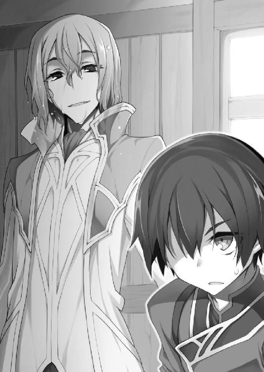
緊迫感のないやり取りだが、思ったことをそのまま口に出してしまうので仕方がない。
「では中和剤と呼ぶことにしましょう」
「賛成です。しかし、中和剤をすでに完成させていたなんて......」
「当然でしょう。解毒剤のない毒薬なんて怖くて持ち歩けませんよ」
「......温泉は毒じゃない」
「見解の相違ですね」
バベルは僕の横を素通りすると、立ち止まることなく部屋を出た。
「ここはいい旅館ですね。気に入りました。近いうちにまた来ますよ」
最後まで落ち着き払った態度を崩さず、バベルは悠々と玄関へ向かう。
彼の余裕が不気味だった。
......バベルは中和剤を持っていた。それなのに、僕に温泉をかけられた彼は中和剤を使わず、自身の企みを包み隠さず打ち明けた。中和剤で無効化すれば、正体も企みも隠し通すことが出来たはずなのに。
お人好しの僕を騙すくらい彼なら訳ないはずなのに、なぜそうしなかったのか。
......これ以上、僕を騙す必要はないということか。
それが何を意味するのか、このときの僕には皆目見当もつかなかった。
「そうか。バベルは帰ったか」
朝食の席でユフィに報告すると、彼女は箸を止めて大きく息を吐き出した。ユフィがここまではっきりと安堵を顔に出すのは珍しい。
バベルが旅館を去った後、僕、ハナ、ユフィ、ミササの四人は大広間で食卓を囲んでいた。食卓に並べられた湯人の伝統料理は、イブスキが古文書を参考にして作ったものだ。
「お吸い物」なる透明なスープを飲みながら、僕はユフィの顔色をうかがいつつ尋ねる。
「ユフィがプロポーズされた男ってバベル様のことだったの？」
「......なぜアリマがそのことを知っている」
眉をひそめたユフィは、ハッとしてハナを睨みつけた。すかさず目を逸らしたハナは、お吸い物をすすり、湯気でメガネを曇らせる。
「......確かに、私はあの男からプロポーズされた」
周囲の注目を一身に浴びたユフィが、諦めたようにため息をつく。
「私にその気がないことは見てわかるだろうに。あの男はそれでもしつこく私につきまとったのだ。私が黙っているのをいいことに、行動はどんどんエスカレートしていき、終いには夜討ち朝駆けまで......」
つまりユフィを夜這いしたってこと？ なんて命知らずな。
思い出して怒りがよみがえったのか。バキバキと箸を握りつぶすユフィ。そんな彼女へ焼き魚を口にくわえたミササが軽口を叩く。
「そんなに不愉快な相手なら斬り殺せば良かったのじゃ」
「ちょっとミササ、それはさすがに物騒――」
「言われずとも、何度斬り殺してやろうと思ったことか！」
ぷるぷると、ユフィは箸を持つ手を怒りに震わせる。何度も思ったんだ......。
「でも帝国ではバベル様は女性に大人気ですよ？ ハンサムで、頭が良くて、お金持ちで、優しくて......バベル様に言い寄られて悪い気はしないと思いますけど」
「確かに外面は悪くない。だが中身は腐り切っている！ あいつは金と権力があれば何でも手に入ると思っているのだ！ あの性根が気に入らない！」
そこまで毛嫌いする相手に言い寄られれば、男性不信にもなるというものだ。結果、ユフィが可愛い女の子を愛好するようになったのも納得......いや、それは単にユフィの趣味か。
「一つ疑問があるんだけど。そんなに嫌いなら、どうしてはっきり言ってやらなかったの？」
「私とて、出来ることなら『お前が嫌いだ、二度と近づくな』ときっぱり言ってやりたかった。だが、バベルの機嫌を損ねることは、ユ国と帝国の関係に悪影響を及ぼしかねない。私のせいで祖国に迷惑はかけられない。私は我慢するしかなかったのだ」
「帝国との関係に悪影響？ バベルが帝国では有名人なのは知っているけど、さすがにそれは大げさじゃない？」
「いいや。大げさでも誇張でもなく、バベルにはそれほどの影響力があるのだ」
「......彼は何者なの？」
僕はハナに尋ねるが、彼女は小首を傾げて、
「それが、私もよくは知らないんです。バベル様の経歴は謎に包まれていて......。たぶん、彼の素性を知っている人はほとんどいないんじゃないでしょうか」
「でも、家が金持ちで権力者なのは間違いないんだろ？ それに、素性のわからない人間が帝国軍の研究所所長になれるはずが......」
「よくわかりませんが、とにかくバベル様は昔から特別扱いされているんです」
どういうことだろう。家が金持ちで権力者なのに、なぜ素性を隠す必要があるのか。謎の天才バベル・バーニャの正体とはいったい何者なのか。
「ユフィは正体を知ってるの？」
「......知っている」
尋ねられたユフィは、折れた箸を放り投げ、重々しくため息をつく。
「だが、剣士の名誉に賭けて他言しないと誓ったのでな。たとえアリマの頼みでも、これだけは教えるわけにはいかない」
普段はちゃらんぽらんな姉だけど、こう見えて彼女はとても義理堅く、意志が強い。一度交わした約束は死んでも守り通すだろう。そんなユフィの口を割らせる方法なんて......。
「ユフィ？ 教えてくれたら、お風呂で背中を流してあげるよ」
「なにっ!!」
僕の提案に、頭を抱えて葛藤するユフィ。あれ？ 冗談のつもりだったんだけどな。
「ぐぐぐ、いや、ダメだ。誘惑には屈しないぞ。これだけは言うわけにはいかない！ 言うわけにはいかないが......ヒントなら教えてやらないこともない」
誘惑に屈したユフィ。どうしよう、今さら冗談とは言い出せない雰囲気だ。
とりあえず、約束を果たすかどうかは後から考えるとして、ヒントを聞くことにしよう。
「ヒントは......。私がバベルと初めて会ったのは、帝国で行われた御前試合の席だ」
その話はバベル本人の口からも聞いた。剣聖ヴェリングラートと戦うユフィを見て一目惚れをしたと彼は言っていた。
「そして、バベルは御前試合に剣士として参加していたわけではない」
それはそうだろう。彼はどう見ても剣の腕が立つようには見えなかった。でも、それがどうしたと言うのか。
カラン。話を聞いていたハナが、持っていた箸を落とした。
驚きのあまり硬直しているハナ。そんなハナの前に置いてある焼き魚に、ミササが「いらないのならもらうのじゃ」と箸を伸ばす。空気読め。
「どうしたの、ハナ？」
「あ、あの、思い出したんです。御前試合は、皇帝陛下の主催で行われたんです」
「そりゃまあ、そうだろうね。皇帝陛下の前で戦うから『御前試合』って言うわけだし」
......帝国の皇帝陛下が、ユフィとヴェリングラートの戦いを見ていた？
僕の頭から血の気が引いていく。
「帝国には、まことしやかに囁かれている噂があるんです」
僕の前で、青ざめた顔のハナが帝国に伝わる噂話を語り出す。
「今の皇帝陛下は、即位前は『放蕩皇子』と呼ばれていて、素性を隠して世界各地を旅していたんです。そのせいか、王宮にいる皇帝陛下は実は影武者で、本物は素性を隠して今も各地を旅しているという噂が......」
僕とハナは顔を見合わせる。ユフィは否定も肯定もせず黙り込んだままだ。
静まりかえる食卓。そんな静寂の中、焼き魚の尻尾を唇の端から垂らしたミササが、いきなり「ふぉふぉふぉ」と声を上げた。
「面白い話じゃ。それが本当ならば、あの男を敵に回すということは」
ゴクリ。ミササは尻尾を飲み込み、不敵に笑う。
「――大陸最強の国家、『帝国』を敵に回すということじゃな」
それから一か月後。
なぜバベルがあっさりと引き下がったか、その理由を僕はようやく理解した。
金と時間を浪費してユ国を裏から支配するよりも、もっと手っ取り早く確実に、温泉とユフィを手に入れる方法があったのだ。
その日、帝国皇帝から遣わされた使者が、ユ国の王に謁見した。
使者が持参した書状は、ユ国に対する宣戦布告だった。
三百年間戦争をしてこなかったユ国に、大陸最強の帝国軍を退ける術はなかった。
第四話 第一次温泉大戦
帝国の宣戦布告を要約すると以下のようになる。
『温泉は大量破壊兵器と成り得る危険な資源である。大陸の平和と安全のため、温泉は公正な第三者機関によって管理されねばならない。だが、温泉を安全に管理するという帝国の提案をユ国の代表は突っぱねた。かくなる上は実力行使で温泉を管理下に置く他ない』
まったくの言いがかりだった。
言いがかりだが、「温泉は戦争の道具に成り得る」という点はバベルから指摘されたことであり、「ユ国の代表が帝国の提案を突っぱねた」というのも紛れもない事実だ。
『ユ国は大量破壊兵器「温泉」を独占しようとしている』
そう言われても仕方のない事実の積み重ねは、確かに存在した。
......僕はユ国を豊かにしたかった。だから温泉を使って国の価値を高めようとした。
だけど僕は単純なことを見落としていたんだ。ユ国が平和でいられたのは、国が無価値だったから。無価値なものには誰も見向きもしない。だけど、価値があるとわかれば、それを欲しがる者が現れるのは当然だった。
建国から三百年。ユ国の歴史において初となる亡国の危機。
それを招いたのは、僕の浅はかさだった。
「降参するしかないっしょ」
ユ国の命運を決める重要な会議の席で、最初に発言したのは国王ドーゴ三世陛下だった。
「帝国軍には勝てないべさ。諦めるしかないっしょ。いや～参った参った」
長方形のテーブル席で、上座に座る陛下が朗らかに笑う。
王宮内に急遽作られた軍議室（今まで戦争とは無縁だったのでそんな部屋はなかった）には、ユ国の政府・軍部を代表する幹部の面々がずらりと顔を揃えていた。......と言っても僕を入れてたったの六人だけど。
列席しているメンバーは、国王であるドーゴ三世陛下。宰相である老婦人ミクニ。ユ国軍司令官である将軍イブスキ。王女であり近衛隊長の肩書きを持つユフィ。国境警備隊隊長の、えーと、名前をど忘れしちゃったけど、とにかく厳めしい顔のおっさん。そして、第一王位継承者である僕も末席に加わっていた。
ちなみにユ国の頭脳とも言うべき宰相ミクニの外見を説明すると「安楽椅子に座って膝に猫を載せながら編み物をする姿がとてもよく似合う優しそうなお婆ちゃん」である。今日の緊急招集でも「あらあら」と微笑みながら最後に入室して、今は日当たりのいい窓際の席でうつらうつらと船を漕いでいた。平和だなあ。
そんな宰相閣下の安眠を妨げるように、イブスキが激しくテーブルを叩く。
「降伏などとんでもありません！ 私は徹底抗戦を主張します！ 帝国に占領されるくらいなら、玉砕覚悟で戦うべきです！」
「玉砕はダメだべさ」
「それくらいの意気込みで戦うということです！」
立ち上がったイブスキが、エプロンのフリルをひらひらと揺らしながら熱弁を振るう。荒々しい口ぶりで徹底抗戦を唱えるイブスキはとても勇ましい。
「......イブスキは、なしてエプロンしてるんだべか？」
「はっ！ 夕食の仕込みをしている最中だったもので」
「そっかあ。ちなみに今晩の献立は何だべさ？」
「はっ！ 裏山でとても食べ甲斐のあるキノコを見つけましたので、白身魚と絡めて蒸し焼きにでもしようかと」
「それは楽しみだべ」
立派な板前に成長したイブスキに、陛下もいたく感心しているご様子だ。
穏健派の国王陛下と武闘派のイブスキが激論を戦わせていると、それまで黙っていた国境警備隊隊長が苦み走った顔で話に割り込んできた。
「陛下！ 将軍！ お願いですから真面目に会議をしてください！」
「オラたちは真面目に会議してるっしょ」
「どこがですか！」
「彼の言う通りです。陛下には緊張感が足りません」
「あなたもです、イブスキ将軍！」
「そんなに怒ったら血圧上がるべさ。落ち着いて～落ち着いて～」
「これが落ち着いていられますか！ すでに帝国軍は国境を越え、王都を目指して進軍しているのですよ！ 戦うのか戦わないのか、早く結論を出してください！」
可哀想に、隊長さんはとても生真面目な性格のようだ。いつもは国境付近の砦（とは名ばかりの山小屋）に常駐しているから、王宮ののんびりした空気に慣れていないんだろうな。「いちいち目くじらを立てていたら体が保たないよ」とアドバイスしてあげたくなる。
でも、隊長さんの危惧はもっともだ。帝国軍の侵攻は予想以上に早く、宣戦布告の翌日には大部隊が国境を越えていた。雀の涙ほどの戦力しかない国境警備隊では為す術もなく、隊長自らが早馬を飛ばして国王陛下の指示を仰ぎに来るほどの危機的状況である。そんな危急存亡のときに、王宮ののんびりした空気を見せつけられたら怒鳴りたくもなるだろう。
気の短い隊長さんのためにも早く結論を出そうと、僕は率先して意見を述べることにした。
「僕も戦わずに降伏することには反対です。帝国の圧政は有名ですし、占領地には重税を課しているという噂もあります。帝国軍の蹂躙を許せばユ国の民は間違いなく不幸になります」
「戦争になって国民が命を落とすよりはましだべさ」
朗らかな声で国王陛下が答える。
「死んだら何にもならないっしょ。圧政でも、生きてさえいれば何とかなるべさ」
民との触れ合いが生き甲斐である国王陛下は、何よりも民の安全を最優先に考えていた。
敵は大陸最強の帝国軍。戦争になればユ国国民が無駄に命を落とすだけだという陛下の考えは、至極もっともだ。
「だからといって無条件降伏は弱腰すぎます。戦争の前にまずは交渉の場を持つべきです。上手く立ち回れば、戦わずに矛を収められるかもしれない」
「甘いですぞ、アリマ殿下！ 帝国のやつらはユ国など簡単に占領できると舐めきっています！ 交渉を有利に進めるためにも、まずは一戦交えてユ国の強さを思い知らせて――」
「一戦交えて、帝国に勝てるのか？」
それまで黙って話を聞いていたユフィが、冷淡な声でイブスキの熱弁を遮った。
「まともにやり合っても惨敗するだけだと思うが」
「そんなことはありません！ こちらには地の利があります。帝国軍を険しい山岳地帯に引き込んで奇襲を仕掛ければ、十分に勝機はあります！」
イブスキがしっかりとした戦術プランを持っていたことに、僕は驚きを隠しきれない。勢いだけで徹底抗戦を叫んでいたわけじゃなかったのか。「将軍」の称号は伊達じゃなかったんだ。最近はエプロン姿ばかり見ていたからすっかり忘れていた。
だが、イブスキの作戦を聞いたユフィは静かに首を振る。
「半端な攻撃は無駄に戦争を長引かせるだけだ。......それよりも、もっといい方法がある」
彼女らしからぬ沈んだ声で、しかしはっきりとユフィは提案する。
「私が帝国皇帝と会って直接交渉する」
悲壮な決意を漂わせるユフィを見て僕はすぐに理解した。
ユフィは自分を犠牲にして国を守るつもりだ。バベルの望みを叶えることで......自分がバベルの慰み者になることで、帝国との戦争を回避するつもりだ。
「それだけは絶対にダメだ！」
気がつくと、僕は立ち上がって叫んでいた。いきなり怒鳴られてユフィが目を丸くしているが、知ったことか。激情の赴くままに僕はユフィの案を全力で否定する。
「ユフィは誰にも渡さない！ ユ国の民も誰一人傷つけさせない！ 僕が帝国軍を退けてみせる！ それなら文句ないだろ！」
大言壮語としか言いようがない僕の宣言に、軍議室が静まりかえった。
惚けた表情でユフィが僕を見つめている。感動に震えながらイブスキが僕を見つめている。名前を思い出せない隊長さんが驚きの目で僕を見つめている。ぽかぽか陽気の陽だまりで宰相ミクニがうたた寝している。
そして、国王陛下が僕に問う。
「どうやって帝国軍を退けるつもりだべさ？」
僕は立ち上がったまま、国王陛下の目を真っ直ぐに見つめ返した。
「僕には、温泉とドラゴンがある」
「いやじゃ。なぜわしが人間のために働かねばならぬのじゃ」
泡立てたタオルで玉の肌を磨きながら、ミササはこれ以上ないくらいきっぱりと僕の頼みを断った。
ここはいつもの露天風呂。僕はミササの真紅の髪をわしゃわしゃと洗いながら猫なで声で懇願する。
「そう言わずに頼むよ。ミササだけが頼りなんだ」
「ふん。甘えた声で頼んでもだめじゃ。戦争なら人間同士で勝手にやればいいのじゃ。人の争いにドラゴンを巻き込むでないわ」
「そこを何とか。ほら、このへんがかゆいんだろ。ぐりぐり」
「お、おおおお！ そこじゃ、そこ。気持ち良いのう。さすがアリマじゃ。洗髪の天才じゃ。テクニシャンじゃ」
「だからさ、いいだろ？」
「いやじゃ」
おおおお、と愉悦の声を上げながら、決して首を縦には振らない強情ドラゴン。
困った。ハナに中和剤を作ってもらい、本来の姿に――竜王ラドンに戻って帝国軍を蹴散らしてもらう作戦だったのに、僕の計画はいきなり暗礁に乗り上げてしまった。
「勘違いしているようじゃから言っておくがの。わしがここで仲居をしているのは単なる気まぐれで、お主らの仲間になったわけではない。ましてや人間に使われるなど、ドラゴンの誇りが許さぬわ」
「ドラゴンをこき使おうなんて思ってないよ。僕はただ、助けて欲しいだけで......」
「お断りじゃ」
「そう言わずに頼むよ。助けてくれたら、ミササの言うことを何でも聞くから」
「何でも？」
泡だらけの髪で振り返ったミササが、犬歯をむき出しにして「ニヤリ」と笑う。
「そうじゃな......。わしは一度、人間の肉を食べてみたかったのじゃ。最近、お主がとみに美味そうに思えてのう。アリマを食べてもいいのなら、考えてやっても良いぞ」
「僕を、食べる......？」
レッドドラゴンの姿に戻ったミササが、鋭い牙でバリバリと僕の体を、肉を、骨をかみ砕く様を想像する。内臓をまき散らし、手足があらぬ方向に曲がり、血まみれになりながらドラゴンの牙でかみ砕かれる......。想像しただけで怖気立つけど、だとしても僕一人の命で国を救えるのなら悪い取引ではない。
僕に命を捨てる覚悟があれば、ユ国を救える。僕に覚悟があれば――。
「......冗談じゃ。本気にするな、馬鹿者が」
不敵な笑みから一変、不機嫌そうに頬を膨らませるミササ。
「何でもかんでも真に受けおって。冗談の通じないつまらない男じゃ」
「......ごめん」
「謝るな、馬鹿者が！」
うがー、と犬歯をむき出しにしてミササが怒鳴る。冗談を言ってからかったのはそっちのくせに、身勝手なドラゴンだ。
ミササの言動に呆れていると、背後から白い腕が音もなく僕の胸に滑り込んできた。何者かに背後から抱きつかれ、背中にとても柔らかな肉の感触が押しつけられる。むにゅ。
「安心しろ、アリマ。そんなお子様に頼らずとも、私がお前を守ってやる」
「ユフィ!?」
背後から僕の胸を抱きしめ、すべすべの肌を密着させているのは、裸のユフィだった。ということは、背中に当たっているこの水風船のような感触は......。
「何やってるんだよ！ それに、いつからここに？ 全然気配を感じなかったけど」
「ふっ、私ほどの剣士になれば気配を絶つなどたやすいこと。これは、姉との入浴を嫌がるアリマと混浴するために編み出した特殊技能だ」
「無駄な技能だ！」
僕はジタバタもがくが、ブラコン姉はしがみついたまま離れようとしない。それどころか、さわさわと僕の体を撫で回し、豊かな胸をぐいぐいと押しつけてきて、さしもの僕も理性が飛びそうになる。
「そんなに恥ずかしがるな。こうやって姉弟水入らずで過ごせるのもあとわずかだ。今のうちに思う存分姉に甘えておけ」
「『これでお別れ』みたいなこと言うな！ たとえ帝国が攻めてきても、ユフィを一人きりになんて絶対しないからな！」
「アリマ......そんなにも私を思ってくれていたのか。わかった、正直に打ち明けよう。私はアリマが大好きだ！」
「知ってるよ！ いいから離れろ！」
「騒がしいやつらじゃ......。アリマよ、手が止まっておるぞ。さっさとわしの髪を洗え」
僕の手を掴み、引っ張るミササ。本性がドラゴンだけあってとんでもない怪力だ。非力な僕は抗うことも出来ず、ユフィに抱きつかれたまま幼女に密着させられた。
全身泡だらけな裸のミササと、ぐいぐい胸を押しつけてくる裸のユフィに、密着サンドイッチされる僕。まずいって。これは本気でまずいって。すべすべの肌で前と後ろをこすられながら、僕は顔を真っ赤にして懇願する。頼むから二人とも離れてくれ！
僕が身悶えしていると、脱衣所の方向からペタペタと足音が聞こえてきた。
「ユフィさん？ どこにいるんですか？」
現れたのは、入浴スタイルの――ようするに素っ裸のハナだった。
どうしてこのタイミングで!? 心の中で叫びつつ、美女と幼女にサンドイッチされたまま僕は硬直する。メガネを外しているハナは周囲がよく見えないのか、湯気の中を手探りで歩いていた。
「ユフィさん？......おかしいなあ。お風呂場から声がしたと思った......の、に......？」
男女三人の塊に気づいたのか、ハナが湯気の中で目を細める。眉間にしわを寄せた顔は怒っているようにも見えるが、きっと目を凝らしているだけだろう。その証拠に、目の前の塊が何なのかわからないハナは、裸のまま無防備に僕のそばへと近づいてきた。
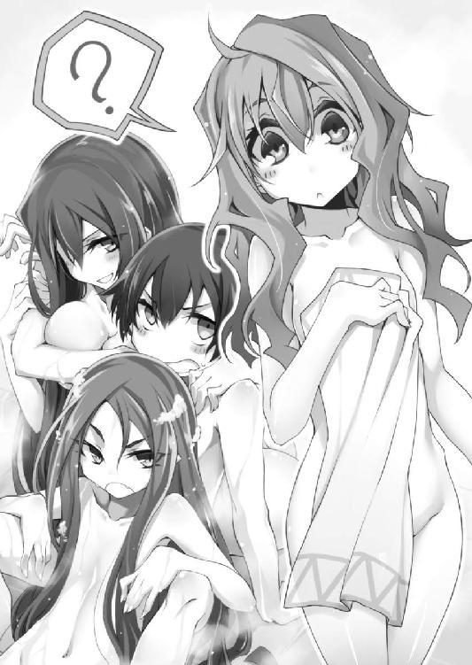
ダメだよハナ。前を隠して。それ以上近づかないで！ いろんな意味で追い詰められている僕の眼前に、眉間にしわを寄せたハナの顔が迫る。吐息が掛かりそうなほど顔が近い。
「......？」
「や、やあ。こんにちは」
「！」
僕の声にビクンと身を縮めるハナ。あわてて脱衣所へ駆け戻ると、裸のままメガネをかけて戻って来た。そうして、ユフィとミササに挟まれた僕をまじまじと見て......。
「きゃ――――っ!!」
「ギャ――――ッ!!」
なぜか負けじと悲鳴を上げてしまう僕だった。
かぽーん。
大騒ぎから一転。静まりかえった露天風呂で、僕は肩までお湯に浸かって身も心も温まっていた。普段なら「極楽極楽」と言いながらくつろぐところだけど......。
右隣を見ると、見事なプロポーションを惜しげもなくさらしたユフィが気持ち良さそうに湯船に浸かっている。ユフィは僕の視線に気づくと、
「どうした。そんなに私の裸が見たいのか？」
妖しく微笑みながら言うので、僕は慌てて左隣に視線を移した。
左隣には、僕に背中を向けて恥ずかしそうに体を隠すハナがいた。
ユフィの「裸が見たいのか」発言が聞こえていたのだろう。ハナは僕の視線に気づくと「あの、その」とへどもどになり、顔を真っ赤にしてうつむいてしまった。
「両手に花じゃのう」
まだ石けんで体を洗っているミササが、泡を洗い流しながらニヤつく。
ミササの言う通り、僕は左右に美女と美少女をはべらせていた。
変態のユフィはともかく、乙女のハナは恥ずかしがって逃げ出しそうなものだが、どういうわけか女二人にサンドイッチされていた僕を見て「わ、私も混浴します！」と真っ赤な顔でムキになり、現在の状況である。
「目のやり場に困る......」
美女二人に挟まれた僕は、逃げることも出来ず、ひたすらに下を向く。そうやって左右の裸体を視界から外そうと努力していると、バシャバシャと水音を立てて、体を洗い終わったミササが僕の前に立った。
にんまりと不敵に笑うミササは、僕に背を向けて太ももの間に腰を下ろす。こうやって僕を背もたれ代わりにして湯船に入るのが、ミササお得意の入浴スタイルだ。
が、そんなこととは微塵も知らない左右の女性陣から「なにっ!?」「えっ!?」と同時に声が上がった。
「待て、ミササ！ そこで何をしている！」
「何を驚いておるのじゃ？ ここはわしの指定席じゃ。のう、アリマよ」
「うん、まあ......」
「だ、ダメです！ 離れてください！」
「くっ！ ミササがそこに座るというなら、私はアリマの膝の上だ！」
水しぶきを上げて僕に飛びかかるユフィ。慌てる僕の前でミササがユフィの顔を片手で鷲掴み、そのまま水面に叩きつけた。ミササの怪力で頭を押さえつけられたユフィが、水中でジタバタもがく。
次の瞬間、ユフィは水中でミササの胴に腕を回し、力任せに持ち上げた。水中から引っこ抜かれたミササの小柄な体が、投げ飛ばされて水面に叩きつけられる。ざっぱーん。
はぁはぁと息を切らすユフィと、真紅の髪を揺らしながら立ち上がったミササが睨み合う。
「いい機会だ。貴様とはいつか決着をつけねばと思っていた」
「面白い。わしに丸焼きにされたことを忘れたか」
力のミササと技のユフィが全裸で取っ組み合いの喧嘩を始める。目のやり場に困った僕は、ぎゃあぎゃあ騒ぐ声とばしゃばしゃ跳ねる水音を「聞こえない」と思い込むことにした。聞こえない、なーんにも聞こえない。
「あ、あの......アリマ？」
美女と幼女が争う間に、残った美少女がそっと肌を寄せてきた。他の二人と違い、人並みの恥じらいを持つハナは、赤面しながら肩と肩を密着させる。彼女の恥ずかしさが伝播したのか、僕も赤面しながら、寄りかかるハナの重みを受け止めた。
「......本当に、帝国と戦うつもりですか？」
肩と肩が触れあったまま、ハナが心配そうな目で僕を見つめる。
恥ずかしがっている場合じゃない。僕は、ちゃんと答えなければいけないと思った。
「うん。戦うよ。そうしないと国を守れないからね」
「守れなくてもいいじゃないですか。ユ国がなくなっても、アリマが生きていれば......」
「ハナはユ国の人間じゃないから、そんな風に言えるんだ」
つい口調がきつくなり、ハナはバツが悪そうに黙り込む。僕は愛国心とも故郷への執着とも異なる自分の感情を、どう説明すればわかってもらえるかと頭を悩ませる。
「僕は、この国が好きなんだ。平和で、のんびりしていて、温泉が気持ち良くて、何でもない日常やくだらない出来事が楽しくて......。僕はそういう国に生まれたんだ」
王子として生まれ、父の人望を羨み、姉の武勇を妬み、無能な自分は国のために何が出来るかと必死に考えて行動してきた。
「馬鹿馬鹿しいくらい平和でのんびりとしたこの国が、僕は大好きなんだ。そんな笑顔の絶えない国の王様になることが僕の夢なんだ。......そうだ、ユ国は僕の夢だ。だから、僕はこの国を失いたくない。僕は、大好きなこの国を守りたいんだ」
「......わかります。すごく良くわかります。私も、この国が好きだから」
僕の目を見ながら、ハナが優しく微笑む。
「わかりました。私も手伝います。私も、アリマと一緒に戦います」
水中でハナが僕の手をそっと握った。僕はハナの言葉に内心で喜び、だけど表情には一切出さずに首を横に振る。
「ダメだよ。ハナは帝国の人間じゃないか。僕たちに協力したとばれたら、二度と故郷に帰れなくなる」
「そのときは、この国を私の故郷にします」
何の邪心もなく、とても魅力的に、ハナが微笑む。
「私は、温泉と、ユ国と、アリマが大好きですから」
僕はハナから目を逸らすと、タオルで顔を拭くふりをして目尻に浮かぶ涙をぬぐった。嬉しくて泣きそうになったことを悟られないように、何でもない顔を装いながら、
「......じゃあ、手伝ってくれる？」
「はい、喜んで」
「......ありがとう」
水中で手を握ったまま、僕たちは肩を触れあわせる。ハナの顔が僕の鼻先にあって、見つめ合ううちに自然と二人の距離が近づいて、僕たちは少しずつ顔を寄せ合って――。
「ほほう、抜け駆けとは良い度胸じゃ」
気がつくと、僕の背後でミササとユフィが仁王立ちしていた。
あれ？ 二人とも喧嘩してたんじゃなかったの？ ぎくしゃくと振り返った僕の顔を、ユフィが両手でがっちりと挟み、押さえつける。
「アリマ。もちろん私も手伝うからな。アリマのために、帝国兵の千や二千は軽く蹴散らしてやろう」
「どうして対抗心燃やしてるの？ それに一人で千人相手は無理じゃない？」
「わしも気が変わったのじゃ。アリマのために、帝国兵の一万や二万は軽く蹴散らしてやるのじゃ」
「なんだと！ ならば私は帝国兵十万を蹴散らしてやる！」
「ならわしは百万じゃ！」
「だから何で対抗心燃やしてるの？」
にらみ合い火花を散らすユフィとミササ、それを見てくすくすと笑うハナ。国の存亡を賭けた一戦が始まろうとしているのに、ユ国が誇る天然温泉は今日も平和だった。
「問題は、帝国軍とどう戦えばいいかだ」
風呂から上がった僕たち四人は、軍議室に場所を移して今後の方針を練ることにした。ユフィとミササの協力はありがたいけど、さすがに一人で千人を相手にするのは非現実的だ。僕たちには、大陸最強の帝国軍を退ける現実的な作戦が必要だった。
長方形のテーブル席には、上座の僕から見て左手にユフィが、右手にミササとハナが座っている。最初に発言したのは、メイド服姿で余裕たっぷりに笑うミササだった。
「わしに任せるが良い。ドラゴンの姿に戻れば、人間ごときが何人束になろうと敵ではないわ。ふぉふぉふぉ」
自信たっぷりのミササがやる気をのぞかせる。物騒な台詞も、十歳の女の子が八重歯を見せながら言うととても可愛い。
「ミササが活躍してくれると助かるけど......。中和剤はすぐに出来そうかな？」
「すみません。完成まで早くてもあと数日はかかるかと」
申し訳なさそうに恐縮するハナ。だけど彼女を責めるのは筋違いだ。ハナが寝る間も惜しんで調合に取り組んでいることは、ここにいる誰もが知っていた。
「そう気に病むでないわ。中和剤に頼らなくとも、わしをドラゴンに戻す方法はある。わしに極上の焼き魚を馳走するのじゃ。さすればわしは喜びに血湧き肉躍り、本来の姿へと戻るじゃろう！」
「ふざけているのか？」
ユフィが対面に座るミササを冷たい目で睨みつける。
ユフィはその場にいなかったから知らないのも当然だけど、実際にミササは鮎の塩焼きを食べて尻尾を生やしたことがある。つまり、ミササは興奮すれば一時的にドラゴンの姿に戻れるのだ。......が、
「焼き魚を食べてもせいぜい尻尾が生える程度だよね？ それだとあまり意味がないんじゃないか？」
「いいえ、可能性はあります。ドラゴンは興奮すればするほど魔法への耐性が上がりますから。焼き魚のときよりももっと激しく興奮すれば......」
「ほほう、なるほどのう。もっと興奮する手段を考えねばならぬか......。アリマよ、試しにわしと接吻でもしてみるか？」
冗談めかして言うミササと、腰の剣に手を当てて立ち上がるユフィ。ミササの隣に座っているハナが、ユフィの殺気に当てられて「ひっ」と悲鳴を上げる。
「ユフィ、落ち着いて。ミササも、冗談はいいから本気で考えてよ」
「む......割と本気だったのじゃが......」
「とにかく、ミササだけに頼るのは不確定要素が多すぎる。ここは、ドラゴンの力に頼らない方法も考えておくべきだと思うんだ」
わざとミササのつぶやきを遮りながら、僕は現実へと話を戻す。
現実問題として、今度の戦はただ勝てばいいわけではない。中途半端な勝ち方をしたら、怒った帝国は大国の威信にかけて全力で再戦を挑んでくるだろう。それではダメなのだ。
僕たちの理想は「帝国を怒らせずにユ国侵攻を諦めさせる」ことだ。そのためには「どういう勝ち方をすればいいか」まで考えて戦わなければならない。
「僕たちが帝国軍を圧倒して『こいつらには簡単には勝てない』と強く印象づけられれば、帝国もうかつには攻めて来なくなると思うけど......」
「問題は、ドラゴン抜きでどうやって帝国軍を圧倒するかだな」
おそらく帝国軍は数千人規模の兵力で攻めてくるだろう。対するユ国軍の戦力は戦闘経験のない兵士が数百人。どう考えても圧倒されるのはこちらの方だ。
「国民に呼びかけて志願兵を募ってみたらどうかな？ 多少は戦力差が埋まると思うけど」
「焼け石に水だな。武器の扱い方も知らないユ国の民と、百戦錬磨の帝国軍精鋭部隊とでは、戦闘能力に差がありすぎる。義勇軍では相手になるまい」
「そこは訓練して鍛えれば何とか......」
「たかだか数日訓練した程度で強くなれるなら苦労はない」
ユフィの答えはいちいちもっともだ。手っ取り早く強くなる方法なんてあるわけが......。
「あの、いいですか？」
ハナが恐る恐る手を上げる。戦争とは一番縁遠そうなハナが挙手したことに、僕は素直に驚いた。
「二つほど、思いついた作戦があるんですが......」
そうしてハナは一つ目の作戦を語り出す。それは、素人同然の義勇兵を帝国軍の精鋭部隊と渡り合えるようにする方法だった。
ハナの説明を聞いた僕は、「その手があったか」と素直に感心する。たしかにその方法なら簡単に戦力を底上げすることが出来る。
「それで、もう一つのアイデアというのは？」
「はい。ご存じだと思いますが、帝国軍の主力は騎馬兵です」
戦場を縦横無尽に駆け抜ける無敵の騎馬隊――その強さは平和なユ国にも轟いている。無敵の騎馬隊は、最強を謳う帝国軍の代名詞的存在だ。
「ですから、敵の騎馬兵を全滅させれば、士気を挫くことが出来るんじゃないかと......」
なるほど。騎馬隊は帝国軍の精神的支柱だ。それが全滅したら、帝国軍は総崩れにもなりかねない。悪くない考えだが、問題は――。
「どうやって無敵の騎馬隊を殲滅するの？ 戦闘経験ゼロのユ国軍がまともにやりあって勝てるとは思えないけど」
「だったら、まともにやりあわなければいいんです」
そうしてハナは、二つ目のアイデアを僕たちに語って聞かせた。
最初は無茶だと思っていた僕たちも、話を聞くにつれて「これはやってみる価値があるんじゃないか」と考えを改める。奇想ではあるけれど、それだけに成功したら相手に与える衝撃は絶大だ。
ハナがすべての作戦を語り終え、僕は無言で考え込む。これらの作戦は実現可能か。実現させるためには何をしなければいけないか。メリットとリスクを勘案して......。
「――その作戦でいこう」
僕の一声で作戦は決した。
作戦会議の翌朝。さっそく僕は温泉旅館の庭に王宮守備隊を集め、作戦の説明を行った。
将軍のイブスキや国境警備隊の隊長を含めた守備隊の数は、およそ五〇人。帝国との戦いでは中心的役割を果たすであろう彼らに、僕は朗々と策を伝える。
「みなさんには、空から帝国軍を攻撃してもらいます」
僕の言葉に、イブスキを除いた守備隊の面々が一斉にざわつく。僕の言葉にもまるで動じないイブスキはさすがだ。この数ヶ月でかなり心が鍛えられたのだろう。ざわつく一同を代表して発言したのは、先の軍議にも参加していた国境警備隊隊長だった。
「空からとはどういうことですか？ 我々に空を飛べとでも言うのですか？」
「そうです」
うなずいた僕は列席していた国王陛下、ミササ、ユフィ、ハナの顔を順に眺める。僕と目があったハナは、緊張した面持ちで茶色い小瓶を取り出した。
透明な液体が入った瓶を見て、隊長は怪訝そうに目を細める。
「それは何ですか？」
「これは温泉です」
「オンセン？」
そうか。彼はずっと辺境にいたから、マグマで熱せられた地下水を「温泉」と呼ぶようになったことを知らないんだ。僕は温泉について説明しようとするが、それよりも早くハナが解説を始めた。
「この瓶に入っている温泉には、蟻をペガサスに変える効能があります。これでペガサスを作れば帝国軍を空から攻撃できるようになります」
温泉のこととなると饒舌になるハナが淀みなく説明する。だが隊長は「こいつ何言ってるんだ」という疑心暗鬼の眼差しで彼女を見ていた。まあ、気持ちはわからなくもない。
温泉の効能は、口で説明するより実際に見てもらった方が理解は早い。ハナは準備しておいた茶色い小瓶と紙の袋を取り出すと、隊長に歩み寄った。
「こ、これを持ってください」
人見知りのハナが、小瓶と袋をおずおずと手渡す。紙の袋にはあらかじめ捕まえておいた蟻が入っているはずだ。袋の中身を覗いた隊長は意図を理解したようで、
「......これにお湯をかけるのですか？」
「はい」
ハナがうなずき、隊長は「ばかばかしい」と言わんばかりの呆れ顔で、瓶のお湯を袋へと注ぎ込んだ。
バリバリバリ！ ヒヒーン！
紙の袋を突き破って、雄々しい天馬が出現した。隊長が「ひいいい」と奇声を上げて腰を抜かすが、そんなことはお構いなしに純白のペガサスは翼をはためかせ、上空へと舞い上がる。守備隊の間からどよめきが上がり、それはすぐに歓声へと変わった。
「帝国との戦闘が始まるまでに、みなさんにはペガサスを乗りこなせるようになってもらいます。......いいですね？」
僕の呼びかけに、隊長は腰を抜かしたまま何度もうなずいた。
「あとは私に任せろ」
ペガサスに乗って空を飛んだ経験のあるユフィが僕の後を引き継ぐ。ここから先は実践あるのみだ。僕は守備隊の乗馬指導をユフィに一任すると、馬のいななきや翼の羽音や「落ちるー」といった悲鳴や「ぎゃふん」という地面に叩きつけられた音を聞き流しながら、居並ぶハナたちに声をかけた。
「ハナは中和剤の完成を急いでくれ」
「わかりました」
ミササが竜王ラドンの姿に戻れれば戦局は決する。事の重大さがわかっているハナは、中和剤の調合を任されて真剣な顔でうなずいた。
「ミササは僕と一緒に温泉研究所へ。それから、陛下にもお願いがあります」
テキパキと指示を出す僕は、成り行きを見守っていた国王陛下にも無遠慮に頼み事をする。
「陛下の人脈で町中の水筒を集めてください」
「水筒、だべか？ それは構わないけんど......」
詳しい作戦内容を聞かされていない陛下が、怪訝そうな顔で僕を見る。頼りない陛下だけど、民からの信望は誰よりも厚い。陛下が一声かけるだけで多くの者が協力するだろう。
「ありがとうございます。では、私はこれで」
やらなければいけないことは山ほどある。僕は陛下に一礼すると、自分の職責を果たすべく駆け出そうとして......。
「アリマ、待つべさ」
そんな僕を、国王陛下が呼び止めた。振り返ると、いつになく真面目な面持ちの陛下が僕を見つめている。
「......アリマ。本気で帝国とやりあうつもりだべか？」
「やります。僕が帝国軍を蹴散らしてみせます」
嘘も貫き通せば真実になる。僕は虚勢を張ることで、願望を真実に変えようとしていた。
「......んだな。男が一度決めたことだべ。今さら後には引けないべさ」
きっと陛下は、僕の行動を無謀だと思っているのだろう。陛下の表情が、我が子を心配する父の顔になっていることに、僕はあえて気づかないフリをした。
「子供だと思ってたけんど、アリマもいつの間にか立派な男になってたんだなあ。......だども、アリマを一人前の男だと認めるからこそ、言っておきたいことがあるべさ」
いつものんびりしている陛下が、いつになく真剣な声で僕に語る。
「......ハナはいい子かもしんねえ。だども、あの子は帝国の人間だ。敵国の人間だ」
それはまるでハナが敵だと言っているかのようだった。まさか、陛下はハナを信用するなと言いたいのか？ ハナが僕を裏切ると思っているのか？
反発しようとする僕の機先を制するように、陛下は険しい表情で言葉を続ける。
「それに、ミササは人間でねえ。あの子はドラゴンだべさ。しかも見た目はお子様だ。いくら何でもこれはないっしょ」
ん？ なんだか話の風向きが変だぞ。陛下は何が言いたいんだ？
「ユフィに至っては血を分けた実の姉だべさ！ それだけは......それだけは絶対に認められないっしょ！」
「えーと、何の話ですか？」
「しらばっくれてもダメだべさ！ 話は全部イブスキから聞いただ！ アリマがハナ・ミササ・ユフィの女三人を取っ替え引っ替えしながら――時には三人まとめて――一緒に露天風呂に入っていちゃいちゃきゃっきゃうふふしてることは王様の耳に筒抜けだべさ！」
「ちょっとイブスキと話してきます」
鬼の形相で駆けだそうとする僕の手を、陛下ががっちりと掴む。
「アリマは未来の王様だ。ユ国繁栄のためにも跡取りを作ることは大切だべさ。だども、幼女なドラゴンや実の姉はさすがにマズイべさ！ 人として！」
「勘違いです！ 確かに一緒に風呂には入りましたが、やましいことは何もありません！」
「一緒に風呂には入ったけんど、手は出してないって言うんだべか？」
「そうです。彼女たちとはそういう関係じゃありません」
「はぁ～、情けない。あんな美人たちの裸を見てもケダモノにならないなんて、それは男として問題あるんでねえか？」
「うるさいよ！ 誰に手を出そうが、そんなの僕の勝手だろ！」
「だども、オラにとっても孫が出来るかどうかの一大事だべさ。親としては、息子には頑張ってもらわないと――」
「もういいから、父さんは黙ってろよ！」
敬語を忘れて大声で言い放つと、父さんは驚いた顔をしてから、なぜかにんまりと笑った。
ぽんぽんと、父さんが無造作に僕の頭を撫でる。日々の農作業のせいか、頭に載せられた手は岩のようにごつごつしていた。
「久しぶりにオラのことを父さんって言ってくれたべさ」
「そ、それは、父さんが変なことを言うから......」
「それでいいんだ。アリマはオラの息子だ。それだけは忘れねえでけろ」
朗らかな中に暖かみを感じさせる父さんの声。この声と、この手に、僕は育てられた。
「アリマはユ国の宝だ。だども、それ以上にアリマはオラの宝だ。それだけはしっかり覚えておいてけろ」
「......言われなくてもわかってるよ」
敬語を忘れて悪態をつくドラ息子の僕。そんな僕の馴れ馴れしさが嬉しいのか、父さんは岩のように堅い手でぐりぐりと僕の頭を撫で回した。
「親より先に死んだりしたら許さねぇからな」
きっと父さんは、その一言を言いたかったんだ。戦争が始まる前に、それだけは伝えておきたかったんだ。
だから僕は、尊称も敬語も忘れて悪態をつく。
「そんなこと、父さんに言われなくてもわかってるよ」
父さんは朗らかに笑いながら、僕の頭をぐしゃぐしゃと撫で回した。
守備隊がペガサスと悪戦苦闘を始めてから一週間が経過した。
斥候の報告では、帝国軍は途中にある村（と言っても火山帯で人が暮らすには過酷な土地ばかりだ）を占領しながら、最短ルートで王都へ向かっているらしい。
とはいえ、険しい山々に囲まれたユ国は大軍で移動するのに向いていない。王都へ到達するにはいくつもの山を越えねばならず、その頃には疲労もかなりのものになるはずだ。
ユ国の奥地へ誘い込み、疲労がピークに達したところで一気に叩く。それがこちらの狙いだった。
こちらにとって嬉しい誤算だったのは、国王陛下の呼びかけで思っていた以上に義勇軍が集まったことだ。戦闘経験ゼロの志願兵でも、ハナが提案した作戦を使えば大きな戦力になる。義勇軍の人数は戦局を左右する要因になるのだ。
戦の準備を整えた僕たちは、中和剤作りに専念するハナを都に残して、義勇兵を含めた総勢七〇〇人弱の全軍で王都を出発する。対騎馬用の「奥の手」を詰め込んだ荷馬車を従え、険しい山道を五日かけて走破した僕たちは、ついに決戦の地に到着した。
そこは深い森に挟まれた細い山道。伏兵にとっては、長く伸びた敵の隊列を側面から襲撃するのに絶好の地形だった。
敵に見つからないよう、僕たちは細心の注意を払って山中に陣を張る。こちらは地の利を生かした奇襲攻撃に勝負を賭けるしかない。隠密に隠密を重ねた僕たちは、森の奧で息を潜め、敵軍の到着を今や遅しと待ち構えた――。
「アリマ殿下。偵察隊からの報告です」
国境警備隊隊長が、名目上の指揮官である僕に報告する。
「帝国軍は総勢四〇〇〇。布陣は、騎馬一〇〇〇、歩兵と弓兵が合わせて三〇〇〇。騎馬隊を前衛に配置して、まっすぐこちらへ向かっています」
「騎馬隊が先鋒か」
報告を聞いた僕の心臓が、緊張できゅっと締め付けられる。
帝国軍が誇る騎馬隊の実力は天下に轟いている。邪魔する者は蹴散らし、なぎ倒し、蹂躙する。通った後には草一本残らない、一騎当千の殺戮部隊。まともにぶつかれば、義勇兵中心のにわか軍隊など束になっても勝ち目はない。
だからこそ、
「チャンスだ。これなら騎馬兵を集中攻撃できる。上手くいけば一気に敵の戦意を挫けるかもしれない」
努めて楽観的観測を口にする僕に、国境警備隊隊長は苦々しい顔で黙り込む。そりゃそうだ。こちらは有象無象の寄せ集めで構成された素人兵七〇〇。帝国軍の精鋭四〇〇〇と戦うなんて正気の沙汰とは思えない。
それでも僕には勝算があった。最強の騎馬隊に頼った布陣こそ、僕たちの活路だ。
「予定通り、イブスキは先鋒を頼む」
「お任せください」
イブスキはうなずき、自分の率いる部隊へと戻ろうとする。
すると、それまで黙っていたミササがイブスキに歩み寄った。イブスキと目が合い、背の低いミササは彼を見上げながら不敵に笑う。
「死ぬでないぞ。お主がどうなろうと構わぬが、お主の作る絶品焼き魚が食えなくなるのは困るからのう」
「うむ。肝に銘じよう」
ミササの悪態に、イブスキは真顔で答える。生真面目なイブスキらしい返答だった。
ミササの激励（？）を受けたイブスキは、いつも以上に力強い足取りで自分の部隊へと戻っていく。頼りがいのある老将軍を見送った僕は、高まる興奮を抑え込み、傍らのユフィへ努めて冷静に声をかけた。
「イブスキの先制攻撃後、ユフィとミササは義勇軍を率いて突入だ。大暴れをよろしく」
「了解した。私のあまりの強さに帝国軍は尻尾を巻いて逃げ出すことだろう」
「右に同じじゃ。本来の姿になれずとも、人間ごときに遅れは取らぬ」
頼もしすぎる二人のビッグマウスに、僕は自然と笑みがこぼれてしまった。
人事は尽くした。後は天命を待つのみ。すべての準備を整えた僕たちは、息苦しいほどの緊張感の中、森の奥に身を伏せて息を潜め――。
――ドドドドド。
やがて、地鳴りのような轟音が遠くから聞こえてきた。
見つからないよう草木の隙間から山道を覗き見た僕は、思わず言葉を失う。
圧巻だった。圧倒的だった。
突進しているわけではない。武器を構えているわけでもない。ただ馬に乗って歩いているだけなのに、一千騎の軍馬が整然と進む様はそれだけで心胆を寒からしめる威容だった。
......本当に勝てるのか？
僕の心に一抹の不安がよぎる。
たかが千騎。そう自分に言い聞かせてきた僕は、山道を埋め尽くす軍馬の迫力に我知らず身震いしていた。想像以上......いや、想像を遥かに超える本物の凄みに、僕は手の震えを抑えきれない。
......そんな僕の震える手を、傍らのユフィがそっと握った。
「アリマ」
ユフィが力強くうなずき、そばにいたミササが八重歯を見せて不敵に笑う。
二人が僕を信じてくれている。
たったそれだけで、僕の震えは収まった。僕にはユフィが、ミササが、イブスキが、それにハナがついている。そう思うだけで何でも出来るような気がした。
「絶対に勝つぞ」
自然と口から出た言葉は、自分でも驚くほど落ち着き払っていた。
――決戦の時は来た。
先手を取ったのはユ国軍だった。
森に潜んでいた三〇〇騎ほどの白馬が、合図を受けて一斉に大空へと舞い上がる。山道を進軍していた帝国軍は、頭上に出現した空飛ぶ白馬の集団――ペガサス部隊の勇姿にどよめき、足を止めた。
ペガサス部隊の先陣を切るのは勇将イブスキだ。指揮官が良いのか、それとも兵が優秀なのか。短い訓練期間にもかかわらず、ユ国兵は見事にペガサスを乗りこなしていた。
「目標、帝国軍騎馬隊！ 突撃ー！」
はるか上空でイブスキが号令をかけ、三〇〇の天馬が揃って急降下を始める。予想だにしなかった空からの奇襲に、帝国軍は完全に浮き足立っていた。
急降下で帝国軍に肉薄するペガサス部隊。先頭を走るイブスキは手綱を握りながら、腰に下げた革袋を手に取った。
それは、僕がこの日のために用意した秘策。町中からかき集めた大量の水筒にお湯を詰め、ペガサス部隊全員に持たせたもの。
イブスキの号令一下、ペガサス部隊は温泉がたっぷり詰まった水筒を開放する。空から雨のように温泉が降り注ぎ、帝国軍が誇る最強無敵の騎馬隊は一瞬にして――
騎マグロ隊になった。
マグロにまたがっている帝国兵から「ぎゃあああ」とか「いやあああ」とか「まぐろおおお」とか奇怪な悲鳴が巻き起こる。そりゃそうだ。自慢の愛馬がいきなりマグロになったら悲鳴の一つもあげたくなるだろう。
思惑通り大混乱に陥る帝国軍。ペガサス部隊は空からの弓攻撃に切り替え、茂みに隠れていたユフィがここぞとばかりに檄を飛ばす。
「一気に畳みかけるぞ！ 総員、戦闘準備！」
ユフィの合図を受け、森に潜んでいた義勇軍――武器の扱いに慣れていない農民たちが、腰に下げていた水筒の蓋を一斉に開ける。野良仕事で鍛えた屈強な体に、男たちは水筒の水をぶちまけた。そして、男たちの頭に――。
ぴょこん、と猫耳が生えた。
「私につづけ！ 突撃ー！」
「にゃああああああああああ!!」
野太い声でにゃんにゃん雄叫びを上げながら、筋骨隆々の猫耳男たちが帝国軍に殺到する。猫人間と化したことで腕力と瞬発力が強化された猫耳男たちは、身体能力に物を言わせて帝国軍の陣形を分断。混乱する帝国兵をにゃあにゃあと追い込んでいった。
空からは天駆けるペガサス部隊による一方的な弓矢攻撃。地上では天才剣士ユフィ率いる猫耳野郎どもの奇襲攻撃。そして無数のマグロ。無敵の帝国軍は今や半狂乱状態だ。
「う......うう......」
森に隠れていた僕の耳に、すぐ近くからうめき声が聞こえてきた。見れば、ユフィと一緒に突撃するはずだったミササが、苦しそうに胸をかきむしっている。
「ミササ？ どうしたの？」
心配して声をかけるが、ミササはそんな僕を「近づくな」とばかりに突き飛ばす。
「ダメじゃ......」
胸を押さえ、苦悶に顔を歪め、野性の本能に突き動かされるかのように鋭い犬歯をむき出しにするミササ。いったいどうしたんだ！
「......し、し、辛抱たまら―――ん!!」
絶叫と同時に、ミササの真紅の髪が燃えさかる火柱になった。全身から紅蓮の炎が吹き上がり、少女の体が灼熱に飲み込まれる。彼女の服を、髪を、皮膚を、纏う空気さえも一瞬で焼き尽くす異常な熱気に、僕は近づくことすらままならない。
「グオオオオオ!!」
ミササの口から咆哮が弾ける。焼けた皮膚が瞬く間に赤銅色の鱗へと変わる。細い腕が、華奢な足が、小さな顔が、ボコボコと粟立つように膨らんでいく。
紅蓮の熱気が渦を巻き、烈火の中から現れ出でたのは――巨大なレッドドラゴン！
『グオオオオオ!!』
轟く咆哮が天地を震わせ、両軍入り乱れる戦場を一瞬にして膠着させる。突如出現した異形に誰もが目を奪われる中、竜王ラドンは真紅の翼を広げ、熱風とともに空へと舞い上がった。
何だ？ 何が起こっているんだ？ 中和剤もないのに、どうしてミササはいきなりドラゴンの姿に戻ったんだ？ いったい何がミササをそこまで興奮させたんだ!?
困惑する僕が見ている前で、ミササは戦場へと荒々しく着地。逃げ惑う兵士たちを気にも留めず、鋭い牙をむき出しにする。ゴウ、と嵐のような唸りとともに、ドラゴンは焼け付く炎を口から吐いた。
瞬く間に、戦場は灼熱の炎に包まれた。
そして、荒ぶるレッドドラゴンは――焼けたマグロを豪快に食べ始めた。
『わっはー！ 天国じゃ！ 焼き魚パラダイスじゃー！』
目の前には新鮮な一〇〇〇匹のマグロ。これをすべて焼き魚にすれば、まさに天国、焼き魚パラダイス！
......どうやらミササは、巨大なマグロが大地を埋め尽くす光景を目の当たりにして、湧き上がる興奮が限界値を突破、ドラゴン化してしまったようだ。
恐るべし、焼き魚への情熱。
『美味いのう、美味いのう。ドラゴンの姿でもこれほど食いでがあるとは！ 今日は思う存分、焼き魚を食ろうてやるわ！ ふぉふぉふぉ！』
竜王ラドンの高笑いが、ビリビリと大気を震わせる。ただでさえ大迫力なのに、むしゃむしゃと巨大魚をむさぼり食う様は悪夢としか表現のしようがない。
「逃げろー！ ドラゴンに食われるぞー！」
「もう嫌だ！ これは悪い夢に決まってる！」
「助けてくれ！ 俺は死にたくない！ マグロになって食われるなんて嫌だー！」
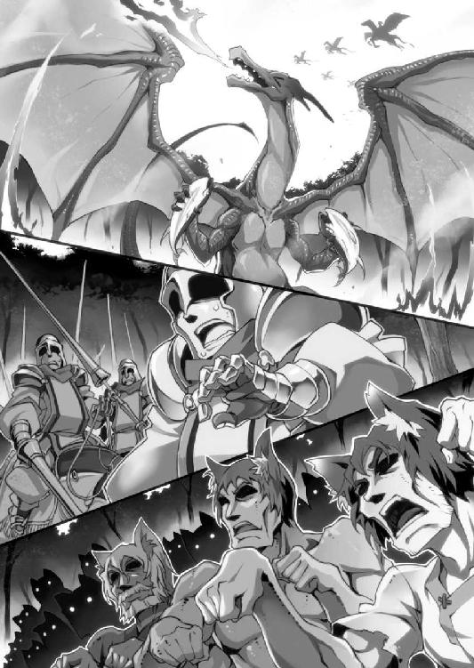
気がつくと、帝国軍は全員が武器を放り投げて遁走していた。
......うん、まあ、そうだね。いきなり最強の騎馬隊がマグロになって、突如現れたドラゴンにバリバリむしゃむしゃ食われたら、そりゃ全力で逃げるよね。
後に「第一次温泉大戦」と名付けられた一戦は、
ユ国軍、死者ゼロ。
帝国軍、死者ゼロ。（馬は除く）
両軍ともに人的被害は皆無でありながら、結果だけ見ればユ国の圧倒的勝利で終結した。
この一戦で帝国側が受けた（精神的）被害は甚大だった。ただ一度の戦闘で、ユ国は帝国軍の兵士たちに「二度とユ国に攻め込みたくない」というトラウマと、「ユ国に迂闊に手を出したら大変な目にあう」という教訓を植え付けた。
温泉とドラゴンに守護された小国の噂は、尾ひれを付けてあっという間に大陸全土に広まり、ユ国のドラゴンと温泉と番頭は生きた伝説になった。
「......勝ったけど、これで本当に良かったのかな？」
言いようのない僕の不安をよそに、戦闘の翌日、帝国側から停戦の申し入れがあった。
ユ国は今日も平和だった。
エピローグ
「決めたぞ！ 私は温泉旅館の『女将』になる！」
僕が入浴中の露天風呂に一糸まとわぬ姿で乱入するなり、ユフィは高らかにそう宣言した。
実姉の裸を見ないように慌てて顔を背け、手で視界を隠しながら、僕はため息をつく。
「どうしたんだよ、いきなり」
「いきなりではない！ 私は常々考えていた。アリマは番頭、ミササは仲居、イブスキは板前。なのになぜ私にだけ役職がないのか。仲間外れは嫌だ！ 私も役職が欲しい！ もっとアリマといちゃいちゃしたい！」
「別に役職なんて無くてもいいだろ。あと最後の一言は関係ないよね」
「そこでハナに相談したところ、旅館には『女将』なる役職があると教えられた。女将は番頭よりも偉いのだろう？ つまり、私が女将になれば番頭のアリマを好きに出来る！ まさに私のためにあるような役職！」
「番頭は旅館の営業面を仕切る人で、女将は接客面を仕切る人のことだよ。どっちが偉いわけでもないから」
姉の裸体から目をそらしながら、僕は風呂を出ようと立ち上がる。最近は混浴する機会が多くなって忘れがちだが、ユフィは美人なうえにプロポーションも抜群だ。二人きりで入浴するのは目の毒が過ぎる。ここはさっさと退散するのが得策だ。
「じゃ、お先に」
手で視界を遮りながら、ユフィを残して露天風呂を出ようとした僕は、
「逃がすか！」
視界の陰から強烈なタックルを受け、風呂場の床に押し倒された。うつぶせに倒れた僕の上に、裸のユフィが馬乗りになる。僕の背中にユフィのお尻の柔らかさが感じられて......。
マズイ。この体勢はいろんな意味で危険だ。
「ばか！ 何やってるんだよ、さっさと離れろ！」
「ふっふっふっ。逃がさないぞ、アリマ。観念して私を女将にするのだ！」
裸で横たわる僕の上に、覆い被さってくる全裸の馬鹿姉。僕は力ずくで引きはがそうとするが、相手はユ国が誇る天才剣士だ。僕の攻撃をかわしながら、巧みな寝技で自分が優位なポジションになるよう組んずほぐれつ誘導していく。
なんだ、この柔らかい感触は！ うわ、やめろ、そんなところ触るなー！
「さあ、私が女将だと認めろ。そうすれば解放してやる」
「ユフィは近衛隊長だろ！ いつまた帝国が攻めてくるかもしれないのに、女将なんてやってる場合じゃないだろ！」
「心配無用だ。帝国内では権力争いが激化しているらしい。今のやつらに戦争を仕掛ける余裕はない」
噂によれば、皇帝主導によるユ国への侵攻作戦が大失敗に終わったことで、皇帝の権威は失墜。圧政を敷いていた皇帝と「反皇帝派」と呼ばれる対抗勢力の権力争いが激化することとなったらしい。この内紛が落ち着くまではユ国は安泰というのが、ユフィの見解だ。
「だから安心して私に女将を任せるがいい！」
ユフィが馬乗りになったまま僕を羽交い締めにする。背中に柔らかいものを押しつけられた僕は顔を真っ赤にしながらじたばたもがくが、当のユフィはびくともしない。全裸の寝技勝負ではユフィが一枚も二枚も上手だった。
「さあ、認めるのだ！ 私を女将にすると言え！」
「わ、わかったよ。認める。ユフィが温泉旅館の女将だ。だから離れて......」
「よし！ これで私は晴れて温泉旅館の女将だ。これからは番頭と二人三脚でいちゃいちゃしながら旅館を切り盛りするぞ！」
「いちゃいちゃする必要ないよねええええ！」
風呂場でユフィに押さえ込まれ、ついに僕は悲鳴を上げた。誰か、助けてええええ!!
「どうしたのじゃ？ 顔がげっそりしているぞ」
「いろいろあってね......」
どうにかこうにかユフィの魔手を逃れた僕は、濡れた髪を乾かすのもそこそこに、旅館の外へと飛び出した。今日はミササと町を散策する約束をしていたからだ。
帝国軍との戦いで一時的にドラゴンの姿を取り戻したミササだが、焼きマグロをたらふく食べて満腹になると、すぐに人間の姿へと逆戻りしてしまった。かくしてミササは今も温泉旅館の仲居として働いている。
「まあ良いわ。それでは行くとするかの」
上機嫌のミササは自然な動きで僕と手をつなぎ、王宮の外へと引っ張って行く。
「ミササ？ どうして手をつなぐの？」
「はあ？ 何を言っているのじゃ。外を歩くときは迷子にならぬよう手をつなぐものじゃ。イブスキと買い出しに行くときは必ずこうしておるわ」
板前のイブスキは、たまに仲居のミササを連れて城外へ買い出しに出かけることがある。ミササは怪力なので荷物運びにうってつけなのだ。
「迷子って......イブスキは完全にミササを子供扱いしているんだな......」
僕はイブスキとミササが手をつないで歩く姿を想像して――それが見事なまでの「仲のいいおじいちゃんと孫娘」の絵になっていて――微笑ましさに笑ってしまった。
「それで、今日はどこへ行くのじゃ？」
「行き先を知らないで手を引っ張ってたの？ 今日は、菓子職人の工房で新作饅頭の試食をするんだよ。今までにない新しい温泉饅頭が完成したらしいんだ」
「ほほう、温泉饅頭か。わしは饅頭も嫌いではないぞ。じゅる」
「ミササは美味しいものなら何でも好きだよね」
たわいもないお喋りを交わしながら、僕たちは菓子職人の工房へと歩を進める。
......ん？ なんだろう。誰かの視線を感じる。
市街地を歩きながら、僕は気配の元を探して周囲を見回す。通りは多くの人が行き交っていたが、そのほとんどが歩きながらちらちらと僕たちを横目で見ていた。耳を澄ますと「あれって......」「ひょっとして......」と小声で囁き合う声も聞こえてくる。
注目されるのも当然か。仮にも一国の王子が、メイド服の女の子と手をつないで白昼堂々市街地を歩いているのだ。関心を集めるのも無理はない。
「あ、あの」
僕が内心で苦笑していると、市井の民が僕たちに声を掛けてきた。
相手は僕と同年代の男性だ。どうしよう。邪険にするのも気が引けるけど、いちいち相手をしていたらきりがない。申し訳ないけど、ここは丁重にお引き取り願うとしよう。
「悪いけど、僕は急いでいるから――」
「ミササ様ですよね！ 俺、ファンなんです！」
......ん？
「よ、よければ握手していただけませんか？」
「うむ。よいぞ」
空いている方の手で、ミササが男と握手する。男は感激のあまり泣きそうな顔になりながら、何度も感謝の言葉を述べて立ち去った。
「......なに、今の？」
「ふむ。わしのファンのようじゃな」
「ファン？ でもミササって町の人たちに嫌われていたんじゃ......」
ニセ剣聖騒ぎのとき、ミササの正体を知った農民たちの表情は今でも忘れられない。彼らは一様に、ドラゴンの化身である少女への恐怖を顔に滲ませていた。
「いつの話をしておるのじゃ。自分で言うのも何じゃが、今のわしはユ国のアイドルじゃ」
「アイドル？ 言葉の意味わかってる？」
「やかましいわ。疑うならあれを見るがよいわ」
ミササが指差した先は、温泉の土産物を扱う売店だった。......うん？ 店の棚に一際目立つものが陳列されているぞ。あれは......木彫のドラゴン？
店先には張り紙で「大人気の温泉ドラゴン・ミササ人形、大量入荷！」と書いてあった。
「あれも見るがよいわ」
ミササが指差した家の軒下では、子供たちが楽しそうに遊んでいた。子供の一人がドラゴンのお面をかぶり、大きな箱の上に立って高らかに叫ぶ。
「帝国軍め！ 温泉ドラゴンのミササが蹴散らしてやる！ とうっ！」
飛び降りた正義のお面ドラゴンが、子供たち演じる悪の帝国軍をばったばったとなぎ倒していく。どうやら子供たちはミササごっこをしているようだ。
唖然としている僕の耳に、周囲にいる大人たちのささやき声が聞こえてきた。
「ねえねえ、あのメイドの格好した女の子。もしかしてミササ様じゃない？」
「うわ、すげー！ 俺、本物を初めて見た！ だけど隣にいる冴えない顔の男は誰だ？」
「きっとお付きの従者だよ。ミササ様ほどになれば、召使いの十人や二十人はいても不思議じゃないよ」
「そっか、召使いか。確かにそんな顔してるね」
......別に王子だと威張る気はないけど、僕がミササの引き立て役になっているのは納得がいかない。
「いつの間にミササは人気者になったの？」
「帝国軍との一戦が終わってからじゃ。どうやらわしの大活躍が評判になったようじゃな。すっかり崇め奉られておるわ。ふぉふぉふぉ」
幼女ドラゴン、図に乗るの巻。
無性に「あれは意地汚いドラゴンが焼き魚に目がくらんで暴れただけだよ」と教えて回りたい衝動に駆られるが、僕は大人なのでぐっと堪える。
「おお、見えてきたぞ。あそこであろう？」
ミササの人気者っぷりに当てられながら、僕たちはようやく目的地である工房に到着した。とりあえずミササ人気はひとまず忘れて、新作饅頭を堪能することにしよう。
僕たちが工房に入ると、さっそく主人から、用意してあった新作饅頭を手渡された。
――ユ国の新たな名物として開発された、新作の温泉饅頭。
それは、表面にドラゴン型の焼き印が押された「温泉ドラゴン饅頭」だった。
饅頭を持ったまま脱力する僕をよそに、ミササは満面の笑みでドラゴン饅頭にかぶりつく。
「ふぉふぉふぉ！ この調子なら、ユ国の紋章がドラゴンの形に変わるのも、そう遠い未来ではなさそうじゃ！ ふぉふぉふぉ！」
はむはむと温泉饅頭を頬張りながら、あんこの甘さと自分の人気に顔を綻ばせるミササであった。
温泉ドラゴン、図に乗るの巻。
王宮に戻った僕は、新作の温泉饅頭を手に、温泉研究所へ陣中見舞いに行くことにした。頭脳労働に勤しむハナへ甘いお菓子をプレゼント。
「こんにちは～。ハナ～？」
勝手に扉を開け、挨拶もそこそこに研究所へと上がり込むと、ハナは実験器具の前で温泉を調合している真っ最中だった。
右手に温泉水の入った試験管を、左手には別の温泉水が入ったガラス瓶を持ち、慎重に試験管を傾けて瓶に温泉を注ぎ込んでいる。集中しているのか、僕の入室にもまったく気づいた様子はない。
......こっそり近づいて驚かせるか。
悪戯心が湧き上がった僕は、ハナに気づかれないよう足音を殺しながら慎重に近づいていく。ハナの背後へ、じわりじわりと距離を詰めていき......今だ！
「ハナっ！」
「ひゃうん！」
可愛らしい悲鳴を上げながら、ハナは反射的に両手を上げて驚きのポーズを取った。
じょぼぼぼ。
高々と掲げた瓶から温泉がこぼれ、ハナは頭から胸にかけてお湯まみれになった。
「......」
「......えーと。ごめん」
両手を上げたまま硬直するハナと、申し訳なさいっぱいの顔で謝罪する僕。
「だ、大丈夫？」
「大丈夫じゃありません」
「あ、ご、ごめん」
いつになくきっぱりと言い切られ、僕は恐縮する。大人しいハナがこんなにはっきりと不平を口にするなんて、相当腹を立てている証拠だ。
ところが、怒っているはずのハナはなぜだか「？」な表情を浮かべていた。
違和感を覚えた僕は、どうしたのかと思いながら彼女を見て――上半身がずぶ濡れになっているハナのあられもない姿に目を奪われた。あられもないというのは、ようするに、濡れた服が肌に貼り付いて、その、透けていると言うか、形がはっきりわかると言うか......。
見てはいけないと思いつつ目を逸らせずにいると、僕の視線に気づいたハナはあわてて両手で胸を隠した。恥ずかしそうに頬を染めながら、ハナは潤んだ瞳で僕を見つめる。
「み、見てください！」
「......は？」
「見てください！ いやらしい目で私を見てください！」
密室に若い男女が二人きりという状況で、大胆なことを口走るハナ。
え？ いやらしい目で？ 私を見てください？ ど、どうしよう。本人が見て欲しいと言っているんだから、しっかりと見てあげるのが礼儀だろうか。
そ、そうだよな。ここまで言われて見ないのは逆に失礼だ。それに正直言って、僕もハナの艶姿はちょっと......いや、かなり見てみたい。何度も混浴しているけど、一糸まとわぬ姿と服が濡れて透けて見えるのでは趣が違うと言うか何と言うか......。
......よし、決めた。見よう！
ハナの許可を得て男らしく決断した僕は、緊張でドキドキと心臓を鳴らしながら、服が透けているハナの肌色を目に焼き付ける。うわ......ハナってこう見えて意外と胸が大きい......。
すると、僕に見つめられたハナは胸元を手で隠しながら顔を真っ赤にして叫んだ。
「ち、違わないから。さっきかぶった温泉のせいじゃないから。思っていることと反対のことを言う効能じゃないから！」
効能......？ なるほど、そういうことか。ハナが頭からかぶった温泉は「思っていることと反対のことを言ってしまう温泉」だったんだ。だからハナは「見ないで」と言いたいのに、逆の言葉を口走っているんだ。
事情を察した僕は、涙目のハナを安心させようと声をかけ......ようとして、ふと思った。
困った顔のハナって、ちょっと可愛いかも。
怯えた表情で不安そうに瞳をウルウルさせるハナを見て、僕は彼女をからかいたい衝動に駆られてしまう。うん、ちょっとだけ、ちょっとだけだから。
「あー、ひょっとして研究の邪魔をしちゃったのかな？ だとしたらごめんね」
「じゃ、邪魔です！ アリマは邪魔なんです！ 迷惑なんです！」
「そうか、そんなに邪魔だったんだ。ごめん」
傷ついたフリをする僕に、ハナは涙目ですがりつく。
「邪魔なんです！ アリマは邪魔なんです～！」
必死になって訴えるハナだが、出てくる言葉は僕を邪魔者扱いする内容ばかりだ。僕は笑い出しそうになるのを堪えながら、意地悪く傷ついたフリを続けた。
「そこまで僕のことが嫌いだったなんて......。気づかなくてごめんね。これからはハナに話しかけないようにするよ」
「そうです！ 嫌いです！ 私はアリマのことが嫌いなんです！ 大嫌いなんです！」
僕のことを嫌い嫌いと絶叫しながら、泣いて腕にしがみつくハナ。なにもそんなに必死にならなくても......。
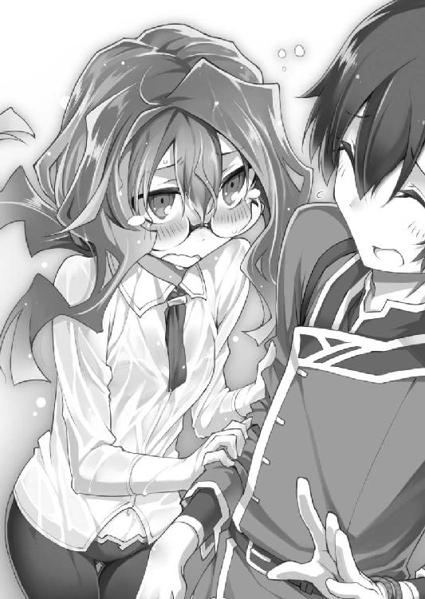
「嫌いです！ 私はアリマのことが嫌いなんです！ 大嫌いなんです！」
「え、ええと......。ごめん、僕が悪かったよ。だからもうそれ以上言わないで」
恥ずかしさに耐えられなくなった僕がお願いするも、興奮しているハナの耳には届かない。
うろたえる僕をよそに、必死なハナはその後も真逆の気持ちを訴え続けるのだった。
「嫌いなんです！ 私はアリマがすごくすごく大嫌いなんです！」
僕が悪かったよ！ だからもう許して！
ハナに「からかってごめんなさい。許してください」と謝罪した僕は、泣きながら「アリマなんて好き！ 大好き！」と罵倒されて温泉研究所を追い出されてしまった。
どうお詫びしたら仲直り出来るかと悩みながら、僕はとぼとぼと旅館へ舞い戻り......そこで、玄関に立っている来客と鉢合わせした。
「こんにちは、バントーさん。お久しぶりですね」
温泉旅館の入口でにこやかに挨拶しているのは、聖遺物研究所所長である金髪痩躯の青年、バベル・バーニャだ。
「......何しに来たんですか」
かたや、僕は冷気をまとった鋭い声で返答。それもそのはず。彼のせいでユ国は滅亡の危機に瀕したのだ。歓迎など出来るはずがない。
ところが、当のバベルは悪びれた様子もなく、久しぶりの再会に頬を緩ませる。
「お元気そうで何よりです。バントーさんがご壮健で私も嬉しいですよ」
「あなたがそれを言いますか。どの面を下げてそんな台詞が......」
「久しぶりにこの旅館に泊まりたいのですが、部屋は空いていますか？」
都合の悪い会話をぶった切り、バベルはマイペースに要求を突きつける。
「......部屋は空いていますが、ユフィに見つかったら殺されますよ？」
「愛する女性に殺されるのなら本望です。どうせなら、殺される前にプロポーズの返事を聞かせてもらえると嬉しいのですが」
穏やかに微笑むバベルは、マイペースなのか、余裕があるのか、それともただの馬鹿なのか、まったく見極めがつかない。
度し難い男だが、仮にも相手は（おそらく）帝国皇帝陛下だ。斬り殺したら帝国との全面戦争にも発展しかねない。仕方がないのでユフィには我慢するよう後で言いつけておこう。
「宿なら他にもあるでしょう。どうしてまたうちの旅館に泊まりたいんですか？」
「あなたたちに興味が湧きましてね。もっとよく知りたくなったんです」
「僕たちのことを？」
「はい。とても魅力的ですよ。この国も、あなたたちも」
楽しそうな彼の表情からは毒気も嫌味も感じられない。どこまでが本心なのか読み切れないが、穏やかに笑うバベルを僕はどうしても憎みきれなかった。こういうところが「お前はお人好しだ」と言われる原因なのかな？
まあ、百歩譲って彼の言い分を信じたとしよう。だけど疑問は他にもある。帝国は内紛状態で、バベルは悠長に旅行なんてしている余裕はないはずだ。
「帝国では反皇帝派の活動が活発化していると聞きましたが、バベル様がこんなところに居ていいのですか？」
「それが、反皇帝派の主要メンバーが汚職で投獄されましてね。いやあ、急に自分の悪事をぺらぺらとしゃべり出すなんて、世の中には不思議なことがあるものですね」
後で聞いた話では、皇帝と対立していた権力者は軒並み、ある日突然嘘をつけない体質になり、自分の犯してきた悪事を包み隠さずしゃべるようになったらしい。権力を笠に着て悪事を重ねてきたのだから、投獄されるのは自業自得かもしれないが......。
そういえば、バベルは「思っていることを正直に喋ってしまう温泉」を大量に持ち帰っていたけど......。
「私を泊めていただけますか？」
温厚を絵に描いたようなバベルの笑顔に、僕も愛想笑いで応える。
まあいいさ。ここはドラゴンをも泊めた温泉旅館。「来る者は拒まず」はうちのモットーだ。
僕は古文書に記されていた湯人の名言を心に刻む。曰く――お客様は神様です。
「わかりました。番頭の私が、ご案内させていただきます。ただ......泊める代わりに、一つ条件があります」
「条件？ 何でしょうか」
警戒するバベルへ、僕は心を込めて接客する。
ここはユの国。世界一の温泉旅館。
温泉は、人々の心に癒しと安らぎを与える至上の極楽。
だから、
「一度、温泉に入ってみてください。きっと、あなたも病みつきになりますよ」
あとがき
はじめてお会いする皆様、はじめまして。そうでない皆様、大変ご無沙汰しております。山川進と申します。
あとがきということで、ここからは本作「温泉ドラゴン王国」が誕生するに至った経緯を、つらつらと語ってみたいと思います。
発端は今を去ること三年前。知人と二人で「もっとたくさんの人に自著を読んでもらうにはどうすればいいか」と語り合っていたときのことです。
知人「これからは読者のニーズにあった話を書いていくべきだと思うんだ」
私「なるほど。それで、読者はどういう話を求めているのかな？」
知人「それがわかれば苦労はしない（きっぱり）」
私「うーん、これがアニメなら需要のある話も想像がつくんだけど」
知人「と言うと？」
私「アニメの場合、シリーズ中に必ず水着や温泉をフィーチャーした回があるだろ。これは温泉回を求めている視聴者がいるからだ。温泉回を入れておけば、きっと売り上げが伸びるんだよ」
知人「なるほど。だったら、全話温泉回にしたらバカ売れじゃね？」
私「 鬼 才 あ ら わ る ！ 」
こうして私は「最初から最後まで温泉回」なライトノベルを書こうと決意したのです。みんな温泉回が大好きなんだろ？ もちろん私も大好きさ！
とバカ話をしている間に行数も尽きて参りました。ここからは関係各位に謝辞を。
いつも的確なアドバイスをくださる担当編集Ｋ様。魅力的なイラストの数々を描いてくださった児玉酉様（酉様の描くヒロイン三人が大好きです！）。本書執筆の機会を与えてくださったオーバーラップのＩ様。そして、オーバーラップ文庫編集部様および刊行・販売に関わったすべての皆様。私がここにいられるのは皆様のおかげです。本書が皆様の喜びにつながることを切に願っております。
そして何より、読者の皆様。あなたが本書を手に取ってくださったことが、私にとって最高の喜びです。ここまで読んでくださったあなたに、心からの感謝を。
ありがとうございました。
二〇一三年四月某日 山川進
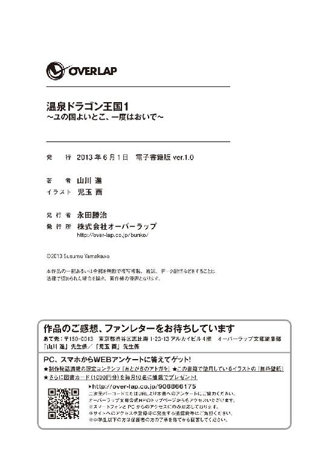